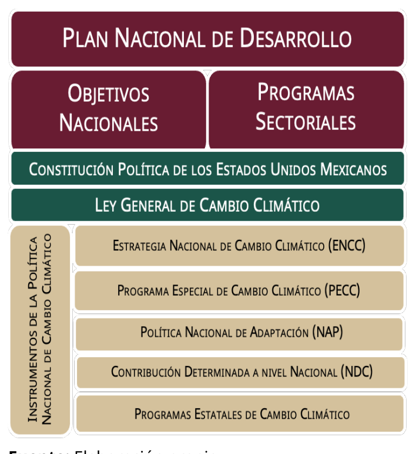
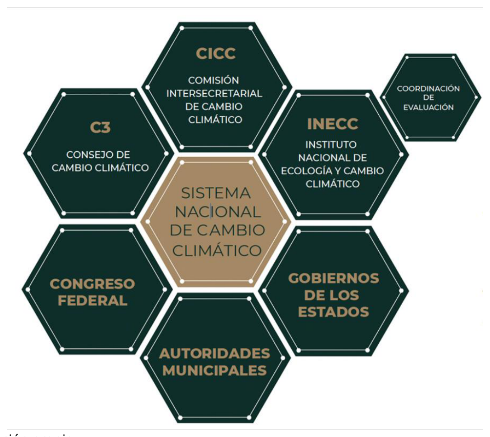
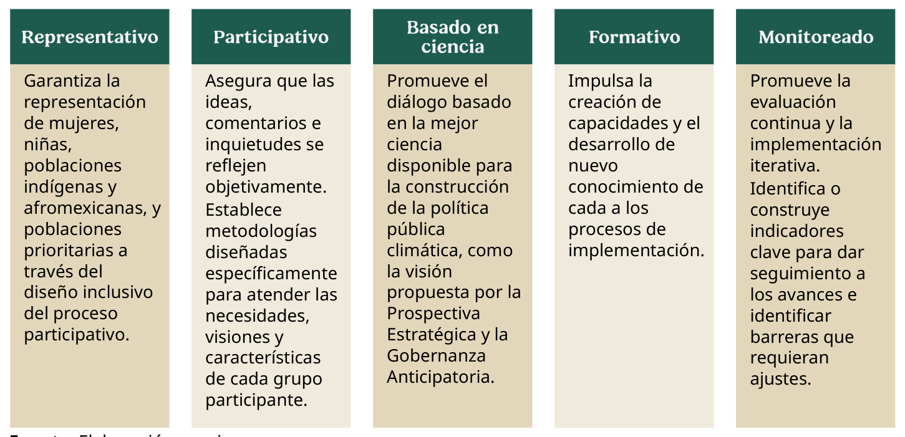
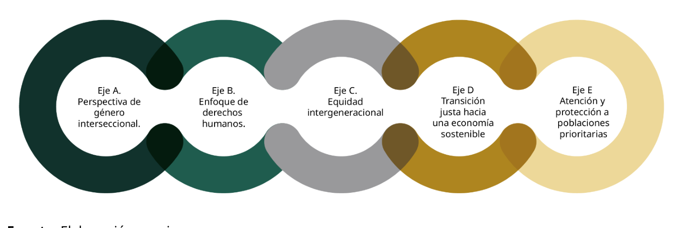
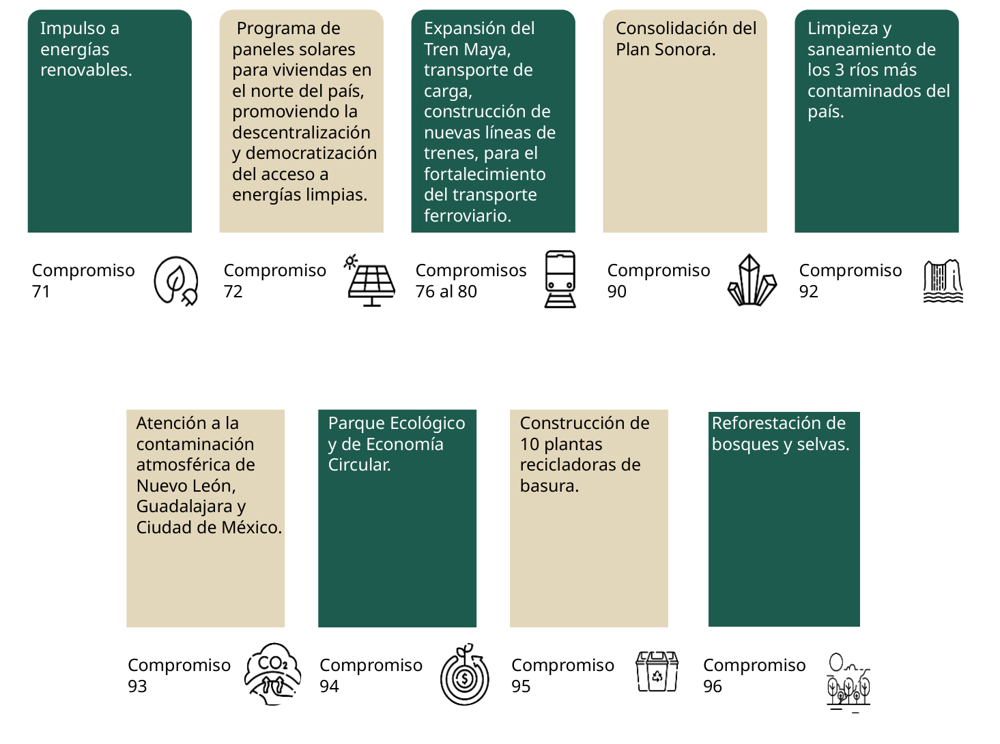
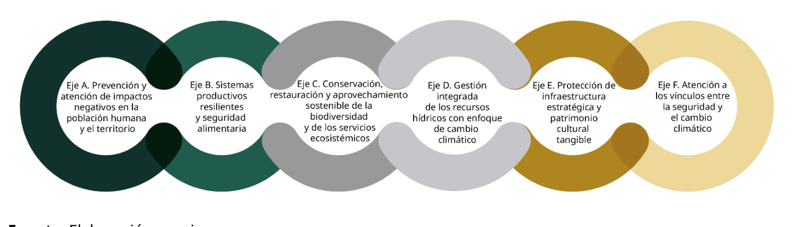
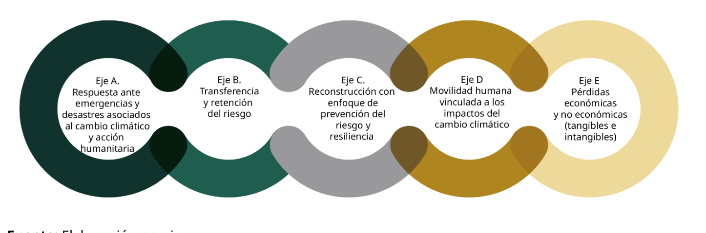
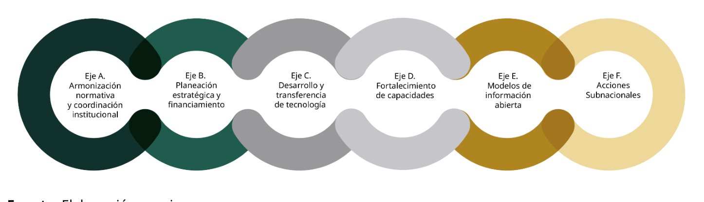
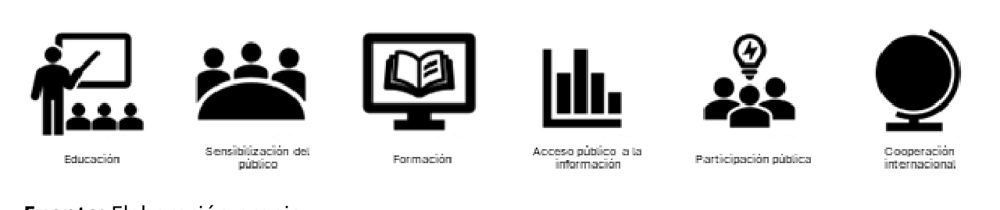

Secretaría de Medio Ambiente y Recursos Naturales Dirección General de Políticas para la Acción Climática. Av. Ejército Nacional 223, Col. Anáhuac, Miguel Hidalgo C.P. 11320, Ciudad de México www.gob.mx/semarnat
FORMA DE CITAR
SEMARNAT, (2025). Actualización de la Contribución Determinada a nivel Nacional 3.0 de México. Gobierno de México.
|
Presidenta de México |
Claudia Sheinbaum Pardo |
|
Comisión Intersecretarial de Cambio Climático |
|
|
Presidencia |
Alicia Bárcena Ibarra Secretaria de Medio Ambiente y Recursos Naturales |
|
Integrantes |
Invitados permanentes |
|
Rosa Icela Rodríguez Velázquez Secretaria de Gobernación |
Instituto Nacional de Ecología y Cambio Climático |
|
Juan Ramón de la Fuente Ramírez Secretario de Relaciones Exteriores |
Agencia de Seguridad, Energía y Ambiente |
|
Ricardo Trevilla Trejo Secretario de la Defensa Nacional |
Comisión Nacional de Áreas Naturales Protegidas |
|
Raymundo Pedro Morales Ángeles Secretario de Marina |
Comisión Nacional del Agua |
|
Edgar Abraham Amador Zamora Secretario de Hacienda y Crédito Publico |
Comisión Nacional Forestal |
|
Ariadna Montiel Reyes Secretario de Bienestar |
Comisión Nacional para el Conocimiento y Uso de la Biodiversidad |
|
Luz Elena González Escobar Secretaria de Energía |
Comisión Nacional de Vivienda |
|
Marcelo Ebrard Casaubon Secretario de Economía |
Consejo Nacional de Humanidades, Ciencias y Tecnologías |
|
Jesús Antonio Esteva Medina Secretario de Infraestructura, Comunicaciones y Transportes |
Instituto Mexicano de Tecnología de Agua |
|
Mario Delgado Carrillo Secretario de Educación Pública |
Instituto Nacional de Estadística y Geografía |
|
David Kershenobich Stalnikowitz Secretario de Salud |
|
|
Edna Elena Vega Rangel Secretaria de Desarrollo Agrario, Territorial y Urbano |
Instituto Nacional de los Pueblos Indígenas |
|
Josefnia Rodríguez Zamora Secretaria de Turismo |
Instituto Nacional de las Mujeres |
|
Omar García Harfuch Secretario de Seguridad y Protección Ciudadana |
Instituto Nacional de Antropología e Historia |
|
Julio Antonio Berdegué Sacristán Secretario de Agricultura y Desarrollo Rural |
Procuraduría Federal de Protección al Ambiente |
|
Rosaura Ruíz Guitérrez Secretaria de Ciencia, Humanidades, Tecnología e Innovación |
Dirección General de Políticas para la Acción Secretaría Climática, Subsecretaría de técnica Desarrollo Sostenible y Economía Circular, SEMARNAT |
|
Minerva Citlali Hernández Mora Secretaria de las Mujeres |
|
Autoría y colaboración |
|
|
Actualización a cargo de la Secretaría de Medio Ambiente y Recursos Naturales, con la participación del Instituto Nacional de Ecología y Cambio Climático, la opinión del Consejo de Cambio Climático y la aprobación de la Comisión Intersecretarial de Cambio Climático. |
|
|
Coordinación y revisión del documento |
Secretaría de Medio Ambiente y Recursos Naturales Alicia Isabel Adriana Bárcena Ibarra Secretaria de Medio Ambiente y Recursos Naturales José Luis Samaniego Leyva Subsecretario de Desarrollo Sostenible y Economía Circular Andrea Hurtado Epstein Directora General de Políticas para la Acción Climática Instituto Nacional de Ecología y Cambio Climático José Abraham Ortínez Álvarez Encargado de Despacho del Instituto Nacional de Ecología y Cambio Climático Fabiola Ramírez Hernández Coordinadora General de Mitigación del Cambio Climático Celia Piguerón Wirz Coordinadora General de Adaptación al Cambio Climático y Ecología |
|
Elaboración de contenidos |
Equipo técnico de la iniciativa Climate Promise del Programa de las Naciones Unidas para el Desarrollo Michelle Ramírez Bueno Elizabeth Mosqueda Rodríguez Alejandra Lozano Rubello Dahely J. Castelán Mendoza Mariana Díaz Ávila Luis Paz Flores Horacio Limón Medina Vanessa Martínez Gómez Secretaría de Medio Ambiente y Recursos Naturales Dirección General de Políticas para la Acción Climática Diana Guzmán Torres Suriel Islas Martínez Juan Martín Aguilar Hernández Mariana Méndez Mora Gustavo Pérez Chirinos Rebeca Ampudia Ladrón de Guevara Luisa Alejandra Domínguez Álvarez Instituto Nacional de Ecología y Cambio Climático Coordinación General de Mitigación del Cambio Climático Eunice Alejandra Cortés Alfaro Andrea Navarrete Alfonzo Linda Riva Palacio Flores Roberto Ulises Ruiz Saucedo Luz María González Osorio Óscar León Morales Verónica Diego Santos Nubia Vanessa Picazo Cuervo Arturo Martínez Hernández Mauricio Álvarez Torillo Alejandra Vélez Estrada Ruperto Valencia Reyes Coordinación General de Adaptación al Cambio Climático y Ecología Aram Rodríguez de los Santos Cruz Arcelia Tánori Villa Eduardo Rodríguez Garagarza Mónica Nosti Meza Alicia Rodríguez Hernández Marisela Ricárdez García Gemma Abisay Ortíz Haro Erwin Armando Martí Flores Apoyo técnico 2050 Pathways Platform y equipo consultor Con fnianciamiento de la Iniciativa Internacional del Clima (IKI) Agencia Francesa para el Desarrollo (AFD) Open Society Foundations (OSF) Comunidad de modelación Agencia Danesa de Energía Coalición por el Clima y el Aire Limpio (CCAC) del Programa de las Naciones Unidas para el Medio Ambiente Energy Systems Modeling, Analysis and Research (E4SMA) Energyanalyse (EA) Iniciativa Climática de México (ICM) Instituto de Desarrollo, Energía y Ambiente (IDEA) Instituto de Ciencias de la Atmósfera y Cambio Climático (ICAyCC) y Programa de Investigación en Cambio Climático (PINCC) de la Universidad Nacional Autónoma de México |
|
Desarrollo del proceso participativo |
Adriana Basaury Molina Consultora Francisco Padrón Gil Consultor |
|
Reconocimientos |
Este trabajo fue posible gracias al apoyo de la iniciativa Climate Promise del Programa de las Naciones Unidas para el Desarrollo (PNUD), que fnianció al equipo técnico encargado de su elaboración. Agradecemos su compromiso para fortalecer la acción climática en México. Reconocemos de manera especial el acompañamiento de Fernando Camacho a lo largo de este proceso. A la Iniciativa Climática de México (ICM), por su compromiso y acompañamiento para impulsar la ambición climática de México y contribuir a la construcción de un futuro más sostenible para el país. Expresamos un reconocimiento especial a Adrián Fernández y Jorge Villarreal por su valioso apoyo en este esfuerzo. Al Programa de Investigación en Cambio Climático y al Instituto de Ciencias de la Atmósfera y Cambio Climático de la Universidad Nacional Autónoma de México. A Francisco Estrada y Amparo Martínez, agradecemos su dedicación y rigor académico en este proceso. A la Cooperación Técnica Alemana en México (GIZ). A Philipp Schukat y Lorena Gudiño, por su compromiso y acompañamiento. |
|
Diseño Editorial |
Laguna • lagunadentro.com |
La emergencia climática define nuestros tiempos y la respuesta por la que optemos para enfrentarla marcará a nuestra generación y las venideras. El Primer Balance Mundial de la Convención Marco de las Naciones Unidas sobre Cambio Climático subrayó con innegable claridad que las trayectorias de emisiones siguen desalineadas con la meta de limitar el aumento de la temperatura promedio global a 1.5 °C para fniales de este siglo. Exhortó a cerrar de inmediato la brecha existente entre la ciencia y la acción. México no ha sido omiso ante este llamado. Reafrimamos nuestro irrestricto compromiso con el Acuerdo de París, a diez años de su creación, y con una transición justa, que nos lleve a alcanzar cero emisiones netas hacia 2050, al tiempo que protegemos a nuestras comunidades y cuidamos a nuestros ecosistemas.
México vive un momento clave en su historia. Estamos construyendo el Segundo Piso de la Cuarta Transformación y consolidando un modelo de desarrollo basado en el Humanismo Mexicano, que reconoce que el crecimiento económico debe de ir de la mano con la protección del medio ambiente y el bienestar de las personas. El proceso para la actualización de nuestra Contribución Determinada a nivel Nacional es un feil refeljo de esta profunda transformación que la nación experimenta, y un recordatorio de la lucha que sostenemos desde hace décadas y desde diferentes trincheras por garantizar el derecho a un medio ambiente sano. Esta NDC, la tercera, representa una oportunidad sin precedentes para transitar de un modelo de desarrollo extractivista y generador de desigualdades, a uno ambienta- lista y humanista, que respete los límites planetarios y asegure la prosperidad compartida para las generaciones presentes y futuras de mexicanas y mexicanos.
Frente a una crisis climática que no admite más dilaciones y mucho menos su negación, la NDC 3.0 de México es más que un documento de política pública: es un llamado a la acción colectiva, a la colaboración efectiva entre sectores y a la responsabilidad compartida para garantizar un futuro más justo, más incluyente y, sobre todo, más sostenible. Su ambición y su anclaje en los instrumentos nacionales de planeación la convierten en una verdadera hoja de ruta para alcanzar el bienestar colectivo y la protección de la naturaleza que nos sostiene.
Este instrumento trascendental articula sus cinco componentes –mitigación, adaptación, pérdidas y daños, política climática transversal, y entorno habilitador y medios de implementa- ción– bajo una lógica de interdependencia, donde la erradicación de la pobreza y las desigualdades, la conservación de la biodiversidad, el desarrollo económico y la fortaleza territorial ante perturbaciones forman parte de una misma y efectiva estrategia de transformación. Parte de la ambición de esta NDC radica en la forma en la que se construyó; se elaboró mediante un proceso participativo sin precedentes, amplio y deliberativo, de la mano de más de cincuenta dependencias federales, gobiernos estatales y municipales, Pueblos Indígenas y comunidades afrodescen- dientes, organizaciones de la sociedad civil, academia, sector privado, mujeres y jóvenes. Este instrumento no sólo refleja la diversidad del país, sino también su determinación por actuar de manera conjunta y comprometida. México, siendo el quinto país megadiverso del mundo, asume una responsabilidad preponderante en la acción climática global. Nos hemos comprometido a alcanzar la neutralidad de carbono para mediados de siglo y a publicar, en el menor plazo posible, nuestra primera Política Nacional de Adaptación. Estas metas trascienden el imperativo técnico: son la expresión de la voluntad política y la conciencia ética que implica reconfigurar los sistemas económicos, energéticos, industriales, agrícolas y urbanos; movilizar recursos pub́licos y privados, y escalar la innovación tecnológica; y, en todo momento, garantizar que nadie se quede atrás. El éxito de esta política depende también de nuestra capacidad para proteger y restaurar los sumideros naturales de carbono como nuestros bosques, selvas, humedales y ecosistemas marinos. Y, las barreras fundamentales frente al cambio climático, como los manglares.
Esta Contribución Determinada a nivel Nacional 3.0 da un paso decisivo para alinear nuestras políticas climáticas con una visión de Estado, de largo plazo, y cimentada en la justicia climática y la igualdad sustantiva. En paralelo, busca- remos fortalecer los instrumentos legales, institucionales y de gobernanza que nos permitirán materializar estas transforma-ciones en el territorio nacional, y articularlos con el Plan Nacional de Desarrollo 2025-2030, los planes sectoriales y territoriales, y los compromisos multilaterales que nuestro país ha asumido. Su implementación efectiva dependerá de la participación activa, vigilante y crítica de todas las personas, organizaciones e instituciones que conforman a nuestra patria.
Con la NDC 3.0, México reafrima su vocación como actor comprometido y su espacio como líder propositivo en la gobernanza climática internacional, capaz de incidir con acción, ambición y coherencia en el rumbo del planeta. Convoco a que este documento no sólo sea consultado, sino que sea apropiado por toda la sociedad mexicana. En un mundo que exige audacia, solidaridad y visión de futuro, México está listo para liderar con el ejemplo.
Claudia Sheinbaum Pardo Presidenta Constitucional de los Estados Unidos Mexicanos
México refrenda su compromiso ante la Convención Marco de las Naciones Unidas sobre el Cambio Climático (CMNUCC) al presentar la actualización de su Contribución Determinada a nivel Nacional (NDC, por sus siglas en inglés) 3.0, en concordancia con la Ley General de Cambio Climático (LGCC) y el Artículo 4 del Acuerdo de París.
La NDC 3.0 de México tiene un horizonte de implementación hasta el 2035, y refleja la ambición de un país en pleno proceso de transformación hacia un modelo de desarrollo más incluyente, justo, resiliente y sostenible. Con esta NDC, México reconoce su responsabilidad –compartida pero diferencia- da- de contribuir a la lucha global contra la crisis climática, a la vez que responde a las diversas circunstancias nacionales que hacen del país uno de los más vulnerables ante sus impactos negativos, y a los desafíos que implica la transversalización del enfoque de género, derechos humanos y justicia ambiental en la acción climática. De esta forma, el país apuesta por alinear políticas de desarrollo que aceleren la respuesta climática al tiempo que se avanza en objetivos sociales.
El componente de mitigación ha sido reforzado, presentando un mayor nivel de ambición en dos sentidos. En primer lugar, la meta al 2035 se presenta por primera vez en términos absolutos, a fni de mejorar la transparencia y rendición de cuentas. Esta meta continuá abarcando todos los gases de efecto invernadero (GEI) y todos los sectores de la economía: (1) transporte, (2) generación de energía eléctrica, (3) industria, (4) agricultura y ganadería, (5) residuos, (6) petróleo y gas, (7) uso de la tierra, cambio de uso de la tierra y silvicultura, y (8) residencial y comercial. En segundo lugar, la meta al 2035 fue determinada en función del objetivo de largo plazo al que México se ha comprometido de alcanzar emisiones netas cero para mediados de siglo. Por esa razón, México presenta por primera vez sus metas en términos netos, comprometién- dose a alcanzar emisiones netas de entre 364 y 404 millones de toneladas de CO2 equivalente (MtCO2e) en 2035 de manera no condicionada. México podría alcanzar un nivel de emisiones netas entre 332 y 363 MtCO2e de forma condicionada a la movilización de fnianciamiento, la transferencia de tecnología y el fortalecimiento de capacidades por medio de la cooperación internacional.
El componente de adaptación también presenta un mayor nivel de ambición al reforzar las medidas y líneas de acción de los cinco ejes presentados en la NDC 2.0: (a) prevención y atención de impactos negativos en la población humana y el territorio; (b) sistemas productivos resilientes y seguridad alimentaria; (c) conservación, restauración y aprovechamiento sostenible de la biodiversidad y de los servicios ecosistémicos; (d) gestión integrada de los recursos hídricos con enfoque de cambio climático; y (e) protección de infraestructura estratégica y patrimonio cultural tangible. Asimismo, integra un nuevo eje, el eje (f) atención a los vínculos entre la seguridad y el cambio climático, que busca fortalecer la capacidad de respuesta ante conflictos socio- ambientales y otras amenazas a la seguridad humana vinculadas y exacerbadas por los impactos del cambio climático. Este componen- te será el fundamento para el desarrollo de la primera Política Nacional de Adaptación (NAP por sus siglas en inglés) de México, que se espera publicar en 2026.
En la NDC 3.0, México fortalece la integralidad de su política climática al incorporar tres componentes nuevos. El primero de estos, el componente de pérdidas y daños, el cual reconoce la importancia de prevenir, minimizar y atender los efectos negativos del cambio climático que persisten a pesar de los esfuerzos de mitigación y adaptación. Este nuevo componente está integrado por cinco ejes: (a) respuesta ante emergencias y desastres asociados al cambio climático y acción humanitaria; (b) transferencia y retención del riesgo; (c) reconstrucción con enfoque de prevención del riesgo y resiliencia; (d) movilidad humana vinculada a los impactos del cambio climático; y (e) pérdidas económicas y no económicas (tangibles e intangibles).
Asimismo, la NDC 3.0 amplía su alcance al integrar un componente de política climática transversal, que busca hacer operativa la perspectiva de género, el enfoque de derechos humanos, la transición justa y la equidad intergeneracional en la implementación de la política climática, así como garantizar la consideración e inclusión efectiva de las poblaciones prioritarias.
Por uĺtimo, el componente de entorno habilitador y medios de implementación busca detonar acciones concretas para movilizar el fnianciamiento, facilitar la transferencia de tecnología y fortalecer capacidades a todos los niveles, así como identifciar intervenciones necesarias —incluyendo acciones en materia de reforma regulatoria— para garantizar las condiciones habilitantes que permitan la implementación efectiva de la NDC.
La NDC 3.0 de México se sustenta en las prioridades de la actual administración, recogidas en el Plan Nacional de Desarrollo 2025-2030, que establece cuatro ejes generales (Gobernanza con justicia y participación ciuda- dana; Desarrollo con bienestar y humanismo; Economía moral y trabajo; y Desarrollo sustentable) y tres ejes transversales (Igualdad sustantiva y derechos de las mujeres; Innova- ción pública para el desarrollo tecnológico nacional; y Derechos de las comunidades indígenas y afromexicanas), así como en los Cien Compromisos para el Segundo Piso de la Cuarta Transformación de la Presidencia de la Repub́lica. En particular, el Plan México, Estrate- gia de Desarrollo Económico Equitativo y Sustentable para la Prosperidad Compartida, traza las directrices para que la transición hacia una economía baja en emisiones y resiliente al clima se asuma como una oportunidad y un motor de desarrollo, promoviendo la inversión en sectores estratégicos para incrementar el contenido nacional de la producción, crear empleos dignos, fomentar la innovación tecnológica y proporcionar cobeneficios fundamentales para la reducción de la pobreza.
En esta línea, la NDC 3.0 reafrima el compromiso del Gobierno de México con la Agenda 2030 y sus 17 Objetivos de Desarrollo Sostenible, reconociendo que la acción climática está intrínsecamente vinculada al desarrollo y, si es diseñada deliberadamente para ello, puede tener un efecto multiplicador en la salud y el bienestar social, la corrección de desigualdades estructurales, la protección del patrimonio biocultural y el incremento de la competitividad económica. Es así que México apuesta por un desarrollo sostenible en armonía con la acción climática, en el que se redefina la adaptación no como un costo sino como un catalizador de la productividad, el crecimiento y la inclusión del país.
Esta NDC fue construida por medio de un amplio proceso participativo –en apego a las obligaciones de México bajo el Acuerdo de Escazú– en el que se escucharon todas las voces. Su implementación debe llevarse a cabo bajo los mismos principios, garantizando la participación signifciativa de todas las perso- nas: mujeres en toda su diversidad, Pueblos Indígenas y comunidades afromexi-canas, infancias y juventudes, personas adultas mayores, migrantes, personas con discapa- cidad, población LGBTIQ+, y todos los grupos poblacionales en situación de vulnerabilidad, haciendo efectivo el mandato de “no dejar a nadie atrás”. Por ello, la NDC 3.0 se vincula directamente con otros instrumentos clave para la puesta en marcha de una acción climática incluyente y transformadora, en particular con el Plan Estratégico de Género, Derechos Humanos y Cambio Climático.
Con la tercera edición de su NDC, México no sólo reafrima su compromiso con el Acuerdo de París, sino que también asume su liderazgo ante la comunidad internacional, enfatizando la importancia de la solidaridad global y la cooperación para hacer frente al mayor reto que enfrenta la humanidad en su conjunto. El desafío es enorme, pero también lo es la oportunidad de avanzar hacia un futuro más igualitario, justo y sostenible, en el que todas y todos seamos corresponsables.
Alicia Bárcena Ibarra Secretaria de Medio Ambiente y Recursos Naturales
México ocupa el undécimo lugar a nivel mundial en términos de población y el decimotercero en cuanto al tamaño de su economía, además de ser reconocido como el quinto país megadiverso del mundo (después de Brasil, Colombia, China e Indonesia).
Por su ubicación entre dos océanos, sus características biofísicas y sus condiciones socioeconómicas, el territorio nacional presenta un alto grado de vulnerabilidad ante los efectos del cambio climático. Según el Índice de Adaptación Global de la Universidad de Notre Dame (ND-GAIN), México ocupa actualmente el puesto 100 de 187, y ha ido incrementando su vulnerabilidad en los últimos años (en 2020 ocupaba el puesto 95). En cualquier escenario de calentamiento global, incluido el de 1.5 ºC, los impactos previstos resultan sumamente preocupantes para México, que ya padece el aumento en la frecuencia e intensidad de fenómenos hidrometeorológicos extremos, las modificaciones en los patrones de precipitación, el incremento de la temperatura media y del nivel del mar, así como los efectos sobre las comunidades más vulnerables, la biodiversidad y la disponibilidad hídrica. Estos impactos representan riesgos signifciativos para la seguridad alimentaria, la infraestructura estratégica, la salud pub́lica, y los sistemas productivos del país.
México se está calentando más rápido que el promedio mundial, con una tasa de aumento en la temperatura de 3.2ºC por siglo en comparación con la tasa de aumento en la temperatura global de 2ºC por siglo, lo cual es una ineludible llamada de atención para actuar ahora.
Los desafíos para la adaptación se acentúan en un país en el que alrededor de 38.5 millones de personas se encuentran en situación de pobreza multidimensional —es decir, que no tienen garantizado el ejercicio de al menos uno de sus derechos sociales, como educación, salud, seguridad social, vivienda y alimentación—, y 7 millones viven en situación de pobreza extrema. Además, las comunidades rurales e indígenas, así como las mujeres y las juventudes, enfrentan condiciones de mayor vulnerabilidad, por lo que resulta fundamental abordar la política nacional desde un enfoque de justicia climática.
El contexto económico se caracteriza por la necesidad de conciliar el crecimiento con la reducción de emisiones, mediante la transición energética, la diversifciación de la matriz productiva, la eficiencia en el uso de recursos — con un fuerte impulso a la economía circular—, y una apuesta sin precedentes por la innovación tecnológica de alto contenido nacional. La política climática debe actuar como motor de desarrollo y vincularse de manera transversal con los compromisos para el bienestar social, la igualdad sustantiva y la preservación del patrimonio biocultural.
Aunque México cuenta con un marco legal sólido, esta NDC 3.0 se desarrolla en una coyuntura clave, en la que diversos instrumentos normativos y de política pub́lica están siendo actualizados para fortalecer la planeación a largo plazo, la armonización de instrumentos bajo el enfoque de gobernanza multinivel, y la congruencia con los compromisos internacionales. Este contexto representa una oportunidad única para alinear la visión y las prioridades de la política nacional de cambio climático, el fnianciamiento necesario para su implementación, y los sistemas de monitoreo, reporte y verificación, así como de monitoreo, evaluación y aprendizaje, que den cuenta de su efectividad y resultados.
Los derechos humanos son el centro del sistema jurídico mexicano. La Constitución Política de los Estados Unidos Mexicanos (CPEUM) reconoce la supremacía normativa de todos los tratados internacionales de derechos humanos adoptados formalmente por el Estado mexicano, elevando la importancia del derecho a un medioambiente sano, así como todos aquellos amenazados por el cambio climático, de conformidad con los principios de universalidad, interdependencia, indivisibilidad y progresividad.
Nuestro país es Parte de los principales tratados internacionales de derechos humanos, entre ellos: el Pacto Internacional de Derechos Civiles y Políticos (1966); el Pacto Internacional de Derechos Económicos, Sociales y Culturales (1966); la Convención sobre la Eliminación de Todas las Formas de Discriminación contra la Mujer (CEDAW, 1981); la Convención sobre los Derechos del Niño; la Convención Internacional sobre la Protección de los Derechos de todos los Trabajadores Migratorios y de sus Familiares; y la Convención sobre los Derechos de las Personas con Discapacidad.
Asimismo, es Parte de los tratados de derechos humanos a nivel regional dentro de los que destacan la Convención Americana sobre Derechos Humanos y el Acuerdo Regional sobre el Acceso a la Información, la Participación Pub́lica y el Acceso a la Justicia en Asuntos Ambientales en América Latina y el Caribe (Acuerdo de Escazu)́. México ha ratifciado 78 Convenios de la Organización Internacional del Trabajo (OIT) que garantizan los derechos individuales y colectivos de las y los trabajadores, incluyendo el Convenio 169 sobre Pueblos Indígenas y Tribales, así como la Declaración de las Naciones Unidas sobre los Derechos de los Pueblos Indígenas. Además, México está sujeto a la jurisdicción de la Corte Interamericana de Derechos Humanos.
El artículo 4 de la CPEUM reconoce expresamente que toda persona tiene derecho a un medio ambiente sano para su desarrollo y bienestar, y que el Estado garantizará el respeto a este derecho, junto con otros derechos vinculados al cambio climático, como el derecho a la salud, al agua, a la alimentación, a la vivienda y a la movilidad sostenible. A ello se suman el artículo 25, que establece el mandato de un desarrollo nacional integral y sostenible; el artículo 27, que regula la propiedad y gestión de los recursos naturales bajo criterios de conservación; y el artículo 73, que faculta al Congreso de la Unión para expedir leyes en materia ambiental. En conjunto, estos preceptos conforman un marco constitucional que consolida los derechos ambientales fundamentales y el mandato de avanzar hacia un desarrollo sostenible.
México es Parte de los tratados internacionales vinculantes en materia de cambio climático: la Convención Marco de las Naciones Unidas sobre el Cambio Climático (CMNUCC, 1992), que establece las bases para la acción climática global bajo los principios de equidad y de responsabilidades comunes pero diferenciadas, y el Acuerdo de París (2015), que prevé la actualización progresiva de la Contribución Determinada a nivel Nacional.
En el marco normativo nacional, la Ley General de Cambio Climático (LGCC), publicada en junio de 2012, constituye el marco jurídico fundamental de la política climática de México y representa un hito histórico, al ser la primera ley nacional de cambio climático de un país en desarrollo y la segunda del mundo. Esta ley establece la regulación de las emisiones de gases y compuestos de efecto invernadero, así como disposiciones en materia de adaptación que salvaguarden a la población, los ecosistemas y los sectores productivos. La LGCC define el marco de gobernanza y los instrumentos de planeación para el desarrollo de la política nacional de cambio climático y, desde su reforma de 2018, reconoce a la NDC como uno de sus instrumentos rectores, estableciendo así un puente directo entre los compromisos internacionales de México bajo el Acuerdo de París y su marco normativo interno.
La política nacional de cambio climático en México se articula con la planeación nacional y con los objetivos e instrumentos definidos en la LGCC. El Plan Nacional de Desarrollo (PND) 2025–2030 constituye el marco rector de las políticas pub́licas. A partir del PND, el Programa Sectorial de Medio Ambiente y Recursos Naturales 2025–2030 traduce los objetivos generales en líneas de acción específicas. Este programa establece medidas para conservar los ecosistemas, fortalecer la gestión hídrica, impulsar la economía circular y promover la transición energética. De esta manera, constituye el puente operativo entre el PND y la política nacional de cambio climático, al reflejar las metas de mitigación y adaptación en los presupuestos, mecanismos e indicadores de implementación sectorial.
La LGCC establece los siguientes instrumentos de planeación de la política nacional de cambio climático:
priorizando a las poblaciones en situación de riesgo y a los territorios estratégicos en todos los sectores de desarrollo. Esta política deberá sustentarse en instrumentos de diagnóstico, planificación, medición, monitoreo, reporte, verificación y evaluación.

Acuerdo de París, el cual obliga a cada Parte actualizar su contribución cada cinco años, incrementando progresivamente su ambición. La primera NDC de México fue publicada en 2015. En 2020 se presentó la NDC 2.0, que fue actualizada en 2022 con una mayor ambición en su meta de reducción de GEI: 35 % al 2030 respecto de un escenario tendencial.
A estos instrumentos de política se suma el Plan Estratégico de Género, Derechos Humanos y Cambio Climático, que establece estrategias por sector y acciones de la APF con los marcos regulatorios y de planeación nacional, estatal y municipal, asegurando que las políticas climáticas integren de forma transversal la perspectiva de género, interseccionalidad e interculturalidad en todos sus componentes, particularmente en atención a las poblaciones prioritarias.
Fuente: Elaboración propia.
La Ley Orgánica de la Administración Pub́lica Federal (LOAPF) dispone que la SEMARNAT es la responsable de conducir la política del sector ambiental, atribución que ejerce de manera concurrente con otras dependencias y órdenes del gobierno, en un esquema de corresponsabilidad interinstitucional. Por su parte, la LGCC establece que corresponde a la Federación formular y conducir la política nacional en la materia; elaborar, coordinar y aplicar los instrumentos de política climática; diseñar, junto con la sociedad, los instrumentos de planeación del cambio climático; e instrumentar su seguimiento y evaluación.
La LGCC establece el Sistema Nacional de Cambio Climático (SINACC) como mecanismo principal de coordinación multi-actor y multinivel en materia de cambio climático. Está integrado por la Comisión Intersecretarial de Cambio Climático (CICC), que coordina la acción de las diversas Secretarías de Estado de la APF; el Instituto Nacional de Ecología y Cambio Climático (INECC), que brinda apoyo técnico y científico; el Congreso de la Unión, que proporciona respaldo normativo y presupuestal; los gobiernos estatales y las autoridades municipales, responsables de implementar sus atribuciones conforme a las realidades locales; y el Consejo de Cambio Climático (C3), un órgano consultivo que aporta la visión de la academia, la sociedad civil y el sector privado.
La CICC promueve la coordinación de las acciones de las dependencias y entidades de la APF en materia de cambio climático. Actualmente, integra a las personas titulares de las Secretarías de Gobernación; Relaciones Exteriores; Marina; Hacienda y Crédito Público; Bienestar; Medio Ambiente y Recursos Naturales; Energía; Economía; Agricultura y Desarrollo Rural; Infraestructura, Comunicaciones y Transportes; Educación Pub́lica; Salud; Desarrollo Agrario, Territorial y Urbano; Turismo; y Seguridad y Protección Ciudadana. En su primera sesión ordinaria de 2025, la CICC decidió incorporar a la Secretaría de las Mujeres, la Secretaría de la Defensa Nacional, y la Secretaría de Ciencia, Humanidades, Tecnología e Innovación.
La CICC ejerce sus funciones mediante cinco grupos de trabajo: el Grupo de Trabajo de Políticas de Adaptación (GT-ADAPT) que, por decisión de la CICC, ahora integra también un subgrupo de Pérdidas y Daños; el Grupo de Trabajo de Mitigación (GT-MITIG); el Grupo de Trabajo sobre Reducción de Emisiones por Deforestación y Degradación (GT-REDD); el Grupo de Trabajo de Negociaciones Internacionales (GT-INT); y el Grupo de Trabajo sobre Financiamiento Climático (GT-FIN).
Conforme a la LGCC, los gobiernos estatales tienen la responsabilidad de formular, conducir, evaluar y actualizar sus políticas de cambio climático. Entre sus competencias destacan la promoción de la investigación científica, la educación ambiental y la elaboración de atlas de riesgos, así como la integración de medidas de mitigación y adaptación en la planeación territorial y sectorial. Actualmente, 29 entidades federativas cuentan con leyes estatales de cambio climático, y la mayoría disponen de programas específicos y consejos estatales activos. Por su parte, en el marco del artículo 115 constitucional, los municipios formulan e implementan políticas y acciones locales en consonancia con el PND, la ENCC, el PECC y los programas estatales.

Fuente: Elaboración propia.
El proceso de actualización de la NDC fue liderado por la SEMARNAT y el INECC, en estrecha coordinación con las dependencias relevantes de la APF, y se nutrió de insumos recolectados por medio de un proceso participativo amplio e incluyente que se estructuró en torno a cinco pilares:

Fuente: Elaboración propia.
A lo largo del proceso de desarrollo de la NDC 3.0, se impulsó el involucramiento constante y significativo de las dependencias y entidades de la APF, junto con la participación activa de gobiernos estatales y municipales, representantes del sector privado y de organizaciones fniancieras, la academia, la sociedad civil y organismos internacionales, así como de la población diferenciada y la población en general. El propósito fue asegurar que la actualización refeljara una visión integral, incluyente y corresponsable de la acción climática nacional.
Para comenzar el proceso, durante el mes de marzo de 2025 se llevaron a cabo siete diálogos sectoriales sobre mitigación, adaptación, y pérdidas y daños, en los cuales participaron más de 200 personas, pertenecientes a 52 dependencias y entidades gubernamentales. En mayo de 2025, se celebró un diálogo adicional sobre la transversalización de la perspectiva de género y el enfoque de derechos humanos. A partir de estos diálogos, se inició un proceso participativo con la APF, orientado a identificar acciones en curso y nuevas oportunidades para fortalecer la mitigación y la adaptación al cambio climático. Este ejercicio permitió dar seguimiento a los avances sectoriales derivados de la NDC 2.0, actualizar la información disponible y promover la coordinación interinstitucional para la formulación de compromisos más ambiciosos en la NDC 3.0.
Se llevaron a cabo más de treinta encuentros con dependencias de la APF, incluidas reuniones bilaterales y sectoriales, así como ocho consultas específicas para el desarrollo de los componentes de adaptación y de pérdidas y daños en julio, con el objetivo de identificar y proponer las acciones que se incorporarían en el componente correspondiente de la NDC 3.0. Este ejercicio de diálogo permanente con las dependencias federales fue apoyado por la organización 2050 Pathways quien, por medio de la Iniciativa Internacional de Clima del gobierno alemán (IKI por sus siglas en alemán), facilitó la contratación de un equipo de personas consultoras que apoyaron a las diferentes cabezas de sector en la formulación de sus medidas y líneas de acción específicas. También se contó con el apoyo de la cooperación técnica alemana (GIZ) en el desarrollo del componente de pérdidas y daños.
Como parte del proceso participativo para la actualización de la NDC 3.0, se desarrolló un ciclo de talleres entre junio y septiembre de 2025 enfocado en incorporar distintas perspectivas, experiencias y conocimientos técnicos y tradicionales. Estos espacios de diálogo y colaboración reunieron a instituciones del gobierno federal, gobiernos subnacionales, organismos internacionales, academia, sociedad civil, sector privado y grupos tradicionalmente subrepresentados, con el propósito de fortalecer la inclusión, la coherencia de las políticas y la ambición climática del país.
Para garantizar la integración efectiva de los aportes, se sistematizaron los resultados de los talleres, asegurando su vinculación sólida y operativa con la actualización de la NDC 3.0. En total, se realizaron 18 talleres en colaboración con otras instituciones del gobierno federal y organizaciones aliadas:
1) Transición justa, en colaboración con la Organización Internacional del Trabajo (OIT). 2) Migración y cambio climático, en colaboración con la Organización Internacional para las Migraciones (OIM). 3) Autoridades ambientales estatales, en colaboración con la Asociación Nacional de Autoridades Ambientales (ANAAE) y WWF México. 4) Transversalización de la perspectiva de género, en colaboración con ONU Mujeres, el Programa de las Naciones Unidas para el Desarrollo (PNUD) y la Secretaría de las Mujeres. 5) Sector académico, en colaboración con la Red de Soluciones para el Desarrollo Sostenible (SDSN, por sus siglas en inglés), co-liderado en México por la Universidad Nacional Autónoma de México (UNAM) y el Tec de Monterrey. 6) Financiamiento climático, en colaboración con el Grupo de Financiamiento Climático de Latinoamérica y el Caribe (GFLAC). 7) Sector industrial, en colaboración con el Centro de Estudios del Sector Privado para el Desarrollo Sostenible (CESPEDES) del Consejo Coordinador Empresarial (CCE). 8) Infancias, en colaboración con el Fondo de las Naciones Unidas para la Infancia (UNICEF). 9) Juventudes, en colaboración con la Red de Acción Climática (REACCIONA). 10) Transversalización de la perspectiva de derechos humanos, en colaboración con la Oficina del Alto Comisionado de las Naciones Unidas para los Derechos Humanos (OACNUDH). 11) Acción climática con gobiernos subnacionales, en colaboración con la Asociación Nacional de Autoridades Ambientales (ANAAE), región Noroeste- Noreste.
12) Acción climática con gobiernos subnacionales, en colaboración con la Asociación Nacional de Autoridades Ambientales (ANAAE), región Centro- Occidente. 13) Acción climática con gobiernos subnacionales, en colaboración con la Asociación Nacional de Autoridades Ambientales (ANAAE), región Sur-Sureste. 14) Infancias indígenas y afromexicanas, en colaboración con World Vision México. 15) Sociedad civil, en colaboración con Iniciativa Climática de México (ICM). 16) Cuidados, salud y género, en colaboración con OXFAM México y el Centro Mexicano de Derecho Ambiental (CEMDA). 17) Poblaciones indígenas y afrodescendientes, en colaboración con el Instituto Nacional de los Pueblos Indígenas (INPI). 18) Financiamiento sostenible, en colaboración con Secretaría de Hacienda y Crédito Pub́lico (SHCP), el PNUD y el Consejo Mexicano de Finanzas Sostenibles (CMFS)
Además, se realizaron dos encuestas en línea: la primera, desarrollada en colaboración con UNICEF y dirigida a infancias y juventudes, tuvo como propósito socializar el contenido y los objetivos de la NDC, así como recabar propuestas para enriquecer su contenido; la segunda, dirigida a la sociedad en general, buscó recibir aportaciones específicas sobre los componentes de la NDC.
Por uĺtimo, destaca que la NDC 3.0 se sustenta en muĺtiples ejercicios de modelación liderados por el INECC, con la colaboración de la Agencia Danesa de Energía (ADE), la Iniciativa Climática de México (ICM), el Programa de Investigación en Cambio Climático (PINCC) de la Universidad Nacional Autónoma de México (UNAM), y la Coalición Clima y Aire Limpio (CCAC), entre otros integrantes de la comunidad mexicana de modelación. Se desarrollaron diversos escenarios para identifciar las rutas óptimas de descarbonización sectoriales, y mapear los riesgos climáticos en el territorio nacional.
El cambio climático no sólo modifica los patrones meteorológicos y amenaza a los ecosistemas, sino que también profundiza la crisis social derivada de un modelo de desarrollo agotado, que pone en riesgo las condiciones de vida de las generaciones presentes y futuras. Frente a este desafío, la NDC 3.0 se propone sentar las bases para impulsar la transición justa hacia un modelo de desarrollo alternativo. Es también un reflejo de lo que México ha denominado una política ambiental y ecológica humanista, con la determinación de convertirse en un referente mundial de acción climática centrada en la justicia social.
Este componente de política climática transversal busca establecer medidas y líneas de acción concretas para que la NDC 3.0 en su totalidad se implemente con perspectiva de género interseccional y enfoque de derechos humanos, promoviendo al mismo tiempo la transición justa de la fuerza laboral y la equidad intergeneracional. El componente también contiene líneas de acción específicas para la atención a poblaciones prioritarias, a fni de responder a las realidades y necesidades de quienes experimentan de manera directa y desproporcionada los impactos de la crisis climática.
Esta visión pone en el centro la distribución equitativa de los benefciios y el reparto justo de los costos de la acción climática, así como la prevención de posibles impactos adversos sobre las poblaciones más vulnerables, que suelen ser también las que menos contribuyen al cambio climático. El compromiso de no dejar a nadie atrás es indispensable, no sólo para lograr una acción climática más efectiva, sino también para construir sociedades más justas, pacíficas y sostenibles, donde todas las personas puedan vivir dignamente. En ese contexto, la política climática transversal reconoce que México es un país pluricultural y multiétnico, donde cohabitan distintas culturas, lenguas y cosmovisiones que lo convierten en uno de los países con mayor diversidad y riqueza cultural del mundo.
Con esta visión, México adoptó el Plan Estratégico de Género, Derechos Humanos y Cambio Climático (PEGDHCC) como instrumento de política pub́lica que orienta y da contenido a la política climática transversal. De acuerdo con las obligaciones de México bajo los tratados internacionales de derechos humanos y de cambio climático, el PEGDHCC define una ruta de acción que el país se compromete a implementar para garantizar una política climática con enfoque de género y derechos humanos en todos los componentes sustantivos de la acción climática: mitigación, adaptación, pérdidas y daños, y medios de implementación.
La política climática transversal se desarrolla a partir de los siguientes ejes:
respuestas efectivas. Con esa mirada, este eje impulsa medidas para que la NDC 3.0 contribuya decididamente a identifciar, cuestionar y combatir los estereotipos y normas sociales que sostienen las desigualdades de género, e impulse el liderazgo de las mujeres en toda su diversidad en la construcción de la política climática nacional.
que garanticen su representación y participación efectiva en los procesos de toma de decisiones relacionados con la acción climática.
Estos cinco ejes son interdependientes y complementarios, y tienen un doble propósito en la NDC 3.0:
I. Incorporar principios rectores que orienten el diseño, la implementación y el monitoreo de la acción climática, y II. Adoptar acciones que integren dichos principios en cada uno de los componentes de la política climática nacional.

Fuente: Elaboración propia
En México, las desigualdades de género estás profundamente arraigadas en las estructuras sociales, políticas y económicas. Las condiciones de acceso a oportunidades, seguridad, recursos y poder de decisión están, en gran medida, determinadas por el género: el conjunto de normas sociales que crea un sistema binario hombre-mujer y atribuye características, expectativas y roles específicos a hombres y mujeres en una sociedad y en un tiempo determinados. Este sistema ha posicionado históricamente a los hombres en una situación de superioridad, generando condiciones estructurales de desigualdad para las personas de distintos géneros. Por ello, ante los impactos del cambio climático, las mujeres y niñas tienden a verse desproporcionadamente afectadas.
De acuerdo con datos del Consejo Nacional de Evaluación de la Política de Desarrollo Social (CONEVAL), en las zonas rurales, donde los impactos del cambio climático son más severos, las mujeres representan el 52.9 % de las personas en situación de pobreza extrema, lo que disminuye sus posibilidades de enfrentar los impactos del cambio climático. Asimismo, las mujeres que habitan en territorios de alta exposición climática —entre ellas, mujeres indígenas, afromexicanas y de zonas rurales, periféricas y costeras del país— enfrentan la intersección de múltiples formas de discriminación, entre ellas el racismo estructural, la desigualdad de género y la exclusión económica. En las comunidades más afectadas por la crisis climática, las mujeres y niñas desempeñan un papel central en la gestión de los recursos naturales y asumen la mayor parte del trabajo doméstico y de cuidado. Seguń la Encuesta Nacional sobre Uso del Tiempo (ENUT), en 2019 las mujeres dedicaron 30.8 horas semanales en promedio al trabajo doméstico, casi tres veces más que los hombres. Durante emergencias climáticas, estas responsabilidades domésticas y de cuidado se incrementan, lo que limita sus posibilidades de ejercer plenamente sus derechos a la educación, el trabajo y la salud, así como a participar en los procesos de toma de decisiones.
Aunado a ello, existe un vínculo comprobado entre los impactos del cambio climático y el aumento de la violencia de género. Las mujeres y niñas en toda su diversidad, así como la población LGBTQ+, enfrentan mayor riesgo de ser víctimas de violencia de género en contextos de desastre. En muchas ocasiones, la falta de refugios adecuados que garanticen condiciones de seguridad para mujeres, niñas y población LGBTQ+ incrementa su exposición a situaciones que ponen en riesgo su vida, integridad y salud física y mental. De igual manera, la discriminación por razones de género impide que las mujeres y la población LGBTQ+ accedan a servicios de salud y ejerzan plenamente sus derechos sexuales y reproductivos.
Por otra parte, las mujeres defensoras ambientales tienden a ser doblemente estigmatizadas y criminalizadas, por lo que resulta indispensable generar condiciones adecuadas de seguridad y bienestar que les permitan desempeñar sus actividades — cruciales para la preservación de los ecosistemas—, así como avanzar en el reconocimiento y la protección de sus derechos.
Este eje busca transformar las relaciones entre personas de distintos géneros mediante un enfoque interseccional, con el fni de avanzar hacia la igualdad sustantiva como elemento central de la política climática nacional.
A.1. Transversalizar la perspectiva de género interseccional en todos los instrumentos de planeación climática e implementar mecanismos para asegurar su seguimiento.
A.1.1. Asegurar que el Plan Estratégico de Género, Derechos Humanos y Cambio Climático oriente todos los instrumentos de planeación climática a nivel nacional y sea renovado periódicamente para avanzar la igualdad sustantiva de género, en línea con los compromisos de México bajo el Programa de Trabajo Reforzado de Lima sobre Género y su Plan de Acción. A.1.2. Desarrollar indicadores que permitan monitorear, reportar y evaluar los impactos de la acción climática sobre los avances en materia de igualdad de género. A.1.3. Identificar y atender todas las formas de discriminación contra la mujer que pudieran persistir en los planes, leyes y programas relativos al cambio climático, y asegurar que los derechos de las mujeres y niñas sean una consideración primordial en el desarrollo de la acción climática.
A.2. Promover el liderazgo y participación plena de las mujeres en toda su diversidad en la toma de decisiones para el acceso y gestión de los bienes naturales y servicios ecosistémicos necesarios para una acción climática efectiva.
A.2.1. Implementar acciones afrimativas y combatir estereotipos de género para promover los liderazgos y la participación de las mujeres en puestos directivos en el marco de los mecanismos de coordinación y gobernanza para la acción climática a nivel nacional y local. A.2.2. Desarrollar mecanismos para impulsar la participación activa, el empoderamiento y el liderazgo de las mujeres en el diseño, implementación y monitoreo de la acción climática. A.2.3. Reconocer y fortalecer el conocimiento tradicional de las mujeres, y promover su liderazgo en la gestión de los bienes naturales y servicios ecosistémicos. A.2.4. Fortalecer las directrices y generar mecanismos para implementar el derecho a la consulta previa, libre e informada con perspectiva de género. A.2.5. Promover el reconocimiento, protección y garantía de los derechos de propiedad de la tierra de las mujeres, así como la eliminación de requisitos de titularidad de la tierra para asegurar representación en espacios de toma de decisión. A.2.6. Adoptar medidas para incentivar la participación de las mujeres en carreras de ciencia, tecnología, ingeniería y matemáticas, entre otras áreas de la ciencia indispensables para la atención al cambio climático. A.2.7. Promover la participación de las mujeres en la transición hacia una economía sostenible promoviendo oportunidades de empleo verde específciamente diseñadas para favorecer su capacitación y empoderamiento.
A.3. Fortalecer las capacidades de los tres órdenes de gobierno, así como en los territorios, para la transversalización de la perspectiva de género en la política climática.
A.3.1. Crear programas de formación dirigidos a mujeres en toda su diversidad para fomentar la resiliencia climática, incluyendo acciones afrimativas en los procesos de formación. A.3.2. Diseñar programas institucionales de capacitación en materia de acción climática con perspectiva de género, e implementarlos particularmente en las dependencias competentes. A.3.3. Capacitar a los actores relevantes en el uso de lenguaje incluyente y no sexista para el abordaje de la política climática nacional en todos los medios de comunicación orales, escritos y audiovisuales. A.3.4. Desarrollar e implementar un programa de protección integral para defensoras ambientales con perspectiva de género, interseccional e intercultural, para eliminar la criminalización de la defensa territorial y desarrollar sistemas civiles de protección comunitaria.
A.4. Garantizar el acceso equitativo a recursos económicos, tecnológicos y financieros para las mujeres.
A.4.1. Desarrollar presupuestos con perspectiva de género y mecanismos de fnianciamiento directo a organizaciones comunitarias y de la sociedad civil que impulsan la igualdad de género en la atención al cambio climático. A.4.2. Establecer mecanismos de acceso ampliado a tecnologías limpias y sostenibles, y priorizar a las mujeres para recibir capacitación en su aplicación y mantenimiento.
A.4.3. Incorporar la perspectiva de género en las estrategias y mecanismos para la movilización de recursos fniancieros para la acción climática, pub́licos y privados. A.4.4. Asegurar que las mujeres y niñas tengan igual acceso a la información, incluida la investigación científica, la educación ambiental y los sistemas de alerta temprana.
A.5. Impulsar medidas para transitar hacia una sociedad del cuidado que impulse la igualdad de género sustantiva en las dimensiones económica, social y ambiental del desarrollo sostenible.
A.5.1. Establecer mecanismos de colaboración con la Secretaría de las Mujeres para vincular y crear sinergias entre la política climática nacional y la política nacional de cuidado. A.5.2. Promover y reconocer el trabajo de cuidado como empleo verde que contribuye al sostenimiento del sistema económico y social, así como a la restauración y preservación de ecosistemas. A.5.3. Fortalecer los sistemas de cuidado mediante el fortalecimiento de servicios pub́licos y comunitarios en las áreas de alto riesgo a los impactos del cambio climático.
A.6. Asegurar que las estrategias y planes de atención a eventos climáticos extremos y reducción de riesgos incorporen una perspectiva de género interseccional.
A.6.1. Promover el desarrollo de protocolos de prevención de la violencia de género durante emergencias climáticas, que aseguren el acceso a servicios y derechos de salud sexual y reproductiva, medicamentos esenciales, agua, energía y alimento en contextos de desastre. A.6.2. Construir infraestructura resiliente con enfoque de género que responda a necesidades específicas de personas de distintos géneros, incluyendo espacios seguros y accesibles para residir y áreas para el cuidado de personas dependientes.
El Acuerdo de París reconoce que el cambio climático es un problema de toda la humanidad y que, al adoptar medidas para enfrentarlo, las Partes deben respetar, promover y considerar sus respectivas obligaciones relativas a los derechos humanos. México es Parte de los principales tratados internacionales y regionales de derechos humanos, los cuales establecen obligaciones para respetar, proteger y garantizar el ejercicio pleno de todos los derechos humanos. Además, el país cuenta con un robusto marco constitucional que reconoce los derechos fundamentales de todas las personas, entre ellos el derecho humano a un medio ambiente limpio, sano y sostenible.
Este eje impulsa acciones para asegurar que la acción climática esté alineada con las obligaciones internacionales y nacionales de México en la materia. Se toma como referencia la Opinión Consultiva No. 32 (OC-32) de la Corte Interamericana de Derechos Humanos (CIDH) sobre emergencia climática y derechos humanos, así como la Opinión Consultiva de la Corte Internacional de Justicia (CIJ) sobre las obligaciones de los Estados en relación con el cambio climático. De esta manera, México reafrima su compromiso de avanzar hacia una política climática centrada en la justicia y el bienestar social.
B.1. Integrar la perspectiva de derechos humanos en la formulación, implementación y monitoreo de la política nacional de cambio climático, asegurando que ésta no cree nuevas vulnerabilidades ni exacerbe las existentes.
B.1.1. Establecer medidas acordes al estándar de debida diligencia para atender los riesgos específicos que representa el cambio climático para el pleno ejercicio de los derechos humanos. B.1.2. Promover el análisis específico de los diversos derechos económicos, sociales, culturales y ambientales en su relación con los riesgos socioeconómicos derivados de la emergencia climática, y desarrollar recomendaciones para incorporar su consideración en los programas, planes y normas relevantes. B.1.3. Establecer una regulación efectiva para evitar que las actividades extractivas y productivas provoquen o contribuyan a provocar violaciones a los derechos humanos y, en su caso, adoptar medidas dirigidas a subsanar dichas violaciones. B.1.4. Asegurar que la política climática nacional fortaleza el derecho de todas las personas a participar en el progreso científcio y gozar de sus beneficios sin discriminación.
B.2 Promover la democracia ambiental, garantizando los derechos a la información, la participación y el acceso a la justicia ambiental, como fundamento para asegurar la legitimidad y la efectividad de la acción climática.
B.2.1. Fortalecer el cumplimiento de las resoluciones en materia de cambio climático y derechos humanos mediante la mejora de los mecanismos de ejecución, monitoreo y seguimiento de las decisiones emitidas por el Sistema Interamericano de Derechos Humanos, la Comisión Nacional de los Derechos Humanos, las comisiones estatales y el Poder Judicial, así como las recomendaciones de las y los relatores especiales, asegurando la coordinación entre los diferentes órdenes de gobierno. B.2.2. Adoptar medidas para garantizar el derecho a la información –y combatir la desinformación que contribuye a generar percepciones erróneas sobre los consensos científcios-, mediante la adopción de estrategias de comunicación sobre el cambio climático accesibles y basadas en la mejor ciencia disponible. B.2.3. Asegurar el derecho a la participación de todos los sectores de la sociedad en el diseño, implementación y evaluación de la política climática nacional – incluyendo una revisión integral a los mecanismos de gobernanza climática multinivel-, y establecer mecanismos para empoderar a las poblaciones históricamente marginadas, asegurando que los resultados, consensos y decisiones de los procesos participativos informen de las decisiones de las autoridades y faciliten la rendición de cuentas. B.2.4. Mejorar el acceso a mecanismos administrativos, judiciales y cuasi-judiciales de solución de controversias para la atención a posibles violaciones a los derechos humanos relacionadas a los impactos del cambio climático.
Las decisiones adoptadas por las generaciones presentes inciden directamente en las vidas y los derechos de las generaciones futuras. La justicia intergeneracional signifcia asegurar que las acciones, políticas y conductas del presente no generen impactos adversos sobre la capacidad de las generaciones venideras de ejercer sus derechos, y que se asegure la participación efectiva de las infancias y juventudes en la defniición de la política climática. Este eje busca incorporar los principios de justicia y sostenibilidad en la acción climática, considerando sus impactos a corto, mediano y largo plazo, y sustentándose en la mejor evidencia científcia disponible. Desde esta perspectiva, se promueve la distribución equitativa de la calidad y la disponibilidad de los recursos naturales, así como de los esfuerzos necesarios para su conservación, entre las generaciones presentes y futuras.
La NDC 3.0 promueve la solidaridad entre generaciones, con el propósito de evitar que quienes menos contribuyeron al cambio climático sean quienes sufran sus peores consecuencias.
C.1. Establecer mecanismos de participación efectiva para que las infancias y juventudes tengan un papel significativo en todo el proceso de diseño, implementación y monitoreo de la política climática nacional.
C.1.1. Incentivar la participación de delegados/as juveniles en la delegación mexicana que participa en las negociaciones climáticas internacionales. C.1.2. Apoyar las redes de organizaciones de infancias y juventudes para fortalecer sus capacidades y promover su participación en la implementación de la NDC 3.0. C.1.3. Promover espacios de diálogo intergeneracional para fortalecer el intercambio, el aprendizaje mutuo y la construcción de capacidades entre representantes de distintas generaciones. C.1.4. Alentar, reconocer y apoyar la positiva contribución de las infancias y juventudes a la sostenibilidad del medio ambiente y la justicia climática.
C.2. Adoptar el principio de equidad intergeneracional y respetar, proteger y garantizar los derechos de las generaciones futuras en la acción climática.
C.2.1. Adoptar herramientas concretas para incorporar la consideración de las generaciones futuras en la toma de decisiones del presente –como la incorporación del precio social al carbono en los análisis costo-benefciio para la toma de decisiones relacionada a proyectos de inversión. C.2.2. Responder a las amenazas ambientales previsibles, cuyas consecuencias se manifestarán en el mediano y largo plazo, con base en el principio precautorio. C.2.3. Reconocer los impactos diferenciados del cambio climático en infancias y juventudes indígenas y pertenecientes a otras poblaciones prioritarias desde un enfoque de interseccionalidad. C.2.4. Asegurar el ejercicio pleno y efectivo de los derechos de las infancias en relación con el cambio climático, incluido el derecho a un medio ambiente sano, mediante la adopción de leyes, políticas y estrategias de base científica en materia de salud y seguridad ambiental. C.2.5. Reforzar los programas de combate a la pobreza centrados en infancias y juventudes en las zonas más vulnerables a los impactos climáticos.
El combate al cambio climático requiere una transformación de carácter económico y social que afectará directa o indirectamente a todas las actividades productivas y todos los sectores de la sociedad. En ese contexto, la Organización Internacional del Trabajo (OIT) define la transición justa como aquella que permite “ecologizar la economía de la manera más justa e inclusiva posible para todos los interesados, creando oportunidades de trabajo decente y sin dejar a nadie atrás”.
La NDC 3.0 busca apuntalar una transición justa que distribuya equitativamente los costos y beneficios de la acción climática, evite exacerbar las desigualdades existentes y genere nuevas oportunidades para detonar la prosperidad compartida. Esto implica, entre otros aspectos, una transformación profunda de la fuerza laboral, particularmente en las industrias y sectores con mayores niveles de emisiones, y asegurar que el proceso de transición hacia una economía baja en carbono respete, proteja y garantice los derechos humanos.
Este eje establece acciones para identificar los impactos del cambio climático en el ámbito laboral y diseñar una estrategia que cree nuevas oportunidades de empleo verde, promueva la responsabilidad social corporativa y contribuya al mejoramiento de las condiciones laborales de las personas trabajadoras y sus comunidades. El marco de transición justa adoptado por la NDC 3.0 tiene un enfoque holístico, que abarca tanto el componente de mitigación como el de adaptación, con el objetivo de reducir los posibles impactos negativos y maximizar los beneficios socioeconómicos de la transición.
D.1. Desarrollar un Plan Nacional de Transición Justa con la activa participación de todos los actores clave del sector laboral.
D.1.1. Asegurar los derechos laborales y la participación de las personas trabajadoras en el diseño, implementación y monitoreo de políticas de acción climática. D.1.2. Promover la elaboración de diagnósticos sobre el impacto del cambio climático en el ámbito laboral, que permitan la planifciación de una hoja de ruta hacia una transición justa de la fuerza laboral que garantice los derechos laborales. D.1.3. Impulsar la incorporación formal de la Secretaría del Trabajo y Previsión Social en los órganos de gobernanza climática. D.1.4. Generar espacios de diálogo social tripartito entre sindicatos, empleadores y gobierno, que contribuyan a informar el desarrollo de la política climática nacional. D.1.5. Establecer una estrategia para generar nuevas oportunidades de empleo verde y digno en los sectores clave para la transición hacia una economía sostenible, poniendo en el centro a las poblaciones prioritarias. D.1.6. Impulsar la capacitación y la reconversión laboral de los sectores e industrias más contaminantes, tomando en cuenta las habilidades y necesidades de mano de obra asociadas a distintos escenarios de mitigación y adaptación al cambio climático. D.1.7. Fortalecer los programas de Pago por Servicios Ambientales como una estrategia central para promover el empleo verde a nivel comunitario. D.1.8. Incorporar una perspectiva de cuidado en la política de acción climática, fomentando la colaboración interinstitucional para reconocer, reducir y redistribuir el trabajo doméstico y de cuidado, tomando en cuenta los impactos del cambio climático en la economía del cuidado.
D.2. Adoptar políticas y normas de debida diligencia climática y de derechos humanos que impulsen la responsabilidad social y ambiental corporativa y empresarial.
D.2.1. Adoptar normas de debida diligencia ambiental y de derechos humanos para incorporar criterios climáticos en las políticas empresariales, que permitan identificar riesgos y mitigar potenciales impactos. D.2.2. Implementar medidas para fortalecer la divulgación fnianciera relacionada con el clima. D.2.3. Promover la inclusión de criterios climáticos en los procesos de licitación y contratación pub́lica para fomentar la actividad empresarial social y ambientalmente responsable. D.2.4. Reconocer y fortalecer a las MiPymes, cooperativas y modelos de economía social y solidaria ambientalmente sostenibles como actores clave de la transición justa hacia un modelo de desarrollo sostenible e inclusivo.
México es un país que enfrenta profundas desigualdades estructurales que requieren de especial atención en el contexto de la crisis climática, a fni de cumplir con el principio de no dejar a nadie atrás. Con esa perspectiva, se identifican las siguientes poblaciones prioritarias que requieren un abordaje específico dentro de la NDC, debido a su alta vulnerabilidad y su potencial para contribuir activamente a la lucha contra el cambio climático: mujeres en toda su diversidad, Pueblos Indígenas y comunidades afromexicanas, personas en situación de movilidad humana, personas con discapacidad, población LGBTQ+, personas trabajadoras, infancias y juventudes, personas adultas mayores y personas defensoras del medio ambiente. Sin ser una lista exhaustiva, y considerando que otras poblaciones también son desproporcionadamente afectadas por el cambio climático, en el anexo titulado ‘Brechas de las poblaciones prioritarias en el contexto del combate al cambio climático en México’ se incluye un análisis detallado de las brechas estructurales que se identificaron para cada una de dichas poblaciones en el contexto de la crisis climática.
En particular, los Pueblos Indígenas y comunidades afrodescendientes que habitan el territorio nacional realizan actividades fundamentales para la conservación de su patrimonio biocultural, y son portadoras de conocimientos tradicionales y prácticas ancestrales indispensables para enfrentar el cambio climático. Por ello, la NDC 3.0 reconoce a cabalidad sus derechos individuales y colectivos, particularmente su derecho a la libre determinación, y busca concretar su participación sustantiva en el proceso de implementación como condición indispensable para una acción climática efectiva.
E.1. Garantizar los derechos de los Pueblos Indígenas y comunidades afromexicanas en la acción climática, especialmente el derecho a la libre determinación.
E.1.1. Garantizar el derecho a la consulta previa, libre e informada en relación con proyectos o intervenciones climáticas susceptibles de impactar los derechos de los Pueblos Indígenas y comunidades afromexicanas, de acuerdo con los procedimientos establecidos en la legislación nacional y con los estándares internacionales en la materia. E.1.2. Impulsar el reconocimiento, garantía y protección de los derechos de propiedad comunal de los Pueblos Indígenas y afromexicanos en las acciones climáticas que pudieran impactar sus territorios y recursos naturales. E.1.3. Reconocer e integrar los conocimientos tradicionales en la política climática y desarrollar protocolos bioculturales que protejan la propiedad intelectual colectiva, garantizando el reparto justo de los benefciios. E.1.4. Desarrollar en conjunto con el Instituto Nacional de Pueblos Indígenas una herramienta para integrar el principio de pertinencia cultural en el diseño de la política climática nacional, y establecer directrices que permitan evaluar el impacto de las acciones y decisiones en materia climática en los derechos, sistemas de conocimiento, prácticas y formas de vida de los Pueblos Indígenas y afromexicanos. E.1.5. Promover mecanismos para la generación de conocimiento colaborativo entre instituciones de gobierno, academia, de Pueblos Indígenas y comunitarias, mediante esquemas de cooperación basados en el respeto mutuo, la distribución equitativa de los benefciios y la valoración de los conocimientos y saberes ancestrales, a fni de informar el desarrollo y la implementación de la política de acción climática. E.1.6. Apoyar las cooperativas y otras formas de empresas de los modelos de economía social y solidaria que promueven la innovación y conservación ambiental basada en los conocimientos tradicionales, generando oportunidades de empleo verde para los Pueblos Indígenas y comunidades afromexicanas. E.1.7. Asegurar que los sistemas de alerta temprana, las campañas de información climática y otras herramientas relevantes sean traducidas a lenguas indígenas y difundidas por medios de alcance comunitario, especialmente en zonas de alto riesgo a los impactos del cambio climático. E.1.8. Promover el liderazgo y la participación efectiva de los Pueblos Indígenas y comunidades afromexicanas en la toma de decisiones, con pleno respeto a su identidad, usos y costumbres, así como en el acceso y gestión de los bienes naturales y servicios, eliminando barreras burocráticas, lingüísticas, culturales y de accesibilidad. E.1.9. Implementar esquemas de fnianciamiento climático que directamente beneficien a los Pueblos Indígenas y comunidades afromexicanas, fortaleciendo sus propios sistemas de gestión y liderazgo comunitario.
E.2. Respetar el principio de no discriminación y garantizar los derechos de las personas LGBTIQ+ en el diseño, implementación y monitoreo de las políticas de acción climática.
E.2.1. Promover el reconocimiento legal de la identidad de género, de la orientación sexual y de los distintos tipos de familia en los marcos jurídicos, de política e institucionales para reducir la vulnerabilidad de la población LGBTQ+ ante los impactos del cambio climático. E.2.2. Generar y usar datos desagregados por sexo, identidad de género y orientación sexual en indicadores y sistemas de información para la implementación de la NDC, con salvaguardas de privacidad y alineación metodológica, que permitan identificar impactos diferenciados y fortalecer el acceso equitativo a los beneficios de la política de acción climática. E.2.3. Promover medidas para la atención a eventos climáticos extremos que sean sensibles a las necesidades diferenciadas y aseguren el acceso a servicios pub́licos para la población LGBTIQ+, garantizando sus derechos a la salud, educación, agua y saneamiento, así como el acceso a refugios seguros con pleno respeto al principio de igualdad y no discriminación. E.2.4. Promover programas de educación y capacitación para combatir la discriminación y concientizar a las autoridades y a la población sobre la situación de vulnerabilidad que enfrenta la población LGBTIQ+ ante los impactos del cambio climático.
E.3. Asegurar que los derechos de las infancias y juventudes se prioricen en el desarrollo de la acción climática. E.3.1. Integrar el interés superior de la niñez como criterio en el diseño e implementación de leyes, políticas y proyectos de acción climática. E.3.2. Adoptar medidas para fortalecer la resiliencia de la infraestructura escolar, a fni de garantizar el acceso a la educación ante los impactos del cambio climático, particularmente en las zonas de alta vulnerabilidad. E.3.3. Establecer mecanismos para la recopilación de datos desagregados por edad, con perspectiva de género e interseccionalidad, a fni de identifciar los impactos diferenciados del cambio climático en infancias y juventudes, particularmente en las zonas de alta vulnerabilidad.
E.3.4. Fortalecer los sistemas de protección a infancias y juventudes en contextos de riesgo, especialmente aquellos enfocados en proporcionar acceso a programas de seguridad social y a servicios de salud, agua, saneamiento y energía, que efectivamente reduzcan su vulnerabilidad ante los impactos del cambio climático.
E.4. Asegurar los derechos de las personas con discapacidad y apoyar a las organizaciones que las representan en el diseño, implementación y monitoreo de políticas para la acción climática.
E.4.1. Promover el fortalecimiento de competencias y conocimientos entre autoridades y la sociedad en general en relación con el reconocimiento, prevención y atención de los impactos desproporcionados del cambio climático sobre las personas con discapacidad. E.4.2. Garantizar el acceso a la infraestructura y servicios de emergencia para personas con discapacidad, particularmente los relacionados con la prevención y atención a eventos climáticos extremos, de conformidad con los principios de accesibilidad, igualdad y no discriminación. E.4.3. Reforzar los sistemas nacionales de información y recopilación de datos para identificar los impactos diferenciados del cambio climático sobre las personas con discapacidad. E.4.4. Asegurar el acceso a la información climática oportuna y culturalmente pertinente para personas con discapacidad. E.4.5. Promover acciones afrimativas para crear oportunidades de empleo verde para personas con discapacidad.
E.5. Desarrollar protocolos específicos para la atención de personas adultas mayores ante los impactos del cambio climático.
E.5.1. Recopilar datos desagregados por edad que permitan evaluar los impactos diferenciados del cambio climático en las personas adultas mayores y desarrollar estrategias de adaptación y de protección efectivas, particularmente las relacionadas con afectaciones a la salud. E.5.2. Establecer mecanismos de participación efectiva para las personas adultas mayores, y fomentar el diálogo intergeneracional en todas las fases de diseño, implementación y monitoreo de políticas para la acción climática. E.5.3. Brindar acceso adecuado a programas de seguridad social, servicios pub́licos e infraestructura resiliente a las personas adultas mayores que residen en zonas de alta vulnerabilidad a los impactos del cambio climático. E.5.4. Adoptar medidas para preservar el patrimonio cultural y los conocimientos tradicionales de las personas adultas mayores indígenas que están amenazados por el cambio climático.
E.6. Fortalecer los mecanismos de protección de personas defensoras del medio ambiente a fin de garantizar sus derechos y generar un entorno seguro y propicio para promover sus labores en defensa del medio ambiente.
E.6.1. Reconocer la labor de las personas defensoras del medio ambiente en la acción climática efectiva, la construcción de la paz, la protección de los derechos humanos y la promoción del desarrollo sostenible. E.6.2. Asegurar la efectiva participación de las personas defensoras del medio ambiente en el diseño, la implementación y la vigilancia de la política de acción climática nacional, especialmente en la elaboración de informes mandatados y en los mecanismos de rendición de cuentas. E.6.3. Fortalecer y promover el trabajo comunitario de protección del medio ambiente, mediante la provisión de apoyo técnico y fnianciero a personas defensoras, y a las organizaciones y redes que las representan. E.6.4. Establecer mecanismos efectivos de denuncia –garantizando la atención oportuna a casos que requieren de protección inmediata-, para asegurar el acceso a la justicia y prevenir o procesar violaciones a los derechos humanos de las personas defensoras del medio ambiente. E.6.5. Promover la difusión y la efectiva implementación del Acuerdo Regional sobre el Acceso a la Información, la Participación Pub́lica y el Acceso a la Justicia en Asuntos Ambientales en América Latina y el Caribe, el Acuerdo de Escazu.́
México reafrima su compromiso con el Acuerdo de París y con la comunidad internacional al establecer nuevas metas de mitigación hacia 2035, y al comprometerse a alcanzar cero emisiones netas para mediados de este siglo.
Con el objetivo de incrementar la transparencia y la trazabilidad de los esfuerzos dirigidos a la reducción de gases y compuestos de efecto invernadero (GCEI), México presenta por primera vez su meta de mitigación para 2035 en términos de emisiones absolutas, reemplazando la anterior meta relativa, formulada en relación con el escenario tendencial a partir de 2014 (business-as-usual). Con fundamento en el principio de responsabilidades comunes pero diferenciadas y capacidades respectivas, se presenta una meta no condicionada, que se estima posible alcanzar con recursos propios, y una meta condicionada, sujeta a la disponibilidad de fnianciamiento, asistencia técnica y transferencia de tecnología de fuentes externas.
En función de la trayectoria proyectada hacia cero emisiones netas para mediados de siglo, México se compromete a alcanzar emisiones netas entre 364 y 404 MtCO2e en 2035 de manera no condicionada, y entre 332 y 363 MtCO2e de forma condicionada a la movilización de fnianciamiento, la transferencia de tecnología y el fortalecimiento de capacidades por medio de la cooperación internacional. Este compromiso parte de la capacidad del país para mantener e incrementar las absorciones de carbono en los sumideros naturales, estimadas en al menos 200 MtCO2 para el 2030. Cabe destacar que la meta de mitigación al 2035 se presenta sin asignaciones sectoriales, dado que la distribución del esfuerzo se tiene que validar con mayor profundidad teórica y política en la próxima administración.
Por otra parte, la meta de carbono negro también se reformula en función de rangos absolutos de emisiones para el 2035, teniendo una meta no condicionada de emisiones entre 35,800 y 39,700 toneladas, y una meta condicionada entre 32,600 y 35,799 toneladas.
El cumplimiento de esta ruta supone alcanzar la meta de reducción del 35 % de GEI para 2030 respecto al escenario tendencial establecido en la NDC 2.0, lo que equivale a emitir un máximo de 644 MtCO2e en emisiones brutas para dicho año. Esta meta ha quedado reflejada en el Plan Nacional de Desarrollo 2025–2030. Conforme a lo acordado por la Comisión Intersecretarial de Cambio Climático, la distribución sectorial del esfuerzo de mitigación al 2030 se establece conforme al criterio de responsabilidad, asignando la contribución de emisiones a mitigar según la participación de cada sector en el Inventario Nacional de Emisiones de Gases y Compuestos de Efecto Invernadero (con datos preliminares de 2024):
Las rutas de descarbonización de cada sector deberán ser diseñadas junto con los actores involucrados, y considerando la factibilidad tecnológica y económica de las medidas propuestas, a fni de maximizar la reducción de emisiones al menor costo y con el menor impacto posible en la competitividad y en la economía.
Mediante una visión de prosperidad compartida, México implementa acciones orientadas tanto al cumplimiento de sus metas climáticas como al impulso del desarrollo económico y social del país. En particular, entre los “Cien compromisos para el Segundo Piso de la Cuarta Transformación” presentados por el Gobierno de México se encuentran acciones con horizonte al año 2030 que refuerzan los objetivos de mitigación de la NDC 2.0:

Fuente: Elaboración propia.
Esta visión se refuerza en el Plan México, una iniciativa de largo plazo orientada al desarrollo nacional, cuyo objetivo es incrementar el contenido nacional de la producción del país, generar empleos bien remunerados en sectores de manufactura y servicios, promover polos de desarrollo y de bienestar, y fortalecer la investigación científcia, el desarrollo tecnológico y la innovación, entre otros propósitos.
El Plan México establece trece metas para 2030, entre las que destacan el reúso de agua, la inversión en energías limpias con sistemas de respaldo, la creación de sistemas integrales de manejo de residuos sólidos, y acciones de impacto comunitario, así como el desarrollo de doce polos de bienestar en nueve sectores estratégicos y cien nuevos parques industriales. A continuación, se presentan las medidas y líneas de acción propuestas por sector, que permitirán desarrollar hojas de ruta específicas con la colaboración de actores públicos y privados para dar cumplimiento a las metas de mitigación comprometidas para 2030 y 2035.
En 2024, el sector transporte fue el principal emisor del país con 23 % de las emisiones totales, atribuidas principalmente al consumo de combustibles en el autotransporte y al crecimiento acelerado de la folta vehicular. También es uno de los sectores con mayores oportunidades para implementar medidas costo-efectivas que, además de tener un alto potencial de mitigación, contribuyen directamente a la salud pub́lica, el desarrollo económico y el bienestar social, sobre todo a nivel local.
La SEMARNAT trabaja en la publicación de la Estrategia Nacional de Movilidad Eléctrica, cuyo objetivo es transformar el transporte pub́lico, modernizar las unidades de autotransporte e impulsar un cambio modal hacia sistemas más sostenibles e inclusivos, promoviendo el acceso equitativo, seguro y asequible al transporte para todas las personas.
Por su parte, el Plan México contribuirá a la mitigación de emisiones en el sector al facilitar opciones de transporte pub́lico eficiente, accesible y de bajas emisiones mediante diez proyectos de movilidad eléctrica denominados “Rutas del Bienestar”, en los estados de Nuevo León, Ciudad de México, Jalisco, Guanajuato, Michoacán, Tamaulipas, Aguascalientes, Guerrero y Oaxaca. El Plan también considera el diseño y ensamblaje de vehículos eléctricos producidos en México, como es el caso de los proyectos Olinia y Taruk.
A continuación, se presentan las medidas y líneas de acción que orientarán la política de mitigación en el sector transporte:
1.1.1. Retirar y sustituir progresivamente la folta de autobuses y camiones que operan con combustibles fósiles (diésel, gasolina, gas licuado de petróleo y gas) por unidades eléctricas, con tecnología biodiesel, diésel EURO-VI o superior, que cuenten con monitoreo de emisiones, para prevenir emisiones precursoras de ozono troposférico.
1.1.2. Implementar programas que faciliten la coordinación y colaboración entre el gobierno federal y los gobiernos estatales y municipales para introducir vehículos eléctricos de transporte pub́lico con alto contenido de fabricación nacional en su cadena de valor.
1.1.3. Impulsar una red de electrolineras públicas de carga rápida con requerimientos técnicos y cargadores homologados.
1.2.1. Promover la colaboración con el sector energético y la industria de la aviación civil internacional para incorporar combustibles sostenibles de aviación (SAF).
1.2.2. Colaborar con el sector energético y la marina mercante para sustituir progresivamente el consumo de combustibles fósiles en navegación (combustóleo, bunker C y/o diésel) por gas y/o amoníaco.
1.2.3. Implementar la Estrategia de Descarbonización de Puertos de México.
1.3.1. Desarrollar lineamientos para facilitar la adopción progresiva de modalidades de trabajo remoto en sectores que lo permitan para reducir traslados, incluyendo el diseño de un programa piloto para personas trabajadoras de la Administración Pub́lica Federal.
1.3.2. Promover planes de movilidad sostenible en centros laborales públicos y privados, así como centros educativos y universidades, incentivando el trabajo en casa, esquemas de auto compartido, y el uso de transporte de personal y escolar, entre otros.
1.3.3. Incentivar la optimización de las entregas de última milla en colaboración con el sector privado.
1.3.4. Impulsar el uso de bicicletas de carga.
1.3.5. Fomentar el consumo de productos locales para reducir emisiones asociadas al transporte.
1.4.1. Publicar la Estrategia Nacional de Movilidad Eléctrica e impulsar la colaboración interinstitucional, multinivel y multiactor para su implementación pronta y efectiva, incluyendo el desarrollo de infraestructura de recarga, normatividad en relación con la segunda vida útil y disposición fnial de baterías, y el establecimiento de corredores eléctricos para el transporte de carga.
1.4.2. Desarrollar una guía para impulsar proyectos de movilidad eléctrica en el transporte pub́lico.
1.4.3. Promover la adopción de infraestructura en las ciudades para la movilidad activa, peatonal y ciclista, así como incentivos para reducir el uso del auto particular de un solo pasajero.
1.4.4. Promover la adopción de infraestructura en las ciudades para el transporte público de pasajeros, como carriles exclusivos, paradas, estaciones y patios de encierro y recarga.
1.4.5. Desarrollar y fortalecer infraestructura para la movilidad no motorizada y micromovilidad eléctrica.
1.4.6. Expandir y renovar los sistemas de transporte pub́lico masivo e integrado con unidades eléctricas, asegurando la coherencia con la planificación y redensifciación urbana, así como los ordenamientos ecológicos y territoriales.
1.5.1. Sustituir progresivamente las motocicletas a gasolina por motocicletas eléctricas.
1.5.2. Sustituir progresivamente el consumo de gasolina en motocicletas por biocombustibles que permitan el monitoreo de emisiones, y tomando en cuenta criterios de seguridad vial, para prevenir gases precursores de ozono troposférico.
1.6.1. Implementar el Programa Nacional Ferroviario a través de la explotación de las vías férreas existentes y de la generación de nueva infraestructura tanto ferroviaria como multimodal, basada en energías limpias, incluyendo el desarrollo de proyectos ferroviarios desde la Ciudad de México a Nuevo Laredo, a Nogales y a Pachuca para el transporte masivo de pasajeros, de alta y mediana capacidad.
1.6.2. Fomentar el transporte ferroviario de carga, ampliando la cobertura, eficiencia y conectividad del Sistema Ferroviario Nacional con otros modos de transporte, para aumentar la competitividad de los productos nacionales en los diferentes mercados de consumo.
1.6.3. Fomentar el servicio de transporte de pasajeros a comunidades aisladas a través del ferrocarril.
1.7.1. Establecer y fortalecer estándares de eficiencia energética y sostenibilidad para vehículos ligeros nuevos, incluyendo la actualización de la NOM-163-SEMARNAT- SCFI-2023 sobre emisiones de CO2 provenientes del escape.
1.7.2. Sustituir progresivamente la folta de vehículos de carga ligera por unidades eléctricas e híbridas.
1.8.1. Promover la creación de una Norma Oficial Mexicana de eficiencia energética para vehículos pesados nuevos.
1.8.2. Ampliar el Programa Transporte Limpio.
1.8.3. Implementar un programa de chatarrización y renovación para el transporte de carga.
En 2024 la generación de energía eléctrica representó 19 % de las emisiones totales del país, siendo el segundo sector con las mayores aportaciones, principalmente por el uso de combustibles fósiles como el gas y el combustóleo en las centrales de generación eléctrica.
La generación eléctrica es uno de los sectores con mayor potencial para impulsar la descarbonización, ya que la transición de la matriz eléctrica detona y facilita la mitigación en otros sectores. También representa una oportunidad para avanzar hacia sistemas energéticos justos y equitativos que democraticen la energía y reduzcan desigualdades como la pobreza energética, la cual afecta principalmente a mujeres y niñas, incrementa la carga de trabajo doméstico y de cuidado, y limita su acceso a oportunidades económicas y educativas.
Mediante las leyes secundarias y otros instrumentos de planeación vinculante derivados de la reforma energética de 2025, el Gobierno de México busca fortalecer a las empresas pub́licas del sector energético para garantizar un suministro de energía eléctrica sufciiente, sostenible, confiable y accesible para el desarrollo del país. Por su parte, los esfuerzos que promueven las recientemente publicadas leyes de Biocombustibles y de Geotermia serán fundamentales para diversifciar la matriz energética del país.
El Plan de Desarrollo del Sector Eléctrico (PLADESE) 2025–2039, publicado por la Secretaría de Energía, contempla tres grandes líneas de acción para cumplir con los compromisos establecidos en la NDC, en conjunto con la participación del sector privado bajo reglas de mercado definidas:
1) La incorporación de energías limpias en la generación eléctrica; 2) La sustitución de combustibles de alto contenido de carbono por gas en centrales de alta eficiencia; y 3) La reducción de pérdidas técnicas en la red eléctrica.
Asimismo, el PLADESE establece que el sector eléctrico alcanzará su pico de emisiones en 2027 y que la participación de fuentes limpias en la generación eléctrica será del orden de 38.5 % en 2030 y 43.3 % en 2035. De acuerdo con el Programa Vinculante de Instalación y Retiro de Centrales Eléctricas (PVIRCE), cerca del 70 % de la nueva capacidad instalada entre 2025 y 2030 corresponderá a energías limpias, principalmente solar fotovoltaica y eólica.
Dentro de las inversiones pub́licas del Plan México, se considera el primer portafolio de cien proyectos de ampliación y modernización de la Red Nacional de Transmisión. Asimismo, como parte del Plan de Fortalecimiento y Expansión 2025–2030, y mediante una inversión de 8,177 millones de dólares estadounidenses, se construirán 275 nuevas líneas de transmisión y 524 obras adicionales en subestaciones eléctricas, beneficiando a 50 millones de personas en distintas regiones del país. Además de las inversiones en la red eléctrica, el Gobierno de México impulsa programas de acceso universal a la energía, que buscan llevar electricidad a más de 500,000 hogares para 2030 y alcanzar una cobertura del 99 % en el país.
La planeación vinculante establecida en las leyes secundarias del sector energético sienta las bases para que esta transición se realice de manera ordenada, justa y equitativa, orientada al cumplimiento de los compromisos climáticos, y sustentada en los principios de seguridad y soberanía energética.
A continuación, se presentan las medidas y líneas de acción que orientarán la política de mitigación en el sector generación de energía eléctrica:
2.1.1. Reducir las pérdidas técnicas en la red eléctrica mediante la modernización de infraestructura, la optimización de procesos de transmisión y distribución, y la incorporación de tecnologías inteligentes que mejoren la eficiencia del Sistema Eléctrico Nacional.
2.1.2. Promover medidas de eficiencia energética en temperaturas de operación en termostatos, generando ahorros en la demanda eléctrica.
2.2.1. Alcanzar 38.5 % de generación eléctrica por fuentes limpias al 2030 y 43.3 % al 2035.
2.2.2. Implementar el Plan de Fortalecimiento y Expansión del Sistema Eléctrico Nacional 2025-2030, incluyendo siete proyectos eólicos, nueve proyectos fotovoltaicos y cinco de ciclo combinado, así como el desarrollo de baterías y otras tecnologías de almacenamiento.
2.3.1. Incrementar la generación distribuida comercial en usuarios de pequeña demanda en baja tensión.
2.3.2. Incrementar la generación distribuida residencial en usuarios con demanda baja en baja tensión, nivel 1.
2.3.3. Incrementar la generación distribuida residencial en usuarios con demanda baja en baja tensión, nivel 2.
estándares de eficiencia o altos niveles de emisiones, garantizando una transición ordenada y justa para la fuerza laboral y las comunidades.
2.4.1. Identificar oportunidades para la sustitución progresiva del combustóleo por gas en la generación de electricidad.
2.4.2. Desarrollar un plan para el retiro programado y sustitución estratégica de centrales termoeléctricas y de menor desempeño ambiental, de conformidad con los planes de desmantelamiento y abandono que contemplen, entre otros aspectos, el manejo seguro de materiales peligrosos, la remediación de suelos contaminados y un análisis de riesgo que garantice la seguridad del personal y la comunidad, así como medidas de transición justa para las personas trabajadoras.
En 2024, el sector industrial representó el 18 % de las emisiones totales del país, debido a su fuerte dependencia de combustibles fósiles en procesos que requieren una alta demanda energética, como la producción de acero, cemento, vidrio, productos químicos y papel. Entre las principales fuentes emisoras destacan el uso de coque, carbón, gas y derivados del petróleo, así como las emisiones propias de los procesos industriales.
Las metas de desarrollo económico establecidas para 2030 dentro del Plan México implican un crecimiento del sector, por lo que es fundamental asumir este reto y sumar esfuerzos junto con el sector privado para implementar soluciones tecnológicas que permitan reducir las emisiones al mismo tiempo que se impulsa el crecimiento económico y el bienestar del país.
Las estrategias de fomento industrial incluyen la construcción de doce Polos del Bienestar en nueve sectores estratégicos y cien nuevos parques industriales, con los que se busca la expansión de sectores existentes para escalar la producción y mejorar la competitividad, promover nuevas actividades productivas en sectores donde actualmente no existe producción, y sustituir productos o insumos importados esenciales para los procesos industriales del país y que podrían fabricarse localmente. A continuación, se presentan las medidas y líneas de acción que orientarán la política de mitigación en el sector industrial:
3.1.1. Optimizar procesos industriales mediante ajustes operativos, de gestión y eficiencia energética, cogeneración y mejoras térmicas para reducir el consumo energético.
3.1.2. Establecer la temperatura mínima de operación en termostatos para reducir el uso de gas destinado a climatización, mejorando la eficiencia energética en los procesos.
3.1.3. Impulsar proyectos de cogeneración en PyMES.
3.1.4. Sustituir una parte del consumo de combustibles fósiles por biocombustibles en diversas industrias (previniendo las emisiones que deterioran la calidad del aire).
3.1.5. Sustituir una parte del consumo de gas por bagazo de caña y combustibles alternativos en procesos de temperatura media.
3.1.6. Sustituir una parte del consumo de gas por biomasa en procesos industriales de baja temperatura.
3.2.1. Facilitar e incentivar la electrifciación de los usos fniales en procesos industriales.
3.2.2. Sustituir una parte del consumo de gas y gas licuado de petróleo por electricidad y energía solar en procesos de media y baja temperatura, principalmente en la industria de alimentos y bebidas.
3.2.3. Implementar sistemas fotovoltaicos en PyMEs industriales.
3.2.4. Instalar sistemas de energía fotovoltaica en minas.
3.3.1. Sustituir refrigerantes en unidades residenciales, comerciales y de transporte.
3.3.2. Sustituir HFC usados en aerosoles.
3.3.3. Sustituir SF₆ por gases inertes en sistemas eléctricos.
3.3.4. Sustituir HFC usados como agentes espumantes.
3.3.5. Sustituir HFC usados en sistemas contra incendios.
3.3.6. Sustituir HFC usados en solventes.
3.4.1. Sustituir parcialmente el uso de carbón y coque de petróleo por combustibles derivados de residuos en la industria del cemento.
3.4.2. Sustituir materias primas, Clinker y adiciones en la producción de cemento mediante el uso de materiales alternativos con menor huella de carbono.
3.4.3. Promover el uso de materiales alternos en la cadena de valor de la industria, como los residuos de la construcción.
3.4.4. Mejorar la estimación de emisiones del sector cementero, a través del reconocimiento de biomasa contenida en residuos provenientes de residuos y el factor de descarbonatación.
3.4.5. Fomentar e incrementar el desarrollo de tecnologías de mitigación y absorción de emisiones, como recarbonatación adicional en edificios.
3.5.1. Incrementar el uso de chatarra como insumo en la producción de acero.
3.5.2. Incrementar el uso de sistemas de gestión de energía en el sector del acero para optimizar el consumo energético y promover prácticas de eficiencia energética en todas las etapas del proceso de producción.
3.5.3. Promover el uso de hornos de arco eléctrico de alta efciiencia.
3.5.4. Sustituir combustibles fósiles por electrifciación y biocombustibles en subprocesos de alta, media y baja temperatura del sector hierro y acero.
3.6.1. Disminuir el consumo de coque de carbón y coque de petróleo en la industria química, incrementando el uso de combustibles de bajo contenido de carbono y combustibles alternos.
3.6.2. Aumentar y facilitar la cogeneración en la industria química.
3.6.3. Incrementar la instalación de quemadores de alta eficiencia para generación de vapor en la industria química.
3.6.4. Optimizar el manejo de condensado en sistemas de vapor en la industria química.
3.6.5. Mantener e incrementar la recuperación del calor de purga en sistemas de vapor y calor de gases en calentadores de la industria química.
3.6.6. Mantener e incrementar el aislamiento térmico y ajustar la combustión en sistemas de vapor en la industria química.
3.6.7. Mejorar la eficiencia en sistemas de bombeo, compresión y ventilación en la industria química.
3.6.8. Incorporar procesos de destrucción catalítica de gases de efecto invernadero.
3.6.9. Promover acciones para la captura, el almacenamiento y el uso de dióxido de carbono.
3.7.1. Incentivar el uso de la biomasa como combustible alterno en hornos de cal, mejorando la disponibilidad nacional.
3.7.2. Continuar y mejorar la implementación de medidas de eficiencia energética en los procesos de producción de cal.
3.7.3. Puntualizar los cálculos de absorción de la recarbonatación adicional al proceso natural y/o acelerado, e incrementar la absorción de CO2 de la cal en sus aplicaciones.
3.7.4. Fomentar e incrementar el desarrollo de proyectos de cogeneración eficiente en la producción de cal para aprovechar el calor residual.
3.8. Impulsar la modernización de la industria azucarera para mejorar su eficiencia energética y competitividad.
3.8.1. Adecuar sistemas de cogeneración a media presión en la industria azucarera.
3.8.2. Fortalecer la implementación de medidas de eficiencia energética en los procesos de la industria azucarera.
3.9.1. Incrementar el acopio de papel para reciclaje, reduciendo la demanda de materia prima virgen, apoyada con la reducción de barreras regulatorias y mediante convenios y acuerdos.
3.9.2. Mejorar la eficiencia en motores en la industria papelera.
3.9.3. Fomentar la eficiencia en procesos de secado y desarrollar proyectos de cogeneración en la producción de papel para aprovechar el calor residual.
3.9.4. Fomentar el desarrollo de bosques técnicos.
3.10.1. Optimizar la eficiencia de hornos en la industria del vidrio como materia prima secundaria.
3.10.2. Aumentar el reciclaje de vidrio.
3.11.1. Promover la adopción de mejores prácticas ambientales en la industria minera.
3.11.2. Desmantelar progresivamente las operaciones de minería de carbón.
3.11.3. Incorporar el calentamiento de electrolito en la producción de cobre.
3.11.4. Fortalecer las capacidades nacionales para la producción sostenible de litio y otros minerales críticos para la transición energética.
3.12.1. Diseñar e implementar un programa de desarrollo de capacidades en los sectores y subsectores económicos para la transición hacia procesos bajos en carbono y de menor impacto ambiental mediante innovaciones tecnológicas y el uso de alternativas sostenibles, que incluyan la autorregulación y la adopción de mejores prácticas de operación e ingeniería.
El sector agropecuario (agricultura y ganadería) contribuyó con el 17 % de las emisiones totales de México en 2024. La principal fuente de emisiones de este sector es la fermentación entérica del ganado bovino, seguida del manejo de excretas, que en conjunto concentran el 72 % de estas emisiones.
Bajo el liderazgo de la Secretaría de Agricultura y Desarrollo Rural (SADER) y la Secretaría de Bienestar (BIENESTAR), México ha impulsado acciones en el marco del cumplimiento de la NDC, enfocadas en la fjiación de carbono en los suelos mediante prácticas de agricultura de conservación, así como por el fomento de prácticas de manejo sostenible que aumenten la productividad, promuevan la seguridad alimentaria y reduzcan emisiones.
El Programa Sembrando Vida promueve sistemas productivos agroforestales que integran cultivos tradicionales con árboles frutales y maderables, así como sistemas de milpa sostenible, regenerativa y resiliente. Desde su implementación, el programa ha beneficiado a más de 400,000 personas con empleos permanentes, al mismo tiempo que fomenta la autosuficiencia alimentaria, recupera la cobertura forestal, impulsa la participación de la población agraria y contribuye con la mitigación del cambio climático.
Aunado a estos esfuerzos, México fortalecerá las acciones orientadas al aumento de la productividad pecuaria, el uso eficiente de fertilizantes sintéticos, la instalación y operación de biodigestores, el incremento de la superficie bajo sistemas silvopastoriles, y la ejecución del Programa “Mi parcela no se quema”, entre otras medidas, asegurando que todas ellas fortalezcan la participación y el liderazgo de las comunidades, en particular de las mujeres, Pueblos Indígenas y comunidades afromexicanas, en todas las etapas de su diseño e implementación.
A continuación, se presentan las medidas y líneas de acción que orientarán la política de mitigación en el sector agricultura y ganadería:
4.1.1. Impulsar la tecnifciación y modernización de sistemas electromecánicos de infraestructura hidroagrícola para incrementar la eficiencia energética y la eficiencia de uso de agua.
4.1.2. Promover la implementación de drenaje en cultivos de arroz y la adopción de variedades de arroz secano.
4.2.1. Promover el uso efciiente de fertilizantes sintéticos en sistemas agrícolas.
4.2.2. Dar continuidad y expandir la implementación del programa Sembrando Vida, a través de sus dos sistemas productivos, Milpa Intercalada con Árboles Frutales (MIAF) y Sistemas Agroforestales (SAF), contribuyendo simultáneamente a la captura de carbono, la conservación del suelo y diversificación de productos agrícolas para fortalecer el diseño y el manejo agroecológico en los sistemas agroforestales.
4.2.3. Promover prácticas que contribuyan a la productividad agrícola a través del mejoramiento y captura de carbono en los suelos.
4.2.4. Prevenir incendios forestales por causas agropecuarias mediante el acompañamiento técnico sobre alternativas al uso del fuego, campañas informativas y de sensibilización como el programa “Mi parcela no se quema”, y mejorar los mecanismos para facilitar el reporte de incendios.
4.2.5. Fomentar la producción agrícola bajo sistemas agroforestales que promuevan la captura de carbono a través de la masa forestal aérea, considerando conocimientos tradicionales utilizados con el consentimiento de Pueblos Indígenas y comunidades afromexicanas, con intercambio de saberes tradicionales y ciencia climática, en su caso.
4.3.1. Promover dietas suplementadas y alimentación mejorada para el ganado bovino.
4.3.2. Incrementar la superficie de sistemas silvopastoriles para pastoreo de ganado.
4.3.3. Impulsar la instalación de biodigestores para el aprovechamiento energético y tratamiento adecuado de excretas del ganado estabulado.
4.4.1. Fomentar patrones de consumo alimentario con bajas emisiones de gases de efecto invernadero por medio de campañas de comunicación y sensibilización, adecuadas a las necesidades nutricionales de diversas poblaciones y territorios.
4.4.2. Reducir la pérdida, desperdicio y merma de alimentos a lo largo de la cadena de suministro.
4.5.1. Promover la incorporación de buenas prácticas y ecotecnologías que reduzcan las emisiones de las actividades pesqueras y acuícolas, como la adopción de sistemas fotovoltaicos para la producción de “hielo solar” y cadenas de frío de bajas emisiones.
4.5.2. Promover prácticas para el ahorro de combustible y la sustitución por alternativas como los biocombustibles en la folta pesquera.
4.5.3. Facilitar el desarrollo de proyectos comunitarios de generación distribuida para los sistemas de enfriamiento, dando prioridad a las cooperativas de pesca artesanal.
4.5.4. Realizar investigación científcia de manera permanente sobre el impacto del cambio climático en la pesca y la acuacultura para identificar riesgos y oportunidades para el sector.
4.5.5. Impulsar la sustitución de motores fuera de borda de dos tiempos por motores fuera de borda de cuatro tiempos que utilizan embarcaciones menores.
4.5.6. Impulsar la electrificación de granjas acuícolas para sustituir los equipos de bombeo que utilizan combustibles fósiles por equipos de bombeo eléctricos.
4.5.7. Impulsar la generación de energía eólica para la acuacultura en las zonas costeras con condiciones adecuadas de viento.
En 2024, el sector de residuos emitió el 9 % de las emisiones nacionales; cabe destacar que en los uĺtimos años se ha observado un aumento significativo en las emisiones de este sector en comparación con otros. Los sitios controlados, los no controlados y los tiraderos a cielo abierto concentran la mayor parte de las emisiones del sector, principalmente en forma de metano (CH₄), seguidos por las aguas residuales, y por el tratamiento y eliminación de descargas municipales e industriales.
México fortalece la implementación de medidas orientadas hacia una economía circular, con el objetivo de limitar la generación de residuos, reintegrarlos a las cadenas de valor en los distintos sectores económicos y promover su gestión integral. En ese contexto, el Plan México refuerza el tránsito hacia un modelo de basura cero, proponiendo, entre otras medidas, aumentar en un 30 % el uso de fbiras recicladas en la industria textil y del calzado; asegurar el reciclaje o reacondicionamiento del 100 % de los electrodomésticos y productos electrónicos; y sustituir en 20 % de los plásticos de un solo uso por materiales reciclables o compostables.
El impulso de la actual administración a esta temática se evidencia con la puesta en marcha del primer proyecto para la construcción de un Parque Ecológico y de Economía Circular, el proceso para la actualización del Programa Nacional para la Prevención y Gestión Integral de los Residuos, y la iniciativa para la adopción de una Ley General de Economía Circular.
Todas estas medidas deberán implementarse bajo un enfoque de justicia social y climática, que promueva la participación equitativa y el fortalecimiento de capacidades de las comunidades locales, en especial de las personas trabajadoras dedicadas a la recolección y reciclaje de residuos, quienes enfrentan de manera directa los impactos ambientales, sociales y de salud asociados a la contaminación del suelo y el agua por lixiviados de tiraderos a cielo abierto, y la exposición a agentes tóxicos, entre otros riesgos. A continuación, se presentan las medidas y líneas de acción que orientarán la política de mitigación en el sector residuos:
5.1.1. Publicar la Ley General de Economía Circular, con miras a transformar los patrones de producción y consumo hacia modelos de gestión circular, y fortalecer la responsabilidad extendida del productor.
5.1.2. Construir el Parque Ecológico y de Economía Circular, con una visión de innovación para la transición hacia procesos de gestión integral circular y de aprovechamiento de los residuos.
5.1.3. Construir diez nuevas plantas recicladoras en el territorio nacional y fomentar la adecuada segregación de los residuos desde el origen.
5.1.4. Fomentar la prevención, reducción, aprovechamiento y valorización de residuos para reducir la dependencia de materias primas vírgenes en las cadenas productivas.
5.1.5. Promover la colaboración entre los tres órdenes de gobierno para el establecimiento de estaciones de transferencia y aprovechamiento de residuos sólidos que reduzcan el volumen destinado a los sitios de disposición fnial y fomenten la valorización, la remanufactura y el reciclaje de materiales.
5.1.6. Establecer convenios con los principales sectores generadores de residuos para fortalecer su gestión integral con un enfoque de economía circular.
5.1.7. Promover la actualización de los programas estatales y municipales de manejo integral de residuos basados en economía circular.
5.2.1. Desarrollar un diagnóstico para la identificación de sitios prioritarios para la construcción de plantas de termovalorización con combustión controlada y que incorporen sistemas de control primario y secundario para evitar la emisión de contaminantes como dioxinas y furanos.
5.2.2. Desarrollar lineamientos para la producción de combustibles derivados de residuos (CDR), fomentando el aprovechamiento energético de los residuos bajo estándares ambientales robustos.
5.2.3. Potenciar la generación eléctrica con biogás en rellenos sanitarios.
5.3.1. Desarrollar programas de apoyo y capacitación para autoridades municipales con el fni de capturar y aprovechar el biogás generado en Plantas de Tratamiento de Aguas Residuales (PTAR).
5.3.2. Fomentar y publicar la ampliación de la cobertura de tratamiento en PTARs y Plantas de Tratamiento de Aguas Residuales Industriales (PTARIs).
5.3.3. Fomentar la captura y aprovechamiento del biogás generado en PTARs municipales y PTARIs.
5.3.4. Introducir la optimización de procesos para reducir las emisiones de N2O en PTARs, por ejemplo, la optimización del control de oxígeno disuelto, el control operacional para la gestión de la carga y sistemas de aireación efciientes.
5.4.1. Desarrollar una estrategia para prevenir y reducir la pérdida, el desperdicio y la merma de alimentos, incluyendo la promoción del acopio y distribución por medio de bancos de alimentos.
5.4.2. Fortalecer la colaboración entre el sector privado y los tres órdenes de gobierno para reducir la generación de residuos sólidos per cápita, incluyendo mediante campañas de sensibilización y educación.
5.5.1. Promover la adecuada separación de los residuos orgánicos desde el origen.
5.5.2. Impulsar el tratamiento biológico de los residuos orgánicos, particularmente mediante el compostaje.
5.5.3. Implementar sistemas de generación eléctrica y/o quemado de venteo en rellenos sanitarios.
5.5.4. Impulsar el aprovechamiento sostenible y la valorización de residuos orgánicos de la industria pesquera mediante tecnologías de transformación y esquemas de economía circular.
En 2024, el sector petróleo y gas representó 8 % del total de las emisiones nacionales. Las emisiones en este sector se atribuyen principalmente a la extracción, refinación y transporte de hidrocarburos, específicamente al venteo y la quema de gas, a las fugas de ductos e instalaciones, y al uso intensivo de energía en refnierías y centros procesadores. Si bien estas actividades concentran una parte importante del impacto climático del sector petróleo y gas, también ofrecen oportunidades tecnológicas para la reducción de emisiones, tales como procesos de eficiencia energética y la sustitución progresiva de combustibles fósiles por fuentes más limpias.
En 2024 se publicó el Plan de Sostenibilidad de Petróleos Mexicanos (Pemex) para contribuir al cumplimiento de las metas climáticas nacionales, en línea con los esfuerzos orientados a la autosufciiencia energética. Este Plan establece compromisos de reducción de emisiones a 2030 y plantea la meta de alcanzar emisiones netas cero en los alcances 1 y 2 hacia
2050. Asimismo, considera cinco pilares con líneas de acción, iniciativas y componentes habilitadores para alcanzar metas concretas a 2030, incluyendo:
Por su parte, el Plan Estratégico 2025–2035 prevé incrementar el uso de electricidad proveniente de fuentes renovables —solar, eólica y geotérmica—. Asimismo, mantiene las metas ambientales para 2030 en materia de reducción de GEI, emisiones de metano y dióxido de azufre en complejos gasíferos, remediación de suelos contaminados y reúso de agua.
A continuación, se presentan las medidas y líneas de acción que orientarán la política de mitigación en el sector petróleo y gas:
6.1.1. Reducir las emisiones fugitivas en el sector petróleo mediante el uso de tecnologías para su detección y control.
6.1.2. Reducir las emisiones fugitivas en el sector gas mejorando la operación de pozos, tuberías e infraestructura de distribución.
6.1.3. Sustituir sellos húmedos por sellos secos en compresores de estaciones de compresión, plataformas marinas y centros procesadores de gas disminuyendo las fugas de metano.
6.1.4. Instalar unidades de recuperación de vapores en tanques de crudo para reducir emisiones fugitivas y aprovechar los hidrocarburos condensados.
6. 2. Fortalecer la infraestructura e impulsar el desarrollo tecnológico mediante innovaciones que mejoren la eficiencia energética y eliminen la quema de gas y venteo, promoviendo una operación más limpia y competitiva.
6.2.1. Disminuir el venteo y quema de gas a través de la mejora de infraestructura para su manejo, aprovechamiento y monitoreo en toda la cadena productiva de petróleo y gas.
6.2.2. Incrementar la cogeneración en los sistemas de refinación y petroquímica para optimizar el uso de energía y reducir emisiones asociadas a procesos.
6.2.3. Incorporar quemadores de desfogues eficientes para disminuir el consumo de combustibles y las emisiones GEI.
6.2.4. Fortalecer los sistemas de gestión energética y ambiental, y la eficiencia en las operaciones del sector petróleo y gas.
6.2.5. Promover la investigación y desarrollo tecnológico para la reconversión de infraestructura del sector petróleo y gas hacia energías limpias, como el uso de paneles solares, el aprovechamiento de pozos petroleros agotados para producir energía geotérmica y el desarrollo de instalaciones de energía eólica marina en plataformas petroleras en desuso.
6.3.1. Promover la producción y distribución de diésel de ultra bajo azufre (DUBA) para abastecer al transporte de carga.
El sector de Uso de la Tierra, Cambio de Uso de la Tierra y Silvicultura (UTCUTS) desempeña un papel estratégico y dual dentro del Inventario Nacional de Gases y Compuestos de Efecto Invernadero (INEGyCEI). Por un lado, es el principal sumidero de carbono del país, contribuyendo de manera signifciativa a la absorción de GEI mediante la captura natural en bosques, selvas, manglares y otros ecosistemas, estimada en 2024 en alrededor de 210 MtCO2e. Por otro lado, aporta aproximadamente el 3 % de las emisiones nacionales, derivadas principalmente de la deforestación y la degradación forestal, así como el cambio de uso de la tierra, particularmente en la conversión de ecosistemas forestales a usos agrícolas, ganaderos o urbanos.
Bajo el liderazgo de la SEMARNAT, la Comisión Nacional Forestal (CONAFOR) y la Comisión Nacional de Áreas Naturales Protegidas (CONANP), han implementado medidas dirigidas al cumplimiento de los compromisos establecidos en la NDC, enfocadas en el manejo forestal sostenible basado en el manejo comunitario, el pago por servicios ambientales, y la protección de ecosistemas. Estas medidas incorporan salvaguardas sociales que, entre otros objetivos, fortalecen el papel de las mujeres en la gestión sostenible de los ecosistemas. Asimismo, México ha adoptado una serie de instrumentos clave para recuperar y proteger su patrimonio natural, entre los cuales destaca el Programa Nacional de Restauración Ambiental. A continuación, se presentan las medidas y líneas de acción que orientarán la política de mitigación en el sector UTCUTS:
7.1.1. Fomentar la implementación de esquemas de Pago por Servicios Ambientales (PSA), promoviendo la conservación del ambiente y sus elementos, reconociendo el valor de los ecosistemas y los servicios y bienes esenciales que brindan.
7.1.2. Fortalecer e impulsar las Áreas Destinadas Voluntariamente a la Conservación por medio de incentivos, la facilitación de trámites y tiempos para los decretos, campañas de comunicación sobre su importancia y necesidad de decretarlas, y esquemas de vigilancia y monitoreo comunitario.
7.1.3. Promover el Manejo Forestal Sustentable para garantizar el aprove- chamiento responsable de los bosques y fomentar la participación comunitaria.
7.1.4. Incentivar la producción agropecuaria libre de deforestación por medio de la adopción de mejores prácticas de operación e ingeniería, fortaleciendo la normatividad, vigilancia de los terrenos forestales, la certifciación, etiquetado y promoción de productos y cadenas de suministro sostenibles.
7.1.5. Fortalecer la gestión y fnianciamiento de las Áreas Naturales Protegidas (ANP) para garantizar la conservación de la biodiversidad, promover actividades productivas sostenibles y mejorar las condiciones de vida de comunidades locales, con su consentimiento libre, previo e informado.
7.1.6. Implementar ordenamientos territoriales que orienten el uso sostenible del suelo y reduzcan la presión antropogénica sobre los ecosistemas forestales, considerando una planeación participativa e incluyente.
7.2.1. Implementar estrategias integrales de manejo del fuego para prevenir y controlar incendios forestales.
7.2.2. Fortalecer los programas estratégicos de manejo del fuego de las entidades federativas, enfatizando en los comités locales de prevención y control del fuego.
7.2.3. Implementar programas de manejo ftiosanitario para el control oportuno de plagas y enfermedades forestales.
7.2.4. Fortalecer la protección y vigilancia contra la tala clandestina mediante acciones de prevención ambiental, vigilancia y control, y mecanismos de denuncia.
7.2.5. Reducir el consumo de leña mediante la promoción de tecnologías eficientes, considerando la importancia de emprender acciones para disminuir la pobreza energética.
7.3.1. Fortalecer las capacidades de captura de carbono en ecosistemas forestales mediante prácticas de manejo sostenible orientadas al incremento de la productividad, mediante la tecnificación de procesos y la capacitación a personas productoras.
7.3.2. Implementar acciones de enriquecimiento forestal mediante regeneración natural asistida.
7.4.1. Diseñar mecanismos de compensación y neutralización de emisiones de los sectores productivos que contribuyan a la implementación del Programa Nacional de Restauración Ambiental, así como otras iniciativas de restauración forestal y reforestación que incrementen las absorciones forestales del país.
7.4.2. Fomentar la regeneración natural en los ecosistemas forestales para recuperar su función ecológica e incrementar la captura de carbono.
7.4.3. Establecer plantaciones forestales comerciales sostenibles en zonas deforestadas o degradadas, que contribuyan a la diversifciación de la economía rural.
7.4.4. Promover programas de asistencia técnica para la implementación de sistemas agroforestales y silvopastoriles fomentando la productividad sostenible y la resiliencia del paisaje.
7.4.5. Dar continuidad a la implementación del componente forestal del programa Sembrando Vida, mediante el establecimiento de plantaciones perennes de especies forestales, frutales y agroindustriales en los sistemas productivos de Milpa Intercalada con Árboles Frutales y Sistemas Agroforestales, fortaleciendo la diversifciación productiva y la economía de las comunidades rurales.
7.5.1. Promover la producción y uso de bienes duraderos derivados de la madera, impulsando cadenas de valor sostenibles y el desarrollo de economías locales.
7.6.1. Sustituir materiales convencionales de construcción de vivienda por madera proveniente de fuentes certifciadas.
7.6.2. Impulsar ecotecnologías y ecotecnias, con pertinencia cultural, como el uso de estufas ahorradoras de leña, entre otras, para la disminución del uso de leña.
7.7.1. Implementar acciones transversales que contribuyan al incremento de acervos de carbono en ecosistemas de manglar y humedales existentes, y la creación de nuevos sumideros.
En 2024, el sector residencial, comercial e institucional aportó el equivalente al 3 % de las emisiones del INEGyCEI. Las principales oportunidades para la reducción de emisiones en este sector radican en la continuación de esfuerzos para incrementar la eficiencia energética y reducir la demanda eléctrica, reforzar la normatividad en la materia y emprender acciones orientadas a la electrifciación y al uso de calentadores solares en el ámbito residencial.
En el subsector residencial, las principales medidas incluyen la incorporación de sistemas de iluminación eficiente (LED) en viviendas, la sustitución de luminarias de alumbrado público por tecnología LED y la aplicación de normas de eficiencia energética en edificios pub́licos y en el subsector comercial.
Para impulsar la adopción de tecnologías más eficientes, es importante fortalecer y actualizar la normatividad, además de establecer incentivos fniancieros y no fniancieros que se traduzcan en el desarrollo de capacidades técnicas y en una mayor difusión de información.
A continuación, se presentan las medidas y líneas de acción que orientarán la política de mitigación en el sector residencial, comercial e institucional:
8.1.1. Establecer la temperatura mínima de operación en termostatos para reducir el uso de refrigerantes y mejorar la eficiencia energética en climatización.
8.1.2. Sustituir equipos acondicionadores de aire ineficientes en el sector residencial, comercial de servicios y pub́lico.
8.1.3. Sustituir enfriadores verticales en el sector comercial por alternativas más eficientes y con menor impacto ambiental.
8.1.4. Sustituir refrigeradores por modelos de mayor eficiencia que reduzcan la demanda de energía y el uso de refrigerantes con alto potencial de calentamiento global.
8.1.5. Fortalecer los requisitos y cumplimiento de normas de eficiencia energética en edificios comerciales y residenciales para reducir el uso de refrigerantes con alto potencial de calentamiento global.
8.2.1. Promover la instalación de calentadores solares en viviendas.
8.2.2. Fortalecer la aplicación de normas de eficiencia energética en el sector residencial y comercial, así como su actualización.
8.2.3. Sustituir progresivamente equipos térmicos de gas ineficientes u obsoletos por equipos térmicos solares y eléctricos de alta eficiencia energética en el sector servicios.
8.2.4. Fortalecer los requisitos y el cumplimiento de normas de eficiencia energética en edificios comerciales y residenciales para reducir el consumo de gas en climatización, así como para disminuir la demanda eléctrica y favorecer la eficiencia del sistema.
8.2.5. Reducir el consumo eléctrico en modo espera (stand-by) en el sector residencial.
8.3.1. Promover la sustitución de televisores por modelos de mayor eficiencia energética que reduzcan el consumo eléctrico.
8.3.2. Impulsar la sustitución de lavadoras en el sector residencial por equipos de alta eficiencia que optimicen el consumo de agua y energía.
8.3.3. Fomentar la sustitución de estufas de gas licuado de petróleo por estufas eléctricas para reducir el uso de combustibles fósiles en la preparación de alimentos.
8.4.1. Fomentar la incorporación de sistemas de iluminación eficiente basados en tecnologías de alta eficiencia en los sectores residencial y comercial.
8.4.2. Sustituir progresivamente el alumbrado público por luminarias eficientes y de bajo consumo energético.
|
Medidas sobre temas transversales para el componente de mitigación |
|
|
1. 2. 3. 4. |
Reconocer y visibilizar los patrones diferenciados de uso y consumo, incorporando datos desagregados y diagnósticos territoriales que permitan diseñar medidas sectoriales más sensibles a las condiciones sociales, económicas, culturales y geográfcias de las poblaciones prioritarias. Incorporar la noción de responsabilidades diferenciadas en la generación de emisiones, considerando el bajo nivel de emisiones de muchas poblaciones en situación de vulnerabilidad y su potencial como agentes clave de cambio hacia modelos sostenibles. Diseñar políticas de mitigación con enfoque redistributivo, que garanticen el acceso equitativo a los benefciios de la acción climática (como tecnologías limpias, empleos verdes o transporte sostenible), especialmente para poblaciones históricamente excluidas. Asegurar la participación plena, informada y representativa de mujeres en toda su diversidad y condición, juventudes, Pueblos Indígenas y comunidades afromexicanas, personas con discapacidad, personas LGBTQ+ y otras poblaciones históricamente excluidas en los procesos de diseño, implementación, monitoreo y evaluación de políticas de mitigación, garantizando los derechos de acceso en el marco del Acuerdo de Escazú. |
5. Fortalecer las capacidades institucionales, locales y comunitarias para una transición amplia, justa e inclusiva en la implementación de medidas de mitigación, reconociendo y fortaleciendo los sistemas de cuidado y su adecuada valoración en la economía como parte fundamental de esta transición, así como la inclusión de los conocimientos tradicionales y las prácticas comunitarias sostenibles como elementos clave para una transición justa en el componente de mitigación.
6. Generar mecanismos de evaluación y seguimiento que permitan identificar los beneficios ambientales y los cobeneficios sociales, económicos y ambientales de las políticas de mitigación, así como posibles impactos negativos, fortaleciendo los procesos de evaluación de impacto ambiental y social para prevenir el daño ambiental y la vulneración de derechos humanos, asegurando una mejora continua con base en evidencia.
7. Promover una gobernanza intersectorial e interinstitucional que permita integrar las dimensiones de género, derechos humanos e interseccionalidad en las políticas de mitigación, alineando esfuerzos desde lo nacional hasta lo local, e impulsando esquemas de gobernanza comunitaria y participativa que promuevan la transición energética justa liderada.
8. Desarrollar mecanismos para la creación de empleos verdes en los proyectos de mitigación, que garanticen estándares mínimos de trabajo decente, condiciones de seguridad y acceso equitativo, evitando la precarización laboral e impulsando el acceso a la seguridad social, asegurando a su vez que los procesos de descarbonización no exacerben brechas de desigualdad mediante la pérdida de empleos, e incorporen esquemas para la recapacitación y reinserción laboral de las y los trabajadores.
9. Garantizar que las medidas de mitigació n relacionadas con sumideros de carbono — incluyendo bosques y ecosistemas de carbono azul— se diseñen e implementen respetando plenamente los derechos individuales y colectivos de los Pueblos Indígenas y comunidades afromexicanas que habiten en dichos territorios.
La adaptación al cambio climático constituye un imperativo estratégico y una condición necesaria para garantizar la resiliencia de los territorios, los ecosistemas y las comunidades frente a los impactos actuales y futuros. Como país altamente vulnerable, México entiende a la adaptación como un proceso político, social y cultural que debe conducirse con visión territorial, enfoque de derechos y participación multisectorial.
En el marco del proceso de desarrollo de la NDC 3.0, se consolidó un diagnóstico integral sobre los impactos del cambio climático en México y las medidas prioritarias de adaptación necesarias para enfrentar sus efectos. México ya enfrenta pérdidas económicas signifciativas derivadas del cambio climático, particularmente en sectores clave como la agricultura, la salud y los recursos hídricos. Durante el sexenio 2024–2030, se estima que el valor presente de las pérdidas acumuladas podría ser equivalente a un 25 % del Producto Interno Bruto (PIB) de 2024 (PINCC, 2025), independientemente del escenario climático considerado. Esta inercia de los sistemas climático, social y económico genera un fenómeno de “bloqueo estructural” (lock-in) de daños, que compromete el desarrollo de las próximas décadas si no se acelera la adaptación y la gestión del riesgo desde el presente.
Por otra parte, el sector agrícola presenta una alta exposición y sensibilidad al cambio climático. Las pérdidas acumuladas proyectadas entre 2024 y 2100 ascienden a 1.94 billones de pesos, concentradas en cuatro cultivos —maíz, trigo, sorgo y caña de azúcar y cuatro estados —Veracruz, Sinaloa, Tamaulipas y Jalisco. La inseguridad alimentaria se intensifica, lo que proyecta una reducción de hasta 464 kilocalorías por persona al día hacia
2100. Las sequías históricas han generado pérdidas promedio de 26,752 millones de pesos por evento en el sector primario, afectando especialmente a Sinaloa, Jalisco, Michoacán, Estado de México y Guanajuato (PINCC, 2025).
Actualmente, 15 % del territorio nacional se encuentra en estado crítico de disponibilidad hídrica. Para 2050, se proyecta una reducción de hasta 21 % en la disponibilidad superficial de agua, incluso bajo escenarios de cumplimiento global de las NDC. La disponibilidad per cápita también disminuiría en un 6 % (PINCC, 2025). Por otra parte, el incremento de temperatura se asocia con un aumento en la mortalidad por causas no externas en la mayoría de las entidades federativas. Las evidencias obtenidas durante el proceso de actualización de la NDC 3.0 refuerzan la urgencia de implementar medidas estructurales, intersectoriales y territorialmente diferenciadas que reduzcan la vulnerabilidad y riesgo climático, fortalezcan la resiliencia y aseguren benefciios sociales, económicos y ambientales en el corto, mediano y largo plazo.
México ha avanzado en la construcción de marcos normativos y programáticos que promueven la adaptación. Sin embargo, persisten desafíos estructurales que limitan la implementación efectiva de medidas adaptativas, particularmente en comunidades rurales, indígenas y afrodescendientes, donde los riesgos climáticos se entrelazan con vulnerabilidades históricas y desigualdades sociales
La presente NDC propone evolucionar hacia una visión transformadora que reconoce la diversidad biocultural del país, los saberes locales y la necesidad de fortalecer capacidades institucionales en todos los órdenes de gobierno. Esto implica transitar de enfoques sectoriales fragmentados a estrategias integrales que articulen la gestión del riesgo, la conservación de la biodiversidad, la producción sostenible y la justicia climática. Este componente será el fundamento para la elaboración de la primera Política Nacional de Adaptación de México, que inició su proceso de elaboración en 2025, y llevará las medidas y líneas de acción de la NDC a mayor nivel de detalle para hacerlas operativas, incluyendo un marco de monitoreo y evaluación, y una cartera de proyectos para avanzar en la implementación.
La adaptación, al ser específica de los contextos locales, debe ser justa y fundamentarse en un enfoque de derechos humanos, género e interseccionalidad, como mandata la Ley General de Cambio Climático (LGCC). Por lo que esta NDC 3.0 es una oportunidad clave para detonar mejores condiciones de vida de la población, mediante la atención a las desigualdades estructurales y el combate a la pobreza, como factores que inhiben la participación en la acción climática.
Asimismo, se busca consolidar mecanismos de fnianciamiento climático que prioricen la adaptación, promuevan la corresponsabilidad entre actores públicos y privados, y aseguren la transparencia en el uso de los recursos. Se requiere, además, una gobernanza climática inclusiva que garantice la participación efectiva de todos los sectores sociales, en particular de las mujeres, las juventudes y los pueblos originarios, en la defniición, implementación y evaluación de políticas pub́licas, construyendo una resiliencia climática que sea justa, duradera y representativa de las múltiples realidades del país. Por ello, esta NDC 3.0 presenta seis ejes estratégicos que orientan la construcción de una política de adaptación incluyente y justa.

Fuente: Elaboración propia.
Uno de los principales retos en la gestión de la diversidad ambiental y cultural ante el cambio climático consiste en reconocer las trayectorias históricas que las han confgiurado. En este contexto, resulta fundamental abordar las desigualdades estructurales que afectan a la población mexicana. Infulenciadas por procesos de segregación socioespacial y factores económicos, de género y étnicos, estas desigualdades se exacerban ante las diversas manifestaciones del cambio climático.
El eje plantea aspectos clave para la reducción de la vulnerabilidad y riesgo al cambio climático, incluyendo la protección de la salud, la resiliencia de actividades económicas terciarias —con especial énfasis en el turismo— y la planeación territorial, para integrarlos en el diseño de programas de desarrollo. Se destaca la necesidad de atender la transición urbana que vive el país, dado que más del 50 % de la población reside en zonas urbanas16, lo que implica retos ambientales, económicos y sociales significativos para diseñar políticas eficaces de adaptación desde las ciudades.
En particular, en materia de salud, existe un incremento en el riesgo de mortalidad por todas las causas en toda la población ante el incremento de la temperatura. Si bien existen esfuerzos por integrar el cambio climático en la salud pub́lica, se requiere avanzar de manera coordinada en esta materia (PINCC, 2025).
Este eje, a través de cuatro medidas, aborda la complejidad de las problemáticas sociales y territoriales desde una perspectiva transversal, considerando un enfoque de gobernanza climática que involucra a diversos sectores, con el fni de hacer frente a la magnitud de los efectos del cambio climático. Asimismo, las líneas de acción de este eje constituyen un reconocimiento a la diversidad ecológica y cultural de México, lo que representa un reto significativo en términos de manejo territorial y de escalas frente al cambio climático. Esta propuesta no sólo responde a los compromisos internacionales, sino que también integra las demandas sociales de distintos grupos socioculturales a lo largo del territorio nacional.
A1. Diseñar, implementar, monitorear y evaluar acciones que aumenten la capacidad adaptativa de los territorios más vulnerables o en riesgo al cambio climático, poniendo al centro a las poblaciones prioritarias mediante una participación plena, efectiva y activa de las personas integrantes de las comunidades, así como de los tres órdenes de gobierno.
A.1.1. Actualizar y fortalecer el Atlas Nacional de Vulnerabilidad al Cambio Climático para su transición a un enfoque de riesgos e impactos por cambio climático, asegurando su interoperabilidad y complementariedad con otras plataformas nacionales de información geoespacial a efecto de identifciar aquellos territorios y poblaciones con mayor vulnerabilidad y riesgo ante el cambio climático y proponer medidas de adaptación específicas al territorio y sus poblaciones. A.1.2. Diseñar un mecanismo de gobernanza con enfoque interseccional, territorial y multinivel para la planeación, implementación, monitoreo y evaluación de medidas de adaptación al cambio climático en los territorios y poblaciones con mayor vulnerabilidad o riesgo. A.1.3. Desarrollar un programa de capacitación para la prevención, preparación y respuesta desde lo local en territorios vulnerables y en riesgo ante eventos extremos y fenómenos de evolución lenta, para autoridades locales y comunidades, priorizando la capacitación en zonas con recurrencia de impactos.
A.2. Consolidar una estrategia integral de vigilancia, prevención y control de las afectaciones a la salud pública exacerbadas por los impactos del cambio climático desde una perspectiva de derechos humanos.
A.2.1. Fortalecer el Sistema Nacional de Vigilancia Epidemiológica con el objetivo de identificar y atender los daños a la salud exacerbados por el cambio climático, considerando diferencias sociales y territoriales, y estableciendo zonas de riesgo en esta materia. A.2.2. Elaborar un plan de acción para fortalecer la resiliencia climática de los sistemas de salud, que incluya un diagnóstico de los riesgos a la salud pub́lica ante el cambio climático, y establezca medidas para la preparación, prevención y respuesta ante emergencias sanitarias derivadas de sus impactos. A.2.3. Fortalecer redes de investigación y desarrollar estudios sobre riesgos a la salud humana que identifqiuen los efectos del cambio climático en la población y la interacción entre contaminantes del aire, seguridad alimentaria e hídrica, así como los determinantes ambientales de la salud, con la fnialidad de generar conocimiento para diseñar medidas de atención efectivas y culturalmente adecuadas. A.2.4. Diseñar e implementar estrategias de capacitación continua sobre la relación entre el clima y la salud dirigidas a profesionales del sector, para que identifiquen los riesgos directos e indirectos del cambio climático a la salud física y mental y contribuya a la toma de decisiones informada A.2.5. Impulsar el diseño e implementación de sistemas locales de alerta temprana en sitios piloto de riesgos prioritarios con indicadores específicos, a través de un grupo de trabajo transdiciplinario – intersectorial (academia, gobierno, comunidad), para gestionar los riesgos a la salud derivados del cambio climático. A.2.6. Evaluar la contribución de las emisiones de carbono negro a diversos impactos en la salud, impulsando el monitoreo continuo del carbono negro en medianas y grandes ciudades a través de redes de monitoreo local para la vigilancia epidemiológica. A.2.7. Evaluar la situación de la infraestructura de unidades médicas del sistema de salud pub́lico para impulsar la conversión y construcción de espacios seguros, verdes y resilientes, que permitan gestionar el impacto a los servicios de salud bajo un contexto de cambio climático. A.2.8. Fortalecer los sistemas de monitoreo y análisis en las zonas que registran la presencia de vectores epidemiológicos infulenciados por los efectos del cambio climático, considerando variables altitudinales, climáticas, ambientales y socioeconómicas, con el fni de diseñar e implementar estrategias territoriales de prevención, respuesta y erradicación de los vectores.
A.3. Diseñar una estrategia que vincule los instrumentos de planeación, ordenamiento y regulación territorial, y que fomente la inclu- sión de servicios ecosistémicos, la atención de las causas subyacentes de la vulnerabilidad y riesgos climáticos y la movilidad humana vinculada a los impactos del cambio climático, con un enfoque participativo y multiescalar.
A.3.1. Incorporar la evaluación de riesgos climáticos dentro de los ordenamientos ecológicos, territoriales y urbanos, y los planes o programas de desarrollo urbano, así como en procesos de actualización de la normativa en esta materia. A.3.2. Integrar criterios de adaptación en los instrumentos de planeación, ordenamiento y regulación territorial, que consideren la gestión integral del riesgo, a través de medidas de socialización y de fortalecimiento de las capacidades entre las autoridades estatales, municipales, locales y la población en general. A.3.3. Impulsar la creación y mejora de sistemas de información geográfcia y la actualización de atlas de riesgos a nivel municipal, que consideren riesgos por cambio climático, con el fni de informar la toma de decisiones sobre la ubicación y el desarrollo de asentamientos humanos resilientes. A.3.4. Identificar –por medio del Atlas Nacional de Vulnerabilidad al Cambio Climático y otros instrumentos relevantes- sitios críticos en los que la población esté en riesgo de desplazamiento interno por los impactos del cambio climático, y fomentar la coordinación entre autoridades federales y locales para desarrollar procesos de adaptación interseccionales que contribuyan a prevenir y atender la movilidad humana mediante una adecuada planeación, ordenamiento y regulación territorial. A.3.5. Promover e implementar Soluciones basadas en la Naturaleza (SbN) que ayuden al fortalecimiento de la infraestructura verde y azul en el desarrollo urbano y metropolitano, como estrategia para la adaptación y el incremento de la resiliencia territorial frente a los impactos del cambio climático, priorizando la conectividad ecológica, la gestión sostenible del agua y la mejora de la calidad ambiental en los asentamientos humanos.
A.4. Fortalecer los sistemas de protección social para reducir la vulnerabilidad o riesgo por cambio climático de las poblaciones prioritarias mediante el acceso efectivo a recursos, capacidades y redes de apoyo que aumenten su resiliencia.
A.4.1. Establecer un mecanismo de acceso ágil y equitativo a programas de apoyo y subsidios destinados al equipamiento y reforzamiento estructural de viviendas, escuelas, centros de salud, mercados y otros espacios comunitarios críticos en territorios vulnerables o en riesgo, priorizando aquellos expuestos a eventos climáticos extremos recurrentes y considerando las necesidades específicas de las poblaciones. A.4.2. Desarrollar e implementar programas de capacitación comunitaria y educación popular que fortalezcan las capacidades locales para la prevención, preparación y respuesta ante impactos climáticos, incorporando conocimientos tradicionales y científicos, y promoviendo la participación activa de las comunidades afectadas y en riesgo. A.4.3. Fortalecer las capacidades técnicas e institucionales de las autoridades municipales y locales para identifciar sistemáticamente a las poblaciones y territorios más vulnerables y en riesgo ante el cambio climático para facilitar su conexión efectiva con sistemas de alerta temprana, programas de protección social y redes de apoyo comunitario.
Uno de los principales retos para definir lineamientos de adaptación al cambio climático consiste en integrar las dinámicas económicas sin comprometer el entorno natural ni el social. En México, las actividades agrícola, pecuaria, pesquera y agroindustrial presentan grandes disparidades regionales que, además de generar escenarios muy diversos para el diseño de iniciativas de adaptación, se entrelazan con proyecciones climáticas heterogéneas. Esta diversidad hace que el país se posicione entre los primeros veinte lugares a nivel mundial en distintas actividades primarias: ocupa decimosegundo lugar en producción agrícola, el décimo en ganadería y, gracias a su vasta territorialidad costera, el decimoséptimo en producción pesquera y acuícola.
Este eje se construye desde una perspectiva basada en la economía circular y en el uso de tecnologías para impulsar procesos de adaptación climática con un enfoque transversal, destacando la bioculturalidad como elemento clave para comprender las interacciones entre el patrimonio cultural, las actividades primarias y la diversidad natural del país, reconociendo el valor de los saberes ancestrales y comunitarios. Para el sector primario, las sequías de los últimos 30 años han signifciado pérdidas promedio de $26,752 mdp por evento. La actividad más impactada es la agricultura, con una pérdida de $23,382 mdp por evento; la segunda más impactada es la ganadería, con una pérdida de $2,159 mdp por evento, a lo que se suma el sector forestal con una pérdida de $865 mdp (maderable) y $91 mdp (no maderable), y el sector pesquero con una pérdida de $254 mdp (PINCC, 2025).
Las medidas de este eje reconocen la necesidad de implementar estrategias integrales en las actividades agrícola, pecuaria, pesquera y agroindustrial integrando la silvicultura como un componente fundamental, al vincularse con la conservación y restauración de ecosistemas, especialmente ante la expansión de la frontera agrícola. Un aspecto destacable es la incorporación de medidas orientadas a promover la economía circular, como el aprovechamiento de residuos y plantas marinas —por ejemplo, el sargazo— para la producción de biocombustibles. Asimismo, considerando que las consecuencias del cambio climático impactarán a la totalidad de los sectores de la economía nacional, este eje aborda de forma transversal esta problemática en las diversas actividades productivas del país.
B.1. Incorporar ecotecnias e innovaciones tecnológicas en la agricultura y la ganadería ligadas a prácticas regenerativas en el territorio y conservación de suelos y agua, para incrementar la resiliencia del sector ante los efectos del cambio climático.
B.1.1. Implementar sistemas de captación, almacenamiento y flitración de agua de lluvia, sistemas de tratamiento y reúso de aguas residuales, ecotecnias e innovaciones tecnológicas en el sector para mejorar la disponibilidad del recurso y la recarga de acuíferos. B.1.2. Promover tecnologías, entre ellas de código abierto, que respondan a las necesidades de las comunidades rurales para la mejora del suelo y la gestión del agua, así como la capacitación sobre su uso y la socialización de éstas con un enfoque incluyente.
B.1.3. Promover y garantizar el acceso a la información climática entre las personas productoras y ofrecer capacitación para su entendimiento y uso efectivo, de manera que permita mejorar la toma de decisiones para fortalecer la resiliencia de sus sistemas productivos. B.1.4. Identificar, sistematizar y comunicar mejores prácticas en la incorporación de tecnologías, así como conocimientos tradicionales, técnicos y científicos en las actividades agropecuarias, con énfasis en aquellas que han sido exitosas en contextos locales. B.1.5. Crear bancos para la conservación de semillas nativas y criollas adaptadas a condiciones locales, específicas, y otras ecotecnias para mejorar la seguridad alimentaria de las comunidades. B.1.6. Impulsar prácticas agroecológicas para el aprovechamiento sustentable de los recursos naturales bajo una visión de resiliencia al cambio climático.
B.2. Implementar acciones de valoración de residuos para la generación de biofertilizantes y energía, buscando la transición hacia una economía circular y resiliente en el sector.
B.2.1. Incentivar el cambio de patrones de producción y consumo en el sistema alimentario para la reducción de desperdicios y pérdidas, además de propiciar esquemas de economía circular. B.2.2. Impulsar el aprovechamiento de subproductos orgánicos derivados de las actividades agropecuarias, dentro de sistemas de economía circular que favorezcan a las personas productoras en la generación de biofertilizantes y energía, entre otras.
B.2.3. Fomentar la implementación de programas de acuacultura sostenible relacionados con el cultivo de especies acuáticas que permitan la captura de carbono, sirvan como barrera natural o tengan un uso adicional como biocombustible.
B.3. Desarrollar una estrategia para la atención de plagas y enfermedades en especies animales y vegetales exacerbadas por el cambio climático, para garantizar la seguridad alimentaria y la salud.
B.3.1. Fortalecer mecanismos de alerta temprana, control, vigilancia y monitoreo enfocados a plagas y enfermedades en el sector primario, así como la incorporación de información meteorológica para la toma de decisiones. B.3.2. Impulsar sistemas de cultivo diversifciados y la reducción del uso de plaguicidas, fertilizantes y biocidas, generando beneficios a la salud, la economía local y la conservación de la biodiversidad y los recursos genéticos. B.3.3. Implementar acciones de conservación de polinizadores a través de la diversifciación productiva y el uso adecuado de los plaguicidas.
B.4. Alinear el manejo y cuidado forestal con actividades climáticamente inteligentes en el sector agropecuario, para el fortalecimiento de cadenas de valor locales y la mejora de capacidades de las personas productoras.
B.4.1. Defniir estándares de buenas prácticas agropecuarias enfocadas en la conservación y restauración de la agrobiodiversidad, la gestión del suelo y del agua, y la promoción de sistemas agroforestales, silvícolas y agrosilvopastoriles resilientes. B.4.2. Promover la recuperación e implementación de prácticas y saberes tradicionales de importancia biocultural en el sector agropecuario y su nexo con la soberanía alimentaria y la diversificación de cultivos. B.4.3. Promover sistemas alimentarios justos, sostenibles y de bajo impacto ambiental, a través del fomento a mercados locales que fortalezcan la demanda para sus productos y la vinculación directa entre personas productoras y compradoras, incluyendo compradores institucionales como del sector privado y gobiernos locales, entre otros. B.4.4. Impulsar el desarrollo de herramientas para identifciar los riesgos derivados del cambio climático en las cadenas de valor y fortalecer capacidades para incorporar estrategias de prevención y atención en los planes de inversión del sector agropecuario. B.4.5. Desarrollar campañas de difusión de las acciones de adaptación al cambio climático con mayor viabilidad de implementación en el sector agropecuario para la mejora de los medios de vida de las personas. B.4.6. Impulsar prácticas de silvicultura sostenible con la participación de los Pueblos Indígenas y las comunidades afromexicanas, integrando su conocimiento tradicional, con el consentimiento libre, previo e informado de los poseedores, para asegurar su resiliencia al cambio climático.
B.5. Impulsar una estrategia de manejo de mares y costas que fortalezca la resiliencia ambiental, social y económica de las comunidades costeras y sus medios de vida, y que promueva el consumo de alimentos azules.
B.5.1. Mapear e identifciar las comunidades costeras cuya alimentación y medios de vida dependen de ecosistemas vulnerables o en riesgo ante el cambio climático para diseñar e implementar medidas de adaptación que favorezcan la resiliencia de sus actividades económicas y provean alternativas sostenibles. B.5.2. Impulsar la investigación científcia sobre el impacto del cambio climático en la pesca y la acuacultura para identificar riesgos, oportunidades y medidas de adaptación para el sector. B.5.3. Diseñar e implementar medidas para aumentar la resiliencia de la pesca y la acuacultura locales, y transitar hacia una pesca sostenible de bajo impacto, con co- beneficios en la salud de los ecosistemas costeros, así como de promoción del consumo de estos alimentos. B.5.4. Consolidar la creación de sistemas de resguardo para pesca y acuacultura y refugios pesqueros, incorporando en su diseño e implementación criterios de cambio, para asegurar la sostenibilidad del sector, y mejorar la seguridad alimentaria y los medios de vida de las personas pescadoras y acuacultoras. B.5.5. Impulsar medidas para la recuperación de los fuljos hidrológicos naturales en los sistemas lagunares y esteros afectados por las infraestructuras hidráulicas, con el fni de restablecer la conectividad ecológica y la productividad pesquera.
B.6. Fomentar la participación del sector privado de todos sectores de la economía para detonar esfuerzos de adaptación y el desarrollo de innovaciones tecnológicas, la adopción de mejores prácticas de adaptación climática y oportunidades de negocio vinculadas al fortalecimiento de la resiliencia.
B.6.1. Promover los requerimientos de análisis y divulgación de los riesgos físicos y de transición asociados con el cambio climático en las empresas y fortalecer capacidades para el desarrollo de estrategias para adaptarse a sus impactos. B.6.2. Incentivar y fomentar la innovación en productos y servicios vinculados a la adaptación al cambio climático en sistemas productivos, particularmente aquellos que favorezcan el bienestar social y la conservación, restauración y aprovechamiento sostenible de la biodiversidad, incluido el reporte de las acciones realizadas mediante un sistema de consulta. B.6.3. Fortalecer la autorregulación, la auditoría ambiental y otros marcos o estándares en materia ASG (Ambiente, Social y Gobernanza), y promover el intercambio y adopción de buenas prácticas en adaptación vinculadas a la responsabilidad social empresarial con visión climática. B.6.4. Promover sinergias entre el sector privado y pub́lico para el diseño e implementación de medidas de adaptación en los diferentes sistemas y regiones del país y difundir los benefciios de la inversión y ejecución de acciones de adaptación al cambio climático en sus operaciones. B.6.5. Promover y apoyar las SBN en todos los sectores y actividades productivas a través de innovación tecnológica, la adopción de mejores prácticas, la autorregulación y la auditoría ambiental, así como promover los empleos asociados a las poblaciones locales, Pueblos Indígenas y comunidades afromexicanas para mejorar sus condiciones de vida y la conservación del patrimonio biocultural
B.7. Vincular la política pública de turismo sostenible con un enfoque de resiliencia económico-territorial, que integre la gestión del riesgo climático y la protección socioambiental, procurando criterios diferenciados por regiones turísticas.
B.7.1. Incorporar en los diagnósticos del sector turístico la identificación y delimitación de regiones con alta relevancia económica y/o riqueza ambiental, vulnerabilidad social, degradación y exposición a amenazas climáticas, para la toma de decisiones informada. B.7.2. Promover mejores prácticas de diseño y desarrollo inmobiliario turístico que incluyan mejores prácticas de planeación, diseño, construcción y operación considerando medidas de adaptación al cambio climático y gestión del riesgo de desastres en las empresas y cadenas de valor turísticas, así como promover la autorregulación, auditoría ambiental y certifciaciones que busquen generar beneficios ambientales, climáticos y sociales B.7.3. Promover y apoyar el Turismo basado en la Naturaleza (TbN) en poblaciones locales y pueblos y comunidades indígenas y afromexicanas para mejorar sus condiciones de vida y la conservación del patrimonio biocultural.
México es uno de los doce países considerados megadiversos y ocupa el cuarto lugar a nivel mundial en riqueza de especies. Esta diversidad biológica excepcional se combina con una gran riqueza cultural, lo que convierte al país en un territorio biocultural estratégico para la acción climática.
El cambio climático, junto con la destrucción del hábitat, la sobreexplotación, las especies invasoras y la contaminación, se reconoce como una de las cinco principales amenazas para la biodiversidad. El agravamiento de la crisis climática representa una grave amenaza para los procesos ecológicos, ya que incluso cambios de pequeña magnitud pueden generar consecuencias profundas, como el colapso de arrecifes de coral, el derretimiento de glaciares, la alteración de los patrones de circulación oceánica y cambios en los ciclos migratorios de las especies, así como una potencial mayor transmisión de enfermedades zoonóticas y la propagación de patógenos, por mencionar algunos.
Este eje retoma y posiciona temas prioritarios para el desarrollo del país mediante enfoques de conservación, restauración y manejo sostenible de los ecosistemas y su biodiversidad, y que contribuyen a la captura de carbono verde y azul. Estas acciones se vinculan, además, con la gestión del riesgo de desastres, en particular en las regiones costeras e insulares del país. Además, fortalecen el manejo y conectividad de las Áreas Naturales Protegidas y de esquemas de conservación, bajo escenarios de cambio climático y con pleno respeto a los derechos colectivos de las comunidades.
Las medidas contenidas en este eje se fortalecerán a través del robustecimiento de los instrumentos de política ambiental y de las normativas que faciliten la ejecución de acciones a nivel territorial, en colaboración con las comunidades, bajo el reconocimiento de la interconexión de los ecosistemas y procesos naturales más allá del ámbito nacional. Estas medidas se orientan hacia la consolidación de una gestión territorial integrada que combina la conservación y la resiliencia de los ecosistemas y de la biodiversidad con un enfoque de bienestar y justicia social.
C.1. Alcanzar al 2030 una tasa cero de deforestación neta.
C.1.1. Reforestar terrenos forestales degradados con especies nativas propiciando la diversidad de especies, la regeneración natural y la adaptación a condiciones futuras del clima, priorizando zonas identificadas como altamente vulnerables o en riesgo a los efectos del cambio climático, asegurando la participación activa de los pueblos y comunidades locales, indígena y afromexicanas. C.1.2. Implementar y monitorear las acciones vinculadas a la adaptación de la Estrategia Nacional REDD+ para evaluar y mejorar el impacto del manejo sostenible de sistemas forestales en la resiliencia climática de los Pueblos Indígenas, comunidades locales y afromexicanas. C.1.3. Evaluar e integrar las lecciones aprendidas en el proceso de implementación de la Estrategia Nacional REDD+ para consolidar un modelo de gestión integrada del paisaje que contribuya a un desarrollo resiliente y bajo en carbono, respetando los derechos colectivos de los pueblos y comunidades locales, indígenas y afromexicanas. C.1.4. Impulsar las prácticas comunitarias en el manejo forestal sustentable y resiliente con enfoque de paisaje como estrategias efectivas de adaptación local y conservación de la diversidad biológica. C.1.5. Fortalecer y ampliar la estrategia de manejo del fuego y las acciones de restauración post incendios con apoyo de las comunidades y la coordinación de los tres órdenes de gobierno. C.1.6. Impulsar esquemas y mecanismos voluntarios de REDD+ con la participación responsable del sector privado
C.2. Restaurar, conservar y gestionar de manera sostenible e interconectada, los ecosistemas terrestres, acuáticos continen- tales y marinos costeros, propiciando procesos de adaptación al cambio climático a partir de la prevención, protección, regene- ración natural, restauración ecológica, remediación, rehabilitación, saneamiento fo- restal, restauración productiva, reforesta- ción refaunación y saneamiento, fomentan- do el incremento y permanencia de reservo- rios de carbono verde y azul.
C.2.1. Fortalecer la integración del enfoque de adaptación en el Programa Nacional de Restauración Ambiental, incorporando los resultados de la investigación y análisis del cambio climático para los sitios prioritarios y en la ejecución de sus acciones asegurando su resiliencia y la efectividad a largo plazo con especial atención a regiones y especies prioritarias y en riesgo, así como avanzar hacia el incremento de sus metas. C.2.2. Alinear la restauración ambiental con los principios de la justicia ambiental, la política ecológica y ambiental humanista y la adaptación al cambio climático, así como promover investigación que permita informar los esfuerzos en restauración ambiental, priorizando la restauración de áreas para aumentar la resiliencia climática, con la inclusión de las comunidades y actores sociales. C.2.3. Impulsar acciones para la restauración de suelos degradados y su conservación, promoviendo la reconversión a sus condiciones originales y la recuperación de ecosistemas nativos, con base en el mejor conocimiento, saberes e innovación tecnológica. C.2.4. Diseñar, ejecutar, monitorear y evaluar proyectos de adaptación enfocados a la conservación, restauración y manejo sostenible de manglares, pastos marinos, marismas, humedales y selvas inundables, a través de enfoques participativos con comunidades, sector privado y otros actores relevantes. C.2.5. Garantizar la implementación de acciones de restauración, conservación y atención a impactos del cambio climático en los arrecifes coralinos considerando una perspectiva térmica con la participación de brigadas comunitarias, comités interdisciplinarios y el sector privado, fundamentadas en el mejor conocimiento científcio. C.2.6. Diseñar e implementar esquemas de valoración y pago por servicios ambientales de ecosistemas terrestres, acuáticos continentales, marino-costeros e insulares considerando las características de las distintas regiones y las condiciones socioculturales de las comunidades. C.2.7. Fortalecer el conocimiento técnico-científcio, fomentar el manejo integral, identificar los posibles y atender las arribazones masivas del sargazo.
C.3. Fomentar esquemas de conservación, restauración, gestión, protección, apro- vechamiento sostenible y vigilancia de los ecosistemas y la biodiversidad, bajo una visión de adaptación al cambio climático.
C.3.1. Incrementar la superfciie de áreas bajo esquemas de protección y restauración de la biodiversidad, identificando sitios clave para la adaptación al cambio climático, y fomentando el aprovechamiento sostenible de la biodiversidad entre las comunidades que habitan dichos sitios. C.3.2. Promover acciones de restauración y recuperación de comunidades vegetales naturales en zonas degradadas, para fomentar la conectividad ecológica. C.3.3. Fortalecer la conectividad y la funcionalidad ecológica entre las Áreas Naturales Protegidas (ANPs) y otros esquemas de conservación, como Otras Medidas Efectivas de Conservación basadas en Áreas (OMEC), considerando escenarios de cambio climático, y reforzando las actividades de monitoreo participativo a fni de facilitar el mantenimiento de los procesos ecológicos y la respuesta de las especies marinas y terrestres al cambio climático. C.3.4. Fortalecer el manejo de los ecosistemas marinos a través del fortalecimiento de redes de áreas marinas protegidas operativas y la ejecución de programas de ordenamiento ecológico marino que consideren escenarios de cambio climático diseñados e implementados bajo un enfoque participativo. C.3.5. Fortalecer sistemas de vigilancia, inspección y monitoreo ambiental que aseguren el cumplimiento de las normas relativas a la protección y cuidado del medio ambiente, contemplando la capacitación de los Comités de Vigilancia Ambiental Participativa, autoridades y comunidades locales, así como sectores que realicen actividades económicas en las áreas de infulencia de los ecosistemas protegidos. C.3.6. Diseñar y fortalecer sistemas de alerta temprana sobre los impactos del cambio climático en la biodiversidad, que apoyen el cumplimiento de las normas relativas a la protección y cuidado del medio ambiente e identifqiuen áreas de alta vulnerabilidad o riesgo climático.
C.4. Fortalecer la resiliencia de la biodiversidad y de los ecosistemas ante el cambio climático mediante la ejecución de los instrumentos de política ambiental, asegurando su implementación efectiva para conservar y restaurar los ecosistemas continentales, incrementar la provisión de servicios ecosistémicos, su resiliencia, el bienestar de las comunidades y la conservación de la bioculturalidad, promoviendo la colaboración interinstitucional e intersectorial.
C.4.1. Ampliar y fortalecer el programa de Pago por Servicios Ambientales y diseñar nuevos instrumentos complementarios que promuevan el empoderamiento económico de las mujeres, los pueblos y comunidades indígenas y afromexicanas. C.4.2. Integrar criterios de adaptación al cambio climático en la actualización de la Estrategia Nacional sobre Biodiversidad de México (EnbioMex) y en las estrategias estatales, promoviendo la implementación sinérgica y coordinada de la política nacional de cambio climático y la de biodiversidad. C.4.3. Diseñar e implementar la Estrategia Nacional de Carbono Azul y fortalecer las metodologías existentes para la medición de carbono en ecosistemas marino-costeros que consideren las características de los ecosistemas a nivel local y fortalecer la gobernanza para mejorar el acceso a proyectos en el marco de los mercados voluntarios y compensaciones, con apego a salvaguardas ambientales y sociales C.4.4. Desarrollar una estrategia para combatir la degradación de tierras y la desertificación, incluyendo la realización de diagnósticos sobre el estado de los suelos, la biodiversidad que albergan y su relevancia para la agricultura tradicional. C.4.5. Asegurar la implementación efectiva de los Programas de Acción y Conservación de Especies (PACE), especialmente para las identifciadas como vulnerables o en riesgo por el cambio climático. C.4.6. Integrar criterios de adaptación al cambio climático en la Estrategia Nacional para la Conservación y el Uso Sostenible de Polinizadores. C.4.7. Elaborar una estrategia de reducción del riesgo al cambio climático de las islas y franjas costeras para la protección ecosistémica ante los eventos extremos y fenómenos de evolución lenta, y en particular ante el impacto de ciclones tropicales y el incremento del nivel del mar.
C.5. Prevenir el establecimiento, controlar y erradicar las especies invasoras, enfermedades y plagas, cuyos impactos se exacerban por los efectos del cambio climático. C.5.1. Actualizar y ampliar el alcance de la Estrategia Nacional sobre Especies Invasoras considerando criterios de cambio climático. C.5.2. Fortalecer las estrategias para la prevención, control y erradicación de enfermedades y plagas que afectan la vida silvestre y pueden exacerbarse por los efectos del cambio climático. C.5.3. Establecer sistemas de alerta temprana para controlar y erradicar las especies exóticas invasoras, enfermedades y plagas, fortaleciendo los sistemas de monitoreo, el fuljo de información y los mecanismos de colaboración interinstitucional. C.5.4. Diseñar, establecer y operar centros de atención, rehabilitación y monitoreo de fauna silvestre en zonas urbanas y periurbanas, que han modificado sus comportamientos o ampliado su distribución hacia estas zonas, debido al cambio climático e identificar acciones para su atención.
C.6. Impulsar la articulación interinstitucional y transversalizar las Soluciones basadas en la Naturaleza (SbN) y los enfoques de la adaptación en la planificación sectorial y territorial para afrontar los desafíos socioambientales provocados por el cambio climático.
C.6.1. Integrar las SbN en los instrumentos de ordenamiento territorial y ecológico, poniendo al centro a los ecosistemas en la planifciación de los asentamientos humanos, considerando diversos escenarios de cambio climático. C.6.2. Diseñar metodologías para estandarizar la valoración económica de los servicios ecosistémicos y daños ambientales y esquemas de compensaciones, e integrar dichos valores en el diseño de medidas precautorias, la evaluación de proyectos, y el desarrollo de herramientas, regulaciones e instrumentos de planeación en materia de adaptación, orientadas a proteger los ecosistemas y promover inversiones en la naturaleza. C.6.3. Promover e implementar acciones de restauración, reforestación y arborización en zonas urbanas, metropolitanas y rurales, con enfoque de restauración ecológica y reintegración de especies nativas, que contribuyan a la conservación de la biodiversidad, la conectividad ecológica y la mejora de la resiliencia frente a los efectos del cambio climático, e involucrar a las comunidades y actores locales en su implementación. C.6.4. Integrar medidas para la reducción del impacto de las islas de calor en las zonas urbanas, en los instrumentos de planeación, ordenamiento y regulación territorial, con el fni de implementar infraestructura verde y azul y SbN para mejorar el confort térmico, la calidad del aire y la salud ambiental de la población. C.6.5. Desarrollar capacidades y compartir experiencias a nivel nacional, estatal y municipal sobre la implementación de SbN y medidas de adaptación.
C.7. Impulsar e implementar soluciones climáticas basadas en el océano, fortaleciendo la investigación y conocimiento para favorecer su resiliencia ante el cambio climático.
C.7.1. Promover la investigación y desarrollo de soluciones climáticas basadas en el océano para reducir la vulnerabilidad de los océanos mexicanos y reconocer su importancia como sumidero de carbono. C.7.2. Integrar criterios de cambio climático en la gobernanza justa, equitativa e integral de los océanos, considerando un enfoque transzonal. C.7.3. Fortalecer el monitoreo e investigación aplicada sobre la acidificación y cambios de la temperatura oceánica y de aguas continentales de escurrimiento, identificando tendencias. C.7.4. Impulsar la implementación, el monitoreo y la evaluación de las acciones en materia de adaptación de la Política Nacional para el Manejo Sustentable de Mares y Costas.
C.7.5. Implementar programas y acciones de protección y conservación de especies marinas amenazadas por las actividades antrópicas y particularmente vulnerables o en riesgo a los efectos del cambio climático, considerando una participación multiactor. C.7.6. Promover la cooperación internacional para la atención inmediata de problemáticas derivadas del cambio climático como enfermedades emergentes en los corales, los arribazones de sargazo y el impacto en especies migratorias.
El cambio climático ha alterado el ciclo hidrológico a nivel global, generando impactos que se manifeistan tanto en la escasez como en la sobreabundancia del recurso, así como en la degradación de su calidad. En México, el agua disponible en la mayor parte del territorio se encuentra bajo un alto grado de presión, y las proyecciones indican que esta situación tenderá a intensifciarse debido al cambio climático y el crecimiento poblacional.
La agricultura continúa siendo el principal usuario del agua, seguida del abastecimiento pub́lico, de las actividades industriales y de la generación de electricidad. En paralelo, las actividades humanas han modificado la composición química de numerosos cuerpos de agua debido a la descarga de aguas residuales sin tratamiento adecuado, lo que genera impactos negativos en la biodiversidad y agrava los déficits de disponibilidad de agua en cuencas hidrológicas. A ello se suman la sobreexplotación y el creciente estrés hídrico.
Los efectos del cambio climático se intensificarán en las zonas con procesos de urbanización acelerados del país, sin dejar de lado los impactos en las regiones rurales, donde la disponibilidad de agua y los cambios de temperatura podrían provocar el desplazamiento de las zonas de cultivo y, en consecuencia, afectar tanto a la población rural como a la urbana. Ante ello, el enfoque de gestión integrada de los recursos hídricos se reconoce como central para garantizar el derecho humano al agua, y promover actividades productivas que reconozcan el valor del agua como un recurso con función social.
Se espera que la escorrentía superficial se reduzca de 8% a 12% en promedio para México a mitad y fniales de siglo, que la disponibilidad de agua superficial se reduzca en la mayoría de las regiones hidrológicas del país, y el promedio nacional se reduzca entre el 21% y 34% al año 2050 y 2100, respectivamente (PINCC, 2025).
D.1. Mejorar la gestión integrada de los recursos hídricos en el territorio mediante acciones para el uso sostenible del agua, considerando criterios de resiliencia climática, economía circular y participación comunitaria en los diferentes usos consuntivos. D.1.1. Robustecer instrumentos normativos y contar con los estudios técnicos necesarios para mejorar la distribución y gestión del agua en las regiones propensas al estrés hídrico del país por diversas causas, considerando a aquellas agravadas por el cambio climático. D.1.2. Desarrollar e incorporar métricas de estrés hídrico por cambio climático en los planes o programas de desarrollo urbano y ordenamientos ecológicos y territoriales, con la participación de actores gubernamentales, sociales, privados y de la academia.
D.1.3. Diseñar e implementar un programa de monitoreo de las reservas de agua decretadas, a través de mediciones comunitarias y el fortalecimiento de capacidades y equipamiento de las autoridades locales, incluyendo la adquisición y modernización de sensores remotos, instrumentos de medición y dispositivos de control. D.1.4. Evitar el cambio de uso de suelo en áreas estratégicas de recarga, con base en diagnósticos que contribuyan a la conservación de los recursos hídricos y su resiliencia ante el cambio climático, considerando la coordinación entre los actores competentes. D.1.5. Fortalecer los servicios para el uso eficiente del agua en asentamientos humanos, asegurando su calidad, cantidad, asequibilidad, continuidad y el acceso a los mismos, mediante el desarrollo de capacidades enfocadas a mejorar la eficiencia de los organismos operadores. D.1.6. Implementar un enfoque de economía circular en la gestión de los recursos hídricos en los sectores industria y servicios, promoviendo la corresponsabilidad para garantizar la disponibilidad del agua en cantidad y calidad.
D.2. Mejorar la gestión integrada de los recursos hídricos mediante la protección de los servicios ambientales hidrológicos y restauración de las cuencas, ríos y cuerpos de agua, priorizando Soluciones basadas en la Naturaleza (SbN).
D.2.1. Diseñar e implementar programas de reforestación, restauración y manejo sostenible de cuencas con especies nativas, poniendo especial atención en las zonas riparias y en las cuencas que presentan mayor degradación ambiental, particularmente las cuencas de los ríos Tula, Atoyac, Lerma-Santiago y Sonora. D.2.2. Fortalecer el manejo de las aguas subterráneas y superfciiales, priorizando las zonas con baja disponibilidad, alta vulnerabilidad o riesgo climático y de alto valor ecológico, con base en instrumentos normativos y los estudios técnicos necesarios, para permitir el equilibrio del ciclo hidrológico y reducir los impactos en los ecosistemas. D.2.3. Desarrollar estrategias para mantener el caudal ecológico en ríos y humedales considerando los efectos del cambio climático, mediante acciones de restauración de riberas, retiro de especies exóticas invasoras, estabilización de taludes, mejoramiento de suelos y revegetación ribereña con especies nativas, con la fnialidad de fomentar la infiltración de agua e incrementar la capacidad hidráulica de los cuerpos de agua. D.2.4. Diseñar e implementar un programa integral enfocado a procurar la seguridad de las poblaciones mediante estrategias que fomenten la resiliencia ante inundaciones, deslizamientos y sequías por medio de estrategias de eco hidrología, restauración ambiental, técnicas de regeneración de suelos, sistemas de captación de agua pluvial y reutilización de aguas residuales. D.2.5. Promover la restauración de humedales con el objeto de mantener servicios ecosistémicos como almacenes de carbono, regulación del clima, sitios de resguardo para la biodiversidad, mejora de la calidad del agua, entre otros, así como fomentar la resiliencia ante el cambio climático por medio del control de inundaciones.
D.3. Incrementar el tratamiento de aguas residuales y la mejora de la infraestructura hídrica, asegurando la cantidad y buena calidad del agua en asentamientos humanos.
D.3.1. Promover el aumento de la cobertura del alcantarillado sanitario. D.3.2. Ampliar y diagnosticar el estado de la red de plantas de tratamiento y de la infraestructura hídrica, e implementar acciones para disminuir la brecha entre la infraestructura instalada y la que está en operación, así como su viabilidad fnianciera. D.3.3. Construir, mantener y rehabilitar la infraestructura de protección y control de avenidas en ríos y arroyos para reducir la vulnerabilidad y el riesgo, y aumentar la resiliencia de la población, los sistemas productivos y la infraestructura hidráulica ante los efectos del cambio climático. D.3.4. Promover la separación del drenaje pluvial del sanitario para optimizar el tratamiento de las aguas residuales y propiciar la incorporación de las aguas pluviales en escurrimientos naturales, así como incorporar tecnologías como humedales artifciiales para el mejoramiento de la calidad del agua. D.3.5. Impulsar la mejora de servicios y el mantenimiento de las presas y las redes de distribución hídrica mediante la digitalización (sensores de fugas, telemetría, inteligencia artificial) para el pronóstico de oferta y demanda. D.3.6. Fomentar alternativas tecnológicas para el saneamiento del agua, por medio del uso de sistemas de tratamiento alternativos.
D.4. Fortalecer la planificación y gobernanza hídrica, privilegiando la información, participación y colaboración entre gobierno y sociedad en la gestión del agua, considerando su acceso diferenciado a nivel nacional para garantizar la disponibilidad, calidad y dotación del agua frente al cambio climático.
D.4.1. Asegurar la efectiva implementación del Acuerdo Nacional por el Derecho Humano al Agua y la Sustenta- bilidad, fortaleciendo la coordinación intersectorial e interinstitucional para articular esfuerzos que promuevan el derecho humano al agua, el uso eficiente del agua en los procesos productivos, evitar la contaminación de cuerpos de agua, la gestión sustentable del agua y la inversión en infraestructura hídrica. D.4.2. Generar y recopilar información de manera estandarizada, incluyendo la promoción de esquemas de colaboración para la socialización de la información de las estaciones hidrometeorológicas del sector privado. D.4.3. Fortalecer la gobernanza partici- pativa, en particular con organizaciones sociales, las comunidades locales y las poblaciones prioritarias, asegurando su participación en la toma de decisiones para garantizar el derecho al agua, el monitoreo comunitario, la transparencia y la rendición de cuentas que aseguren el acceso equitativo al agua potable. D 4.4. Considerar criterios de adapta- ción al cambio climático en el otorgamiento de concesiones de agua, con base en estudios de disponibilidad y ordenamientos de cuencas y acuíferos, particularmente en regiones hidrológicas que se identifiquen como críticas. D.4.5. Actualizar los Programas Hídricos Regionales considerando las inundaciones y sequías exacerbadas por el cambio climático, para incluir acciones vinculadas al uso racional y eficiente del agua, reúso y tratamiento, inflitración, contención de sedimentos y captación de agua de lluvia, así como de SbN.
D.5. Establecer ecotecnias vinculadas al sector hídrico como mecanismo de adaptación al cambio climático y de mejora del bienestar en zonas de alta densidad poblacional y de estrés hídrico.
D.5.1. Identificar y mapear aquellas zonas con mayor estrés hídrico, así como las de mayor viabilidad para la instalación de sistemas de captación de agua de lluvia u otras infraestructuras verdes, considerado su potencial para fortalecer la resiliencia hídrica ante diversos escenarios de cambio climático. D.5.2. Identificar, desarrollar e instalar modelos de riego tecnificado en zonas susceptibles a sequías, procesos de desertificación y estrés hídrico. D.5.3. Fomentar la infraestructura verde en asentamientos humanos, la industria y el sector agropecuario que favorezca el ciclo hídrico, como la captación de agua de lluvia y su potabilización, las zanjas de inflitración, los humedales artifciiales y los jardines de lluvia, entre otras. D.5.4. Capacitar a las personas partici- pantes en el diseño, instalación, operación y mantenimiento de sistemas no conven- cionales de agua potable, como sistemas de captación y aprovechamiento del agua de lluvia, con perspectiva de género e interseccionalidad. D.5.5. Diseñar e implementar una estrategia de ecotecnias para el aprovecha- miento del agua que priorice el acceso a la tecnología de manera equitativa en zonas afectadas por el estrés hídrico y en asentamientos humanos.
El cambio climático está incrementando la frecuencia e intensidad de los eventos hidrometeorológicos extremos, lo que provoca afectaciones cada vez mayores en la infraestructura vinculada con los servicios esenciales. Una gran parte de las pérdidas materiales derivadas recae sobre la infraestructura de servicios públicos, especialmente en los sectores de energía, agua, saneamiento, y transporte. Además de los daños directos a los activos, la interrupción de servicios agrava las pérdidas sociales y económicas de estos eventos devastadores.
Ante la creciente amenaza del cambio climático, resulta urgente fortalecer la resiliencia y transformar la vulnerabilidad y riesgo climático en acción adaptativa, de modo que la protección de la infraestructura estratégica y del patrimonio cultural tangible se atienda desde una visión integral.
La NDC 3.0 reconoce a la infraestructura estratégica como el conjunto de sistemas, instalaciones, redes y activos físicos, naturales o construidos, cuya funcionalidad continua es esencial para garantizar derechos humanos fundamentales, sostener servicios básicos vitales para la población, mantener la seguridad y el orden pub́lico, preservar la continuidad económica del país y proteger el patrimonio natural y cultural insustituible, incluyendo la infraestructura escolar, de salud, de vivienda, hídrica, energética, turística, portuaria, de comunicaciones y transportes, entre otras.
Este eje se articula en torno a la vulnerabilidad y riesgo climático de la infraestructura crítica nacional, con el fni de anticipar amenazas, diseñar respuestas efectivas y evitar pérdidas humanas y económicas, optimizando el uso de recursos en un contexto de riesgos crecientes e incertidumbre climática. Además, se impulsa la incorporación de Soluciones basadas en la Naturaleza (SbN) en obras y proyectos estratégicos para reducir los impactos ambientales y mejorar la funcionalidad de la infraestructura sensible.
E.1. Desarrollar una plataforma que identifique la infraestructura estratégica y el patrimonio cultural tangible existente en el país, así como sus vulnerabilidades y riesgos ante diversos escenarios de cambio climático.
E.1.1. Desarrollar, en coordinación con las cabezas de sector, criterios para la definición operativa de la infraestructura estratégica. E.1.2. Fortalecer las capacidades y brindar acompañamiento técnico a las cabezas de sector para que elaboren diagnósticos de vulnerabilidad y riesgos ante el cambio climático de los bienes culturales y/o de la infraestructura bajo su resguardo que sea identificada como estratégica, y desarrollen e implementen planes de adaptación específicos a sus necesidades. E.1.3. Fortalecer y ampliar sistemas de monitoreo en tiempo real para la infraestructura estratégica y el patrimonio cultural tangible expuestos tanto a eventos climáticos extremos como a fenómenos de evolución lenta, en particular en zonas costeras, puertos y corredores logísticos de importancia nacional. E.1.4. Diseñar e implementar programas y protocolos de seguridad estructural complementarios a la normatividad vigente, para atender las necesidades particulares de resiliencia estructural y funcional de la infraestructura estratégica. E.1.5. Desarrollar e integrar la plataforma nacional para la identifciación de la infraestructura estratégica y el patrimonio cultural tangible, asegurando su interoperabilidad con los sistemas nacionales de información geoespacial y de gestión de riesgos existentes, a fni de fortalecer la toma de decisiones sobre adaptación y protección de la infraestructura estratégica y el patrimonio cultural tangible ante escenarios de cambio climático. E.1.6. Promover la incorporación de criterios de adaptación al cambio climático y de SbN para fortalecer la infraestructura estratégica en zonas marino-costeras.
E.2. Fortalecer la gestión de riesgos relacionados con el clima y mecanismos de aseguramiento integral para la protección de la infraestructura estratégica y del patrimonio cultural tangible.
E.2.1. Consolidar los mecanismos de transferencia del riesgo ante los impactos del cambio climático, mediante esquemas de aseguramiento que salvaguarden el patrimonio y la infraestructura pública federal, así como a la población que depende de esta. E.2.2. Brindar asesoría técnica a la Administración Pública Federal y a los gobiernos subnacionales para optimizar sus esquemas de aseguramiento integral, promoviendo la cobertura de riesgos asociados al cambio climático y la adopción de estándares de resiliencia en la protección de infraestructura. E.2.3. Diseñar e implementar mecanismos de acceso a seguros patrimoniales y de vida para el personal y las comunidades vinculadas a la operación y resguardo de la infraestructura estratégica y del patrimonio cultural tangible, como medida complementaria de protección humana y económica ante los impactos del cambio climático.
E.3. Diseñar e integrar soluciones de infraestructura verde y de adaptación para la protección y resiliencia en obras estratégicas del país.
E.3.1. Elaborar lineamientos para diseñar e incorporar SbN y los enfoques de la adaptación para proteger la infraestructura estratégica del país. E.3.2. Elaborar una estrategia para incrementar la resiliencia de las nuevas inversiones en infraestructura, mediante la incorporación de prácticas ambientales, sociales y de gobernanza (ASG) en los sectores pub́lico y privado, y el involucramiento comunitario que asegure los beneficios a la población local. E.3.3. Diseñar un mecanismo para la certifciación verde enfocada en la construcción de infraestructura estratégica del país con una visión de adaptación al cambio climático. E.3.4. Incorporar criterios de adaptación y de gestión del riesgo de desastres en instrumentos normativos y de cumplimiento de estándares, que consideren medidas verifciables en la construcción de infraestructura estratégica del país. E.3.5. Desarrollar programas que faciliten el acceso a recursos, equipamiento y servicios para la realización de obras de reforzamiento, rediseño y adaptación de la infraestructura existente, incluyendo apoyos para obras a escala comunitaria y en vivienda de interés social.
E.4. Elaborar lineamientos, estándares y protocolos para la relocalización de infraestructura estratégica vulnerable y en riesgo por el cambio climático.
E.4.1. Desarrollar un diagnóstico y hoja de ruta sobre la infraestructura estratégica viable de relocalizar, considerando su sostenibilidad a largo plazo, y la continuidad de sus operaciones. E.4.2. Desarrollar lineamientos, estándares y/o protocolos interinstitucionales e intersectoriales para la relocalización de infraestructura estratégica en riesgo por cambio climático que consideren aspectos sociales, ambientales, económicos y climáticos.
E.5. Desarrollar una estrategia de adaptación al cambio climático para proteger y conservar el patrimonio cultural del país.
E.5.1. Evaluar la vulnerabilidad y riesgos ante el cambio climático del patrimonio cultural tangible del país, incluidas las zonas arqueológicas y los bienes enlistados en el Catálogo Nacional de Monumentos Históricos Inmuebles. E.5.2. Establecer un programa nacional de digitalización y de gemelos digitales del patrimonio cultural tangible del país para acervo y documentación del patrimonio en riesgo por cambio climático. E.5.3. Diseñar e implementar planes de adaptación al cambio climático, incluyendo SbN y el conjunto de enfoques de la adaptación, para los sitios patrimoniales con mayor vulnerabilidad y riesgo ante el cambio climático.
El cambio climático incide directamente en el bienestar social, el desarrollo económico y el ejercicio de los derechos humanos, comprometiendo la posibilidad de un futuro pacífico, seguro y habitable para las próximas generaciones. De acuerdo con el Global Risk Report 2025 del Foro Económico Mundial, los fenómenos meteorológicos extremos, los cambios críticos en los sistemas terrestres, la pérdida de biodiversidad, el colapso de ecosistemas y la escasez de recursos naturales se perflian como los riesgos globales de mayor gravedad en la próxima década, con consecuencias directas en la seguridad y el bienestar social.
En México, el cambio climático representa una amenaza creciente para la soberanía, la cohesión social y la paz, ya que acelera las crisis humanitarias, genera desplazamientos poblacionales y exacerba los conflictos existentes, con el potencial de desestabilizar regiones enteras. La estabilidad nacional no depende únicamente de la capacidad de respuesta de las fuerzas armadas o de las políticas tradicionales de seguridad, sino también de la anticipación, la adaptación y la acción frente a los riesgos climáticos. Este eje introduce un enfoque innovador que busca fortalecer la resiliencia nacional y garantizar la protección de la población ante los nuevos riesgos climáticos y sociales, y las posibles interacciones entre los mismos.
F.1. Crear un portal con información sobre seguridad y cambio climático con la participación de los tres órdenes de gobierno, academia, sociedad civil y sector privado, con el fin de analizar, generar y articular información estratégica para la toma de decisiones en materia de seguridad y cambio climático.
F.1.1. Diseñar y establecer un portal único y un marco de gobernanza que garantice el mapeo, armonización y puesta a disposición de los datos ya existentes que generan las diferencias dependencias, para fortalecer la toma de decisiones y la formulación de políticas basadas en evidencia sobre el vínculo entre cambio climático y seguridad, aplicando estándares de interoperabilidad y promoviendo la participación de la sociedad civil y academia. F.1.2. Fortalecer la interoperabilidad y vinculación entre las plataformas georreferenciadas y sistemas de información existentes del sector ambiental, de seguridad y protección ciudadana, energéticos y estadísticos del país, a fni de optimizar el uso de los datos disponibles y facilitar su integración para el análisis y la toma de decisiones. F.1.3. Promover la colaboración entre los tres órdenes de gobierno, la academia, la sociedad civil y el sector privado para integrar, analizar y compartir información relevante sobre seguridad y cambio climático, con el fni de generar insumos estratégicos que fortalezcan la toma de decisiones y las políticas públicas en la materia. F.1.4. Desarrollar metodologías para el análisis integrado de los vínculos entre seguridad, adaptación al cambio climático y gestión del riesgo de desastres, que permitan identifciar tendencias, áreas de atención y oportunidades de acción preventiva.
F.2. Fortalecer la gobernanza climática para la prevención y resolución pacífica de conflictos socioambientales vinculados a los impactos del cambio climático mediante mecanismos que favorezcan la transparencia, el acceso a la información, la participación pública y la justicia ambiental, y contribuyan a la prevención de delitos ambientales que obstaculizan la acción climática.
F.2.1. Fortalecer el monitoreo de confilctos socioambientales derivados de los impactos del cambio climático, considerando el nexo con regiones bajo contextos de fragilidad y crisis. F.2.2. Mejorar la gobernanza del cambio climático a través de mecanismos de participación social, como juntas intermunicipales y comités ejidales, entre otros, para la toma de decisiones que favorezca la seguridad humana ante la crisis climática con especial atención hacia las personas defensoras de la tierra y el territorio, ante la crisis climática. F.2.3. Diseñar e implementar medidas de adaptación que detonen procesos de consolidación de paz y sensibles a los confilctos socioambientales, con particular énfasis en zonas bajo contextos de fragilidad y crisis, así como vulnerables o en riesgo ante los fenómenos asociados al cambio climático. F.2.4. Impulsar la coordinación interinstitucional, el fortalecimiento de capacidades de vigilancia y procuración de justicia, y la vinculación con la sociedad para la prevención de delitos ambientales que afecten la biodiversidad y la calidad de vida de las comunidades. F.2.5. Desarrollar capacidades institucionales y locales, en particular en los Comités de Vigilancia Ambiental Participativa, para implementar mecanismos de diálogo y mediación comunitaria en zonas de alta vulnerabilidad o riesgo climático y tensión social, así como compartir buenas prácticas en materia de protección al medio ambiente y su relación con los impactos del cambio climático, desde una perspectiva de derechos humanos. F.2.6. Acelerar la implementación del Acuerdo de Escazú en México, incluyendo el fortalecimiento de mecanismos para garantizar la protección de las personas defensoras de los territorios y de los derechos humanos en materia ambiental.
F.3. Incorporar la dimensión climática en los sistemas de seguridad nacional, defensa y protección civil.
F.3.1. Integrar de forma sistemática el análisis de riesgos y amenazas de origen climático en las evaluaciones y estrategias de seguridad nacional, incluyendo escenarios de estrés por impactos climáticos y ejercicios de simulación en zonas críticas como fronteras nacionales. F.3.2. Evaluar la vulnerabilidad y riesgos ante el cambio climático de la infraestructura militar, aeropuertos y puertos marítimos del país, y desarrollar una estrategia de adaptación que garantice su operatividad y resiliencia. F.3.3. Fortalecer el Plan DN-III-E, el Plan Marina y el Plan Guardia Nacional con una visión de adaptación al cambio climático. F.3.4. Desarrollar un programa de formación en gestión de riesgos derivados del cambio climático, respuesta a desastres y acción humanitaria para las fuerzas de seguridad, tanto civiles como militares.
|
Medidas sobre temas transversales para el componente de adaptación |
|
|
1. 2. 3. 4. |
Diseñar políticas de adaptación que consideren a las poblaciones prioritarias no sólo como sujetos de protección, sino como agentes de cambio para la resiliencia comunitaria, empoderándoles para la acción climática por medio de apoyos directos, capacitación y acciones afrimativas, entre otros. Asegurar la participación plena, informada y representativa de mujeres en toda su diversidad y condición, juventudes, pueblos y comunidades indígenas y afromexicanas, personas con discapacidad, personas LGBTQ+ y otras poblaciones históricamente excluidas en los procesos de diseño, implementación, monitoreo y evaluación de políticas de adaptación, garantizando los derechos de acceso a la información y participación en el marco del Acuerdo de Escazu.́ Fortalecer las capacidades institucionales, locales y comunitarias para la adaptación de las poblaciones, los sistemas productivos, los ecosistemas y la infraestructura, reconociendo y fortaleciendo los sistemas de cuidado como parte fundamental de la resiliencia, así como la inclusión de los conocimientos tradicionales y las prácticas comunitarias como estrategias invaluables de adaptación. Generar y fortalecer mecanismos de evaluación y seguimiento de las políticas de adaptación que permitan identificar los cobeneficios sociales, económicos y ambientales de éstas, así como posibles impactos negativos, fortaleciendo los procesos de evaluación |
de impacto ambiental y social para prevenir la vulneración de derechos humanos, asegurando una mejora continua con base en evidencia.
5. Promover una gobernanza intersectorial e interinstitucional que permita integrar las dimensiones de género, derechos humanos e interseccionalidad en las políticas de adaptación, alineando esfuerzos desde lo nacional hasta lo local, e impulsando esquemas de gobernanza comunitaria y participativa que promuevan la resiliencia ante eventos climáticos extremos y fenómenos de evolución lenta.
6. Impulsar la participación del sector p rivado en la adaptación al cambio climático mediante la generación de inversiones para mejorar la resiliencia de sus operaciones y de la cadena de valor, fomentando las capacidades de diseño e implementación de medidas de adaptación en sectores responsabilidad social empresarial.
productivos y de servicios, e impulsando la
Por su condición bioceánica, su amplia diversidad ecosistémica y la extensión de su territorio, México se encuentra expuesto a múltiples riesgos e impactos derivados del cambio climático. Aún con la implementación de medidas de adaptación y mitigación, los efectos adversos continuarán afectando la economía y los medios de vida, la salud, la infraestructura, la educación y la seguridad. La inclusión de un componente de pérdidas y daños en la NDC 3.0 responde, por un lado, a la vulnerabilidad estructural del país y la necesidad de fortalecer las capacidades institucionales y ciudadanas; y, por otro, a la urgencia de consolidar mecanismos de atención frente a impactos que superan los límites de la adaptación, así como ante aquellos de evolución lenta que se intensificarán en los próximos años.
México reconoce que las pérdidas y daños asociados al cambio climático ya no forman parte de un escenario futuro, sino de una realidad presente que amenaza vidas, economías, culturas y ecosistemas. El país ya ha experimentado huracanes que se intensifcian en pocas horas —como el caso de Otis en 2023 —, sequías históricas que arrasan cosechas y comunidades costeras que han tenido que ser reubicadas. Estas realidades confirman que las pérdidas y los daños ya no son residuales, sino estructurales, y exigen una respuesta nacional y global.
La Ley General de Protección Civil (LGPC) establece que la identificación de riesgos consiste en reconocer y valorar las pérdidas o daños probables sobre los agentes afectables y su distribución geográfcia, a través del análisis de los peligros y vulnerabilidades. En este contexto, resulta prioritario atender las zonas de alta exposición a riesgos climáticos, incluidos los más de 11,000 kilómetros de litoral expuesto a ciclones y huracanes. Estas condiciones se suman a procesos de remoción en masa en zonas montañosas y a la recurrencia de inundaciones repentinas en diversas cuencas.
En 2025, el estrés hídrico afectó al 64 % de la superficie continental, donde habita cerca del 70 % de la población y se genera más del 7 % del PIB. La sequía, como fenómeno de evolución lenta, afecta gravemente al territorio mexicano. Como referencia, en junio de 2024, el 86 % de los municipios de México presentaban alguń grado de sequía. Además, de acuerdo con el Servicio de Información Agroalimentaria y Pesquera (SIAP), se identifica que, a nivel nacional, entre 2018 y 2023, la superficie total siniestrada por sequía ascendió a 2,832,583 hectáreas, afectando diversos cultivos en la mayoría de los estados, entre ellos el maíz grano y el frijol.
Mediante el componente de pérdidas y daños de la NDC 3.0, el Gobierno de México busca coordinar la respuesta y atención ante emergencias y desastres, la acción humanitaria, la transferencia de riesgos, la reconstrucción resiliente, la movilidad climática y la valoración de pérdidas económicas y no económicas. Esta arquitectura del componente reconoce que las pérdidas y los daños también son sociales, culturales y humanas, y que la fragmentación comunitaria, el deterioro de la salud mental y la pérdida del patrimonio cultural pueden ser tan devastadores como el colapso de las infraestructuras físicas.
También promueve el uso de mecanismos fniancieros, sociales y culturales integrales que atiendan tanto la reposición material como la protección de los valores comunitarios. Entre estos mecanismos, los seguros paramétricos destacan como una de las soluciones fniancieras más efectivas para atender pérdidas inmediatas ocasionadas por desastres climáticos. En México, estos esquemas han sido utilizados para proteger cultivos a través del Fondo de Aseguramiento Agrícola Catastrófcio, y han demostrado su eficacia en proveer liquidez rápida a las y los productores rurales tras eventos extremos. La ampliación de este modelo hacia la infraestructura estratégica, la vivienda social y la protección de ecosistemas críticos representa una oportunidad para fortalecer la respuesta fnianciera y reducir la dependencia de fondos pub́licos de emergencia.

Fuente: Elaboración propia.
Ante la creciente frecuencia e intensidad de los eventos climáticos extremos, así como los impactos acumulativos de los fenómenos de evolución lenta, México se propone fortalecer de manera decidida sus capacidades de preparación, respuesta y recuperación ante pérdidas y daños residuales, con el objetivo de reducir progresivamente las afectaciones ocasionadas y generar resiliencia frente a emergencias futuras.
De acuerdo con el Centro Nacional de Prevención de Desastres (CENAPRED), durante 2023 las pérdidas y daños ocasionados por fenómenos hidrometeorológicos representa- ron aproximadamente el 0.3 % del PIB. Los ciclones tropicales ocasionaron daños por 85,866,5 millones de pesos y 54 defunciones, mientras que las lluvias e inundaciones generaron pérdidas por 1,393,2 millones de pesos y cinco fallecimientos. En conjunto, los eventos climáticos concentraron el 52.2 % de las defunciones totales relacionadas con desastres y el 98.1 % de los daños y pérdidas registrados en ese año.
Durante emergencias climáticas, las pérdidas secundarias, tanto en la salud física y mental como en la infraestructura básica, los servicios de agua y saneamiento, la seguridad alimentaria y la calidad de vida, agravan sustancialmente los impactos iniciales, especialmente en las comunidades en situación de vulnerabilidad social. Asimismo, la recopilación de información posterior al impacto enfrenta limitaciones por la falta de coordinación interinstitucional y de comunicación oportuna, lo que retrasa la elaboración de diagnósticos de daños y pérdidas, prolonga la interrupción de los servicios básicos y difciulta los procesos de recuperación.
En este contexto, la NDC 3.0 reconoce que la disponibilidad de datos pub́licos, confaibles, actualizados y accesibles sobre pérdidas y daños es esencial para la toma de decisiones anticipadas, la planificación de respuestas de protección civil, la evaluación de riesgos, la atribución de responsabilidades y la movilización de fnianciamiento nacional e internacional. Por ello, México impulsará la creación de una base de datos nacional que fortalezca los modelos predictivos, optimice la priorización de intervenciones, potencie el aprendizaje institucional y social, y promueva la transparencia y la rendición de cuentas.
Adicionalmente, se prevé el aprovechamiento y el fortalecimiento de los sistemas de alerta temprana ya desarrollados en el marco de la adaptación, así como la integración de mecanismos de monitoreo de impactos para identificar pérdidas potenciales, anticipar daños y activar protocolos de respuesta oportunamente antes de que se presente algún evento climático extremo, integrando el enfoque de acción humanitaria y anticipatoria. De igual manera, se reconoce la necesidad de proporcionar información focalizada y accesible a los grupos en situación de mayor de riesgo — en particular a niñas, niños, personas mayores, Pueblos Indígenas y personas con discapacidad— a través de estrategias de comunicación climática que reduzcan la incertidumbre, prevengan comportamientos erráticos, movilicen respuestas coordinadas y fortalezcan la confainza en las instituciones.
Mediante este eje, la política climática de México fortalece la coordinación multinivel (federación, estados y municipios) durante y después de las emergencias climáticas. Además, busca robustecer las unidades de protección civil municipales y estatales. Las acciones de este eje garantizarán asistencia vital durante las emergencias a las personas afectadas y asegurarán que los refugios temporales sean espacios seguros y dignos, con enfoque de género y atención diferenciada.
A.1. Fortalecer las capacidades nacionales y locales para la atención de pérdidas y daños asociadas a los impactos del cambio climático, mediante el mejoramiento y articulación de los sistemas de alerta temprana multirriesgo, priorizando la protección de grupos prioritarios y la coordinación con las autoridades locales en su implementación y operación.
A.1.1. Mejorar las capacidades de las comunidades en la preparación y respuesta ante emergencias y desastres asociados al cambio climático mediante el desarrollo de planes, y la formación de comités comunitarios de prevención y reducción de riesgos, con enfoque de género, interculturalidad e interseccionalidad, así como la capacitación sobre sistemas de alerta temprana multirriesgo en coordinación con diferentes actores. A.1.2. Impulsar el desarrollo de sistemas de alerta temprana multirriesgo, particularmente locales y comunitarios, considerando la participación de gobierno, academia y sociedad, e incluyendo a los grupos prioritarios.
A.1.3. Fortalecer la atención de emergencias y desastres asociados al cambio climático con un enfoque de actuación interinstitucional, detallando el curso de acción a seguir antes, durante y después de un evento. A.1.4. Fortalecer mecanismos interinstitucionales a fni de que los diferentes sectores compilen, sistematicen y actualicen información sobre los impactos, pérdidas y daños asociados al cambio climático, a fni de evaluar sus efectos económicos, sociales y ambientales y mejorar la planeación y asignación de recursos para la adaptación y la reducción del riesgo. A.1.5. Impulsar la recopilación, sistematización y uso de información sobre pérdidas y daños asociados al cambio climático en los procesos de planeación estatal y municipal, a fni de fortalecer la gestión del desarrollo, el ordenamiento territorial y la reducción del riesgo de desastres.
A.2. Diseñar una estrategia de comunicación climática que prepare a la población con información oportuna, comprensible, accesible y con pertinencia cultural para grupos prioritarios (incluyendo en lenguas indígenas), a fin de minimizar y atender las pérdidas y daños derivados de eventos climáticos extremos y fenómenos de evolución lenta.
A.2.1. Crear grupos de trabajo interinstitucionales e intersectoriales enfocados a la comunicación de crisis, que facilite el acceso a la atención de la salud física y mental, minimice las afectaciones humanas, materiales o ambientales, y garantice el derecho de acceso a la información ofciial.
A.2.2. Implementar espacios de diálogo locales para la prevención de conflictos e inseguridad ante las crisis post-desastre, adaptados a las necesidades de las comunidades y a las características locales, para mejorar la atención de las autoridades competentes. A.2.3. Desarrollar materiales de divulgación con pertinencia cultural y enfoque incluyente para poblaciones objetivo y diseñar estrategias de difusión en diferentes espacios públicos (centros de trabajo, escuelas, centros de salud, centros comunitarios), medios digitales y otros medios de comunicación para asegurar que la información llegue a todas las personas. A.2.4. Apoyar la difusión de alertas de eventos meteorológicos y climáticos, emitidas por las autoridades competentes, a través de una comunicación clara y expedita con apoyo de los comités comunitarios de prevención y reducción de riesgos, mediante canales accesibles a la población (radio comunitaria, perifoneo, tecnología celular, etc.), en distintas lenguas y adaptadas a las necesidades, características y entornos de las comunidades, retomando conocimientos tradicionales, con el consentimiento libre, previo e informado de los poseedores, y utilizando un lenguaje comprensible. A.2.5. Establecer una hoja de ruta que contribuya a mejorar el alcance, la difusión y a comunicación de alertas a la población en caso de eventos meteorológicos y climáticos, e identifqiue vacíos y áreas de oportunidad.
A.3. Implementar mecanismos de protección social a través de medidas enfocadas en la salud física y mental, la seguridad alimentaria, educación y los servicios de agua, saneamiento e higiene (WASH, por sus siglas en inglés), ante emergencias de origen climático.
A.3.1. Desarrollar protocolos y simulacros con la población sobre la actuación ante eventos de emergencia y desastre causados por eventos climáticos extremos y fenómenos de evolución lenta, enfocados en la mejora de los aspectos sociales, ambientales, económicos y de gobernanza, con responsabilidades y atribuciones definidas que permitan una respuesta eficaz y acciones coordinadas a distintos niveles. A.3.2. Brindar capacitación a todo el personal enfocado en la salud y la educación sobre las afectaciones a la salud física y mental ante eventos extremos y fenómenos de evolución lenta, y brindar orientación sobre los canales de comunicación ofciiales, los centros de atención y los apoyos disponibles. A.3.3. Invertir en la reconstrucción de infraestructura con una visión resiliente al clima y con tecnologías que garanticen la continuidad en la provisión de servicios básicos para atender las necesidades primarias de la población (salud, alimentación, saneamiento) ante emergencias de origen climático. A.3.4. Implementar estrategias de atención integral y capacitación en los procesos de recuperación derivados de impactos del cambio climático en las poblaciones afectadas, con perspectiva de género, derechos humanos e interseccionalidad.
A.4. Fortalecer el enfoque de acción humanitaria en las instituciones, mecanismos, procesos y recursos relacionados con la atención inmediata ante pérdidas y daños asociados al cambio climático, considerando las necesidades diferenciadas de la población.
A.4.1. Desarrollar y establecer programas de acción anticipatoria (forecast- based action) que permitan detonar mecanismos de preparación, así como protocolos de despliegue y respuesta inmediata multiactor, buscando transitar a una respuesta proactiva y no reactiva. A.4.2. Proporcionar asistencia vital (alimentación, agua, atención médica y apoyo psicológico, etc.) a personas afectadas por emergencias climáticas en los refugios temporales, libres de discriminación, garantizando su integridad física, seguridad y dignidad. A.4.3. Crear unidades especializadas en atención, contabilización y evaluación de las emergencias y desastres asociados al cambio climático en el marco del Sistema Nacional de Protección Civil, con el fni de informar la toma de decisiones sobre mecanismos, procesos y recursos en materia de eventos extremos y fenómenos de evolución lenta. A.4.4. Desarrollar acciones inmediatas de limpieza y reparación de carreteras, puentes y caminos esenciales, priorizando el acceso oportuno a servicios humanitarios.
Este eje surge del reconocimiento de los impactos desproporcionados y de largo plazo que enfrentan algunas comunidades ante el cambio climático, así como de la necesidad de esfuerzos signifciativamente mayores para la atención y recuperación de las personas, la infraestructura, los medios de vida, los ecosistemas y la cohesión comunitaria. Su objetivo es garantizar la asistencia inmediata con un enfoque humanitario, así como establecer mecanismos de recuperación de entornos afectados de manera oportuna y efciaz, con atención focalizada en las poblaciones en situación de vulnerabilidad y riesgo climático.
Se estima que las pérdidas económicas acumuladas durante este siglo por el cambio climático podrían representar entre dos y nueve veces el PIB de México en 2024. Más aún, estos impactos tendrán efectos duraderos y diferenciados entre los diversos sectores sociales y regiones del país, incrementando las desigualdades y dificultando la consecución de las metas de reducción de pobreza y desarrollo sostenible. La magnitud y recurrencia de los desastres climáticos, junto con fenómenos de evolución lenta como la sequía prolongada o la erosión costera por el aumento del nivel del mar, pueden poner en riesgo la capacidad fnianciera y operativa del Estado, por lo que se requiere una nueva arquitectura de protección fnianciera, institucional y cultural.
El riesgo y los costos asociados al cambio climático suelen ser absorbidos principalmente por las personas y comunidades más vulnerables, por lo que la movilización de los medios de implementación para atender pérdidas y daños también debe abordar las dimensiones sociales, ambientales, culturales y humanas, en consonancia con el Marco de Sendai, el Acuerdo de París y las directrices del Fondo de Respuesta para Pérdidas y Daños de la CMNUCC.
En México, los seguros han sido esenciales para la gestión del riesgo climático, mediante la protección del patrimonio y medios de vida de quienes viven en zonas en riesgo y la facilitación de una recuperación económica más rápida tras desastres, por lo que en este eje se propone retomar los avances en esta materia y expandirlos en beneficios de todas y todos.
B.1 Desarrollar esquemas de seguridad financiera, incluyendo el aseguramiento público-privado para todos los sectores productivos basados en índices climáticos y datos públicos oficiales disponibles, que contemplen un enfoque integral en la provisión de recursos para medidas orientadas a evitar, minimizar y abordar las pérdidas y los daños asociados al cambio climático.
B.1.1. Conformar una mesa de trabajo con la industria del aseguramiento, instancias fniancieras, gobiernos locales, comunidades, organizaciones y sectores productivos, que establezcan umbrales o parámetros de daño aplicables para desarrollar marcos legales e instrumentos como los seguros paramétricos. B.1.2. Diseñar e implementar mecanismos de acceso a seguros de vida y patrimoniales que integren la cobertura de riesgos asociados al cambio climático, dirigidos a hogares, comunidades y sectores productivos en zonas de riesgo, con el fni de proteger a las personas, sus bienes y medios de vida y fortalecer la resiliencia social y económica. B.1.3. Ampliar el uso de instrumentos de transferencia y retención del riesgo como los seguros paramétricos y fondos de contingencia, asegurando la disminución de las brechas de acceso a esquemas de aseguramiento y protección social ante eventos relacionados con el clima. B.1.4. Fortalecer y ampliar la cobertura de seguros climáticos subsidiados para pequeñas unidades productoras agrícolas, ganaderas, pesqueras y acuícolas para que reciban apoyos ágiles ante eventos relacionados con el clima, así como generar esquemas donde el gobierno federal pueda participar como reasegurador de último recurso o aportar capital semilla para contribuir a cubrir el costo de las primas. B.1.5. Crear un Índice de Pérdidas y Daños y desarrollar indicadores y criterios de fnianciamiento, en el marco de la Taxonomía Sostenible de México. B.1.6. Consolidar la operación de seguros paramétricos a nivel regional y/o estatal para la atención del impacto de huracanes en ecosistemas de manglar y arrecifes de coral, asegurando su aplicación expedita.
B.2. Fomentar el desarrollo de planes de contingencia y retención del riesgo, para mejorar la resiliencia en sectores y comunidades vulnerables o en riesgo ante el cambio climático.
B.2.1. Fortalecer la educación fnianciera en la población para mejorar la comprensión de productos fniancieros que protejan sus bienes y sus medios de vida, e incentivar la adopción de medidas de control de riesgos para hacer frente al cambio climático y la toma de decisiones en comunidades expuestas, en riesgo o vulnerables. B.2.2. Desarrollar y fomentar Planes de Continuidad de Operaciones (PCO) que permitan identificar los procesos críticos y la continuación de actividades del sector pub́lico y privado de primera necesidad, mediante la defniición de roles y responsabilidades en caso de eventos de emergencia y desastre. B.2.3. Diseñar un portafolio de actividades primarias que puedan ser objeto de fnianciamiento para diversifciar y/o mejorar los medios de vida de las personas afectadas por pérdidas y daños derivadas del cambio climático.
B.3. Desarrollar una plataforma para el monitoreo y evaluación de las pérdidas y daños asociados al cambio climático que permita el cálculo sistemático de los impactos económicos, concentre información crítica para la evaluación de riesgos y aporte datos desagregados sobre el impacto diferenciado del cambio climático en diferentes poblaciones, sectores y territorios.
B.3.1. Desarrollar una plataforma de pérdidas y daños con diagnósticos y evaluaciones periódicas sobre los impactos económicos del cambio climático y las pérdidas y daños por sector, así como sobre la disponibilidad de fnianciamiento para hacerles frente. B.3.2. Fortalecer la calidad de la información desagregada y las metodologías para el monitoreo, registro y evaluación de pérdidas y daños, que permita generar evaluaciones post-desastre y planes de respuesta acordes a las necesidades y realidades de las personas, considerando los impactos diferenciados. B.3.3. Generar calculadoras de riesgos climáticos, particularmente para pequeñas unidades productoras y micro, pequeñas y medianas empresas (MiPymes), que les permitan acceder a información fnianciera específica y crear escenarios para calcular los costos y benefciios de los seguros frente a pérdidas y daños potenciales e inminentes. B.3.4. Desarrollar mecanismos de coordinación interinstitucional e intersectorial que promuevan y faciliten la asignación de recursos para la atención a pérdidas y daños, con la participación de inversionistas institucionales.
La NDC 3.0 busca orientar procesos de rehabilitación y reconstrucción que reduzcan los riesgos existentes y eviten el surgimiento de nuevos riesgos, mediante una planifciación territorial con enfoque de derechos, inclusión y criterios explícitos para reconstruir mejor (build back better), más rápido (build back fast), de manera justa (build back fair) y con mayor potencial a futuro (build back potential), garantizando que su implementación sea transparente, con mecanismos de generación de información, supervisión y seguimiento verificables.
Considerando la alta vulnerabilidad y riesgo climático de los municipios en México y que, con base en proyecciones climáticas, se espera un aumento en la frecuencia e intensidad de los eventos extremos, es prioritario atender las afectaciones a la infraestructura no sólo desde una perspectiva de adaptación al cambio climático, sino también de atención integral a pérdidas y daños en los procesos de reconstrucción. El Gobierno de México, a través de la Secretaría de Desarrollo Agrario, Territorial y Urbano (SEDATU), cuenta con una Estrategia Territorial ante Pérdidas y Daños. Esta estrategia incluye componentes de planeación territorial a mediano y largo plazo, así como apoyos habitacionales ante riesgos de desastre y daños ocasionados por fenómenos naturales, mediante soluciones de vivienda dirigidas a poblaciones desplazadas.
C.1. Diseñar estrategias territoriales de rehabilitación, recuperación y reconstrucción en los territorios y con las poblaciones vulnerables y en riesgo por el cambio climático, considerando esquemas post-desastre y de reconstruir mejor (build back better) bajo un enfoque de derechos humanos y con participación multiactor.
C.1.1. Desarrollar una estrategia nacional para la recuperación resiliente que establezca estándares y buenas prácticas de reconstruir mejor en infraestructura y viviendas en zonas de riesgo, de modo que las nuevas edificaciones incrementen su resistencia ante eventos climáticos y se alineen con las Normas Oficiales Mexicanas en la materia. C.1.2. Establecer mecanismos de colaboración interinstitucional e intersectorial para la rehabilitación, recuperación y reconstrucción enfocados en la eliminación de brechas estructurales de la población afectada por pérdidas y daños. C.1.3. Reforzar las capacidades técnicas de autoridades y poblaciones prioritarias y comunidades en metodologías de planifciación para la rehabilitación, recuperación y reconstrucción, incorporando la reducción del riesgo de desastres, las SbN, los enfoques de la adaptación y los conocimientos tradicionales locales, con consentimiento de sus poseedores. C.1.4. Fortalecer el marco normativo nacional de rehabilitación, recuperación y reconstrucción con lineamientos y estándares que promuevan buenas prácticas para fortalecer la resiliencia de las comunidades, incorporando elementos de reducción del riesgo de desastres e incluyendo los criterios de reconstruir mejor (build back better), reconstruir rápido (build back fast), reconstruir de manera justa (build back fair) y reconstruir con mayor potencial futuro (build back potential).
C.2 Desarrollar y/o mejorar códigos y certificaciones de rehabilitación, recuperación y reconstrucción resiliente, considerando esquemas post-desastre y de reconstruir mejor, para ciudades con alta exposición a eventos extremos y fenómenos de evolución lenta.
C.2.1. Promover la adopción de políticas pub́licas para la reducción del riesgo de desastres impulsando la Estrategia Nacional de Gestión Integral del Riesgo de Desastres e impulsar que las autoridades correspondientes en el ámbito estatal y municipal consideren diversos escenarios de cambio climático y favorezcan la resiliencia en los procesos de reconstrucción y rehabilitación post-impacto. C.2.2. Crear un grupo de trabajo sobre la vinculación entre la rehabilitación, recuperación y reconstrucción de infraestructura urbana, considerando factores como las islas de calor urbanas, el confort térmico, la salud, el acceso al agua y los servicios ecosistémicos. C.2.3. Desarrollar directrices para la elaboración de protocolos locales de identificación y reconstrucción de infraestructura afectada, que considere las necesidades inmediatas, soluciones tecnológicamente viables y principios de seguridad para poner en operación redes de agua potable, centros de salud, refugios y soluciones de vivienda temporales, vías y elementos de comunicaciones y transporte, y centros educativos y de trabajo prioritarios para las comunidades, entre otros. C.2.4. Estabilizar las zonas más afectadas para evitar, minimizar y abordar las pérdidas y daños, así como la rehabilitación inmediata de escuelas, hospitales y refugios comunitarios dañados para brindar contención temporal, integrando criterios de atención focalizada a grupos prioritarios.
C.3 Mantener una estrecha colaboración y comunicación con el sector privado, comunidades y otros actores sobre potenciales efectos del cambio climático en la infraestructura existente.
C.3.1. Crear grupos de trabajo con cámaras de construcción y empresariales, así como con la academia, comunidades y otros actores para identifciar los posibles riesgos del cambio climático en la infraestructura existente, e identificar necesidades de modificación en códigos de construcción y otros instrumentos normativos con un enfoque preventivo. C.3.2. Difundir las buenas prácticas a nivel local relativas a las acciones anticipatorias para evitar pérdidas y daños como consecuencia de eventos climáticos extremos y de evolución lenta en la infraestructura.
La movilidad humana asociada al cambio climático ya es una realidad documentada en México. Casos como el de la comunidad de El Bosque, en Tabasco, refeljan que la pérdida de territorios habitables es irreversible en diversas zonas costeras. Por otra parte, los impactos de las sequías prolongadas están forzando desplazamientos en regiones rurales e indígenas. Además, se estima que para 2050 más de tres millones de mexicanas y mexicanos podrían verse desplazados si no se logra controlar el aumento de la temperatura global.
La atención a este eje cobra especial relevancia ante los fenómenos de evolución lenta, como las sequías en zonas rurales altamente dependientes de la agricultura, que vuelven inviables las condiciones de subsistencia y obligan a familias enteras a desplazarse hacia zonas urbanas, muchas veces intensifciando su vulnerabilidad y riesgo climático. A esto se suma que la tendencia del aumento del nivel del mar en el Golfo de México es un 44 % superior a la tendencia media mundial, lo cual repercute en las zonas costeras de dicha región, amenazando comunidades enteras.
El Gobierno de México reconoce que los impactos del cambio climático no sólo destruyen infraestructura, sino que también desplazan identidades, modos de vida y memorias colectivas. De esto se desprende que se requieren marcos jurídicos que reconozcan y protejan la movilidad por el cambio climático como una realidad que demanda salvaguardas legales, la protección de los derechos humanos, y la participación ciudadana activa, acceso a servicios focalizados, refugios inclusivos y seguros, educación para quienes se reubican y respeto cultural. D.1. Integrar escenarios y consideraciones sobre los impactos del cambio climático en el Modelo Humanista de Movilidad Humana de México, fortaleciendo las capacidades de todas las autoridades competentes para prevenir y atender nuevos flujos y dinámicas migratorias relacionados con eventos climáticos extremos y fenómenos de evolución lenta.
D.1.1. Desarrollar un análisis de actores, atribuciones, responsabilidades, normativas y mecanismos de coordinación de los tres órdenes de gobierno para la atención de la movilidad humana vinculada a los impactos del cambio climático, identificando barreras para la atención y soluciones de abordaje.
D.1.2. Establecer mecanismos de colaboración y/o grupos de trabajo entre los tres órdenes de gobierno, la sociedad civil, la academia, el sector privado, organismos internacionales y las poblaciones afectadas, considerando la pertinencia cultural correspondiente, especialmente cuando sean pueblos y comunidades indígenas y afromexicanas, para desarrollar una propuesta integral de incorporación de criterios climáticos en el Modelo Humanista de Movilidad Humana, particularmente en sus pilares de atención a las causas estructurales de la migración a través de la cooperación en comunidades de origen, de ampliación de las vías de movilidad laboral y de protección de los derechos humanos e inclusión de las personas en movilidad. D.1.3. Fortalecer los mecanismos de colaboración interinstitucional e intersectorial sobre migración, en particular la Comisión Intersecretarial de Atención Integral en Materia Migratoria, para incorporar la dimensión climática en las acciones relacionadas con la gestión humanista de la migración y el desplazamiento interno.
D.2. Desarrollar un programa nacional de reubicación planificada para comunidades y asentamientos humanos en zonas de alto riesgo, con atención diferenciada a poblaciones prioritarias y garantizando el pleno ejercicio de los derechos humanos en la planeación de la relocalización, la implementación de medidas y el seguimiento post-relocalización.
D.2.1. Establecer criterios técnicos para la identificación de comunidades y asentamientos humanos en alto riesgo por el cambio climático y desarrollar un mapeo nacional para priorizar la reubicación de aquellos elegibles, considerando la evaluación de vulnerabilidad y riesgo climático de las zonas, el análisis de viabilidad técnica y económica de medidas de protección in situ, la evaluación de la vulnerabilidad social y capacidad adaptativa de la población, y la determinación de umbrales de riesgo inaceptable. D.2.2. Diseñar una estrategia territorial de reubicación planifciada para localidades y comunidades vulnerables o en riesgo a los impactos del cambio climático (incluido el aumento del nivel del mar), priorizando la seguridad, los derechos humanos, la resiliencia y la adaptación al cambio climático. D.2.3. Desarrollar lineamientos para la reubicación planifciada por riesgo climático con principios de voluntariedad, participación y enfoque de derechos humanos, que consideren la factibilidad de los reasentamientos y medios de vida de la población afectada, y una adecuada selección de sitios con criterios de: seguridad climática de largo plazo, acceso a servicios, oportunidades económicas, aceptabilidad cultural y proximidad razonable. D.2.4. Establecer Comités Locales de Reubicación con participación comunitaria mayoritaria, crear mecanismos de defensoría de los derechos de las comunidades en proceso de reubicación, y desarrollar protocolos de atención diferenciada con enfoque de género, interculturalidad y derechos de grupos vulnerables, integrando el enfoque de cohesión social y de protección a la salud, la vivienda, el empleo, la educación y la seguridad. D.2.5. Desarrollar programas de integración en comunidades receptoras que incluyan capacitación vocacional, apoyo para el empleo formal, acceso a servicios de calidad para la totalidad de las unidades familiares y mecanismos de mediación intercultural, entre otros. D.2.6. Establecer mecanismos de apoyo para retorno voluntario, seguro y digno de las personas migrantes, cuando sea viable.
D.3. Reconocer y atender a las poblaciones atrapadas en zonas de riesgo y desarrollar programas para la movilidad asistida.
D.3.1. Identificar a las poblaciones en situación de inmovilidad forzada (por pobreza extrema, discapacidad, edad avanzada, arraigo cultural, responsabilidades de cuidado, etc.) y, en colaboración con las autoridades locales y la sociedad civil, mapear sus ubicaciones y establecer mecanismos de contacto. D.3.2. Desarrollar e implementar programas de movilidad asistida para estas poblaciones que ofrezcan apoyo económico integral, acompañamiento personalizado, apoyo en búsqueda de vivienda y empleo, y seguimiento post-reubicación, entre otros. D.3.3. Ofrecer opciones intermedias como la reubicación temporal durante periodos de alto riesgo, así como acceso a sistemas de alerta temprana para quienes deciden permanecer. D.3.4. Establecer mecanismos para facilitar el acceso a seguros de vida y patrimoniales para residentes que permanecen de manera informada en zonas de riesgo.
D.4. Mejorar la comprensión de la relación entre los impactos del cambio climático y la movilidad humana a través de sistemas de registro y análisis de datos que informen la toma de decisiones.
D.4.1. Desarrollar, con el apoyo de organismos nacionales e internacionales especializados, protocolos estandarizados para la captura de datos en refugios temporales, puntos de atención y otros espacios estratégicos que permitan generar información estadística sobre casos de movilidad humana vinculados al cambio climático. D.4.2. Incorporar módulos sobre causas ambientales y climáticas en encuestas relevantes y realizar estudios longitudinales en zonas de alta vulnerabilidad o riesgo climático para documentar el desplazamiento interno y la dinámica migratoria. D.4.3. Capacitar al personal que brinda atención a la población en movilidad y realiza el levantamiento de datos.
D.5. Establecer mecanismos de cooperación nacional y transfronteriza en materia de movilidad humana por cambio climático, para gestionar de forma conjunta y humanitaria los flujos migratorios vinculados a los impactos del cambio climático.
D.5.1. Desarrollar mecanismos de visas humanitarias y opciones de regularización para personas afectadas por impactos climáticos. D.5.2. Proporcionar asesoría legal de manera eficaz para la atención y protección de personas en situación de movilidad por eventos extremos o fenómenos de evolución lenta vinculados al cambio climático, y desarrollar acciones de cooperación coordinadas a nivel regional. D.5.3. Fortalecer el acceso a recursos a través de organismos fniancieros internacionales para gestionar proyectos enfocados en movilidad humana asociada al cambio climático y para atender las causas que la impulsan. D.5.4. Establecer salvaguardas para garantizar que no se produzcan retornos forzados a zonas de alto riesgo climático.
México reconoce que, además de los impactos económicos directos, los impactos del cambio climático tienen consecuencias sociales y culturales de gran magnitud, como la pérdida de vidas, afectaciones a la salud física y mental, la fragmentación de la cohesión comunitaria y el deterioro del patrimonio cultural tangible e intangible.
En 2023, en el país se registraron pérdidas y daños por 88,910 millones de pesos, lo que equivale a 0.3 % del PIB de ese año. Sin embargo, las repercusiones de los desastres van más allá de lo económico, pues la pérdida de vidas humanas constituye un elemento primordial. En ese mismo año, se registraron 984 defunciones relacionadas con desastres, lo que representó un aumento del 98 % con respecto a 2022. Algo semejante ocurre en México con las sequías prolongadas, el aumento del nivel del mar y la degradación ambiental, ya que éstas han comenzado a erosionar también identidades, memorias colectivas y modos de vida que no pueden cuantificarse únicamente en términos monetarios.
Este eje apunta a desarrollar acciones que ayuden a comprender y contabilizar las pérdidas y daños, incluido el desarrollo de metodologías robustas, además de implementar estrategias que favorezcan la preservación de las expresiones culturales y garanticen que la memoria social y los valores comunitarios perduren frente a la crisis climática. De allí que la atención a pérdidas y daños no deba limitarse a la reconstrucción material, sino que requiere abordar de manera integral las dimensiones económicas, sociales, ambientales, culturales y humanas del cambio climático.
E.1. Mejorar la comprensión de las pérdidas y daños asociados a los impactos del cambio climático, tanto económicas como no económicas (tangibles e intangibles), considerando las repercusiones directas e indirectas y eventos en cascada, tanto de eventos extremos como de fenómenos de evolución lenta.
E.1.1. Generar estudios e información estadística de los sitios y sectores que enfrentan pérdidas y daños por cambio climático, que permitan orientar la planifciación y la toma de decisiones en la materia, así como transitar hacia un enfoque de daños netos cero. E.1.2. Fortalecer las capacidades institucionales para la recopilación de información relacionada a las pérdidas y daños, la evaluación del impacto de desastres y la aplicación de metodologías de evaluación de necesidades de recuperación post-desastre. E.1.3. Establecer metodologías unificadas para el cálculo de pérdidas económicas y no económicas (tangibles e intangibles) con base en mejores prácticas internacionales que consideren técnicas robustas de estimación, modelos económicos y análisis cuantitativos y cualitativos, y generar indicadores interdisciplinarios de medición en estas materias, incluyendo metodologías participativas y el reconocimiento de pérdidas y daños inconmensurables. E.1.4. Identificar las necesidades técnicas y de capacidades para incorporar y recopilar información sobre pérdidas y daños (incluida la movilidad humana asociada al cambio climático) y que ésta abone a la generación de estadísticas básicas nacionales en la materia.
E.2. Desarrollar estrategias enfocadas en la protección y recuperación del patrimonio cultural tangible e intangible, con criterios de resiliencia cultural y comunitaria.
E.2.1. Crear protocolos para la protección, recuperación y reconstrucción del patrimonio cultural tangible, bajo el enfoque de reconstruir mejor en el ámbito cultural, con la participación de los Pueblos Indígenas y afromexicanos y de otras comunidades, así como la integración de los conocimientos locales y tradicionales. E.2.2. Proteger el patrimonio cultural intangible de México ante el cambio climático, mediante la recopilación de los conocimientos, prácticas y tradiciones de las poblaciones que poseen dicho patrimonio, así como la recuperación del patrimonio biocultural, la reconstrucción del tejido social, mecanismos legales pertinentes y respuestas inclusivas.
|
Medidas sobre temas transversales para el componente de pérdidas y daños |
|
|
1. 2. 3. 4. 5. 6. 7. 8. |
Implementar protocolos de consulta libre, previa, informada y culturalmente adecuada a las poblaciones prioritarias para la integración de protocolos, planes y programas de atención de pérdidas y daños, con particular atención a los Pueblos y comunidades indígenas y afromexicanas. Garantizar el consentimiento comunitario como requisito obligatorio para cualquier proceso de reubicación, y establecer procesos incluyentes de co-diseño con participación comunitaria en la selección de sitios, diseño de viviendas, planeación de medios de vida, y calendarios de implementación, entre otros. Fortalecer las capacidades institucionales, locales y comunitarias para la prevención y respuesta ante las pérdidas y daños asociadas al cambio climático con enfoque de derechos humanos, reconociendo la naturaleza interseccional de los factores que aumentan la vulnerabilidad o el riesgo de los grupos prioritarios, y la importancia de los sistemas de cuidado, así como la inclusión de los conocimientos tradicionales y las prácticas comunitarias como estrategias efectivas de acción. Considerar la accesibilidad como elemento central de las estrategias de prevención y respuesta ante eventos climáticos extremos y fenómenos de evolución lenta, garantizando la atención digna y prioritaria a personas con discapacidades y neurodivergentes. Asegurar la rigurosidad de la valuación técnica de pérdidas y daños, y la compensación justa a valor comercial por propiedades, tierras y bienes perdidos o dañados por el cambio climático, así como la consideración de pérdidas inmateriales. Asegurar la preservación de la memoria histórica, la identidad cultural, las prácticas tradicionales y el patrimonio comunitario, y donde sea posible, documentar y trasladar elementos patrimoniales como templos, cementerios, monumentos y sitios sagrados. Proveer acompañamiento psicosocial para el procesamiento del duelo por la pérdida del territorio y el patrimonio tangible e intangible de las comunidades con perspectiva de género e interseccionalidad. Respetar los sistemas de toma de decisiones comunitarios y proveer interpretación en lenguas indígenas en las estrategias de comunicación y alertamiento. |
El significativo incremento de ambición que representa la NDC 3.0 implica un esfuerzo de igual magnitud en la movilización de los medios de implementación para hacerla efectiva. Adicionalmente, por la cantidad y complejidad de sectores y temáticas involucradas, la NDC necesita un entorno habilitador que facilite el cumplimiento de los compromisos que contiene, particularmente un marco jurídico- institucional sólido que fortalezca la coordinación y colaboración entre los diversos sectores de la sociedad, a través de una gobernanza transparente y participativa. Por otra parte, la implementación efectiva e iterativa de la NDC implica la creación de mecanismos de monitoreo, reporte y verificación robustos que permitan evaluar el progreso y hacer los ajustes necesarios para responder a las coyunturas que se enfrenten durante su periodo de vigencia.
En concordancia, la implementación de la NDC demanda una planeación estratégica y fnianciamiento climático público y privado, junto con la transferencia de tecnología y el fortalecimiento de capacidades, todo ello dentro de un marco de responsabilidades históricas de los países desarrollados que, conforme al mandato del Acuerdo de París, deben brindar apoyo a los países en vías de desarrollo.
Con esa mirada, las reformas normativas y la movilización de fnianciamiento, tecnología y asistencia técnica que México está impulsando buscan construir un entorno habilitador con una visión sistémica e integrada, que facilite la articulación de distintos instrumentos, genere sinergias intersectoriales y movilice a todos los actores clave para asegurar una implementación eficaz y equitativa de la NDC 3.0.

Fuente: Elaboración propia
En México existe una multiplicidad de regulaciones, políticas y atribuciones institucionales que dificulta la aplicación efectiva de la política climática y la coordinación entre las diversas autoridades competentes en su cumplimiento. Dado que el cambio climático y sus consecuencias son un fenómeno complejo e interrelacionado, es necesario vincular y articular las diversas normas, políticas e instituciones de modo que, en su conjunto, generen un marco claro, coherente y armonizado para la implementación efectiva de las disposiciones y compromisos climáticos en el país.
Ante la identificación de barreras derivadas de la fragmentación normativa e institucional, las capacidades subnacionales desiguales y la falta de articulación y coordinación entre los diversos poderes y órdenes de gobierno, se proponen las siguientes medidas para reducir las brechas normativas e institucionales.
A. 1. Fortalecer el marco normativo relacionado con la acción climática a nivel nacional para habilitar la implementación efectiva de la NDC 3.0. A.1.1. Promover la armonización de los marcos regulatorios en materia de cambio climático con los instrumentos de derechos humanos, priorizando el fortalecimiento del marco habilitador para la atención y seguridad jurídica de poblaciones prioritarias. A.1.2. Llevar a cabo un proceso de reforma normativa integral derivado de un diagnóstico regulatorio para incorporar explícitamente la acción climática como eje transversal en la legislación nacional aplicable. A.1.3. Actualizar la Ley General de Cambio Climático (LGCC) en atención a la estructura de la NDC, propiciando la armonización de los instrumentos de planeación y las atribuciones y mecanismos de coordinación de las autoridades competentes.
A. 2. Armonizar los instrumentos de planeación con la NDC 3.0 para asegurar la coherencia entre los compromisos nacionales e internacionales.
A.2.1. Elaborar y publicar el Programa Especial de Cambio Climático 2026-2030, estableciendo los objetivos, estrategias, acciones e indicadores, así como unidades responsables, para asegurar la implementación corresponsable de la NDC 3.0 entre las dependencias de la Administración Pub́lica Federal. A.2.2. Publicar la Política Nacional de Adaptación, identifciando las necesidades de adaptación al mediano y largo plazo, y desarrollando estrategias, programas y acciones para atenderlas. A.2.3. Elaborar y publicar la Estrategia Nacional de Movilidad Eléctrica para impulsar y posicionar a nivel nacional la movilidad eléctrica como una alternativa viable y sostenible, con el fni de promover la mitigación de GEI y carbono negro en el sector transporte. A.2.4. Promover la adopción de programas estatales de cambio climático e instrumentos de planeación municipales alineados con la NDC 3.0.
A.3 Fortalecer la gobernanza institucional para la acción climática.
A.3.1. Actualizar el Reglamento Interno de la Comisión Intersecretarial de Cambio Climático (CICC) para institucionalizar procesos de coordinación intersecretarial, consolidar grupos de trabajo temáticos y fortalecer la interlocución entre dependencias en torno a políticas climáticas, garantizando mayor coherencia entre políticas sectoriales, territoriales y presupuestarias. A.3.2. Actualizar el Reglamento Interno del Sistema Nacional de Cambio Climático (SINACC) para ampliar y formalizar los espacios de representación previos a sus sesiones, con miras a la elaboración participativa de posicionamientos y propuestas comunes a los grupos representados, así como los mecanismos de rendición de cuentas por parte de las personas representantes. A.3.3. Fortalecer el Consejo de Cambio Climático (C3), ampliando la representación de las poblaciones prioritarias, y promoviendo su participación activa en la toma de decisiones.
De acuerdo con la Estrategia de Movilización de Financiamiento Sostenible de la Secretaría de Hacienda y Crédito Público, se estima que para cumplir con las metas de desarrollo sostenible del país será necesario movilizar anualmente, hacia 2030, aproximadamente 1.7 billones de pesos, cantidad equivalente a 5.4 % del PIB de
2023. Ante este enorme desafío de movilización, es imprescindible diversificar las fuentes de recursos y garantizar que la arquitectura fnianciera responda de manera integral al principio de sostenibilidad.
El cumplimiento de esta NDC depende de la movilización de recursos fniancieros, nacionales e internacionales, de manera sostenida, predecible, sufciiente y estratégica, orientada a sus líneas de acción, y que responda a principios de accesibilidad, transparencia, inclusión y justicia climática. Esta sección se basa en los mecanismos e instrumentos de planificación, regulación y gestión que el Gobierno mexicano ha ido implementando hasta el momento en materia de fnianciación climática.
La movilización de recursos de esta magnitud requiere de un marco regulador y una gestión que aporten guía, estructura, certidumbre e incentivos (Eje A), así como una serie de instrumentos habilitadores de fnianciamiento que provean, de la manera más costo-efectiva, los recursos necesarios para el desarrollo de las líneas de acción y programas de los componentes de la NDC (Eje B). Lo anterior debe acompañarse de una planeación, seguimiento y evaluación que permitan identificar si las brechas fniancieras se están cerrando y, en su caso, realizar los ajustes necesarios (Eje C), todo ello en un marco de transparencia, trazabilidad y justicia climática. No obstante, pese al avance en la gestión y regulación de instrumentos detonadores de la acción climática, México necesita ampliar significativamente la movilización de recursos fniancieros públicos y privados, nacionales e internacionales, que generen las condiciones necesarias para la implementación de la NDC. Para ello, es necesario continuar impulsando y generando instrumentos de política pub́lica que faciliten un modelo fnianciero capaz de generar un cambio estructural hacia una economía baja en carbono.
Es fundamental contar con un marco regulatorio y de gestión del fnianciamiento climático que facilite e incentive, en las mejores condiciones, la inversión necesaria en todos los componentes de la NDC. Este eje busca identificar las barreras y las mejores prácticas para la planificación de inversiones, así como para reconocer la interconexión crítica entre los marcos regulatorios, las competencias institucionales y los fuljos fniancieros para la implementación efectiva.
B.1. Promover mecanismos para la alineación de los recursos financieros, presupuestarios y de inversión con objetivos climáticos en los presupuestos de egresos.
B.1.1. Promover la creación de instrumentos para incorporar criterios de cambio climático en la planifciación, seguimiento y evaluación de programas presupuestarios. B.1.2. Impulsar la actualización y la utilización de la Metodología para la Identificación y Cuantificación de los Recursos para la Mitigación y Adaptación. B.1.3. Promover el análisis de riesgos climáticos en la inversión pub́lica. B.1.4. Promover que los distintos órdenes de gobierno destinen recursos que contribuyan a la ejecución de infraestructura orientada a los compromisos de la NDC.
B.2. Fortalecer la Taxonomía Sostenible de México y promover su uso para identificar actividades que contribuyan al desarrollo sostenible e impulsar su financiamiento por parte de las instituciones financieras públicas y privadas.
B.3. Llevar a cabo una evaluación de instrumentos de política fiscal verde y su posible mejora para impulsar el desarrollo de proyectos ligados a las medidas y líneas de acción de la NDC.
B.4. Fortalecer una política de fomento al aseguramiento contra los impactos del cambio climático que incorpore criterios de riesgo climático.
B.4.1. Promover la implementación de una estrategia de gestión fnianciera de riesgos para garantizar que se cuente con instrumentos y recursos fniancieros sufciientes, oportunos y eficaces para responder ante eventos climáticos extremos con inmediatez, atender la emergencia, proteger a la población, restablecer servicios pub́licos, contribuir a la recuperación de los sectores productivos y reconstruir con visión de largo plazo.
Incrementar y acelerar la fnianciación, tanto de fuentes pub́licas como de privadas, es crucial para que las medidas y líneas de acción de la NDC se fniancien con las fuentes y mecanismos más adecuados e innovadores.
B.5. Implementar la primera fase operativa del Sistema de Comercio de Emisiones.
B.6. Desarrollar e implementar el Programa Nacional de Compensaciones para impulsar y regular la generación de proyectos ambientales que permitan generar créditos de compensación con alta integridad ambiental.
B.7. Facilitar el acceso a financiamiento proveniente de empresas y organismos nacionales e internacionales, con el fin de acelerar la disponibilidad de recursos de fuentes públicas y privadas.
B.7.1. Promover programas de fnianciamiento innovadores que movilicen recursos públicos y privados para la descarbonización, la resiliencia climática, la investigación aplicada y el desarrollo sostenible, entre otros, priorizando la participación de actores locales y del sector fnianciero nacional. B.7.2. Continuar con la promoción de instrumentos fniancieros innovadores que fortalezcan la movilización de recursos pub́licos y privados hacia la acción climática, incluyendo los recursos fliantrópicos y los bonos o créditos temáticos, incorporando y fortaleciendo mecanismos de transparencia y seguimiento de asignación, impacto y fortalecimiento de capacidades para su gestión. B.7.3. Fortalecer el acceso y aprovechamiento de los recursos de la banca de desarrollo y de los organismos y fondos bilaterales y multilaterales para el fnianciamiento de proyectos climáticos. B.7.4. Promover la participación de la banca nacional de desarrollo en la estructuración de proyectos fnianciados por los fondos climáticos y ambientales multilaterales de los que México es parte. B7.5. Fortalecer las capacidades técnicas e institucionales para mejorar el acceso y la gestión de proyectos sostenibles con fnianciamiento nacional e internacional y, en su caso, acreditar a nuevas entidades nacionales ante fondos y otros mecanismos internacionales para facilitar el acceso a fnianciamiento climático. B.7.6. Promover esquemas innovadores que involucren al sector privado y social, para canalizar fondos hacia proyectos y actividades alineadas con la NDC. B.7.7. Promover esquemas de participación y de recaudación de recursos para proyectos climáticos por parte de la ciudadanía en general y de la sociedad civil organizada.
B.8. Promover la armonización de los instrumentos de precio al carbono en México.
B.9. Impulsar el equilibrio en las carteras de los mecanismos financieros nacionales para abordar los diferentes aspectos de la acción climática, particularmente los proyectos de adaptación.
Planifciar, dar seguimiento y evaluar la gestión de la fnianciación en relación con el cumplimiento de las metas de la NDC es fundamental para cerrar la brecha entre las necesidades y la oferta de inversión.
B.10. Desarrollar un sistema de monitoreo, reporte y verificación (MRV) financiero, que permita dar seguimiento al flujo de recursos destinados a la acción climática.
B.11. Realizar de manera periódica diagnósticos sobre las brechas y oportunidades en materia de financiamiento climático, a fin de identificar necesidades de inversión, áreas prioritarias de acción y oportunidades de innovación financiera que permitan reducir la brecha entre la oferta y la demanda de recursos.
B.11.1. Promover la difusión y el acceso a datos pub́licos relacionados con la NDC mediante los instrumentos de rendición de cuentas disponibles, con el objetivo de fortalecer la transparencia, facilitar la participación de actores pub́licos, privados e internacionales en proyectos climáticos y asegurar que los recursos se dirijan de manera efectiva a las áreas prioritarias identificadas en la NDC de manera balanceada.
B.12. Consolidar un portafolio de proyectos nacionales mediante procesos competitivos y transparentes para garantizar su alineación con las prioridades climáticas y ambientales del país, con el fin de canalizar recursos provenientes de las diferentes ventanas de financiamiento de los fondos climáticos y ambientales internacionales y nacionales.
El Acuerdo de París subraya la importancia de hacer plenamente efectivos el desarrollo y la transferencia de tecnología para mejorar la resiliencia ante el cambio climático y reducir las emisiones de gases de efecto invernadero. A nivel nacional, el PND reconoce la inversión en investigación científica y tecnológica como un pilar para el crecimiento del país, y destaca temas prioritarios que requieren un impulso tecnológico, tales como la generación de energías limpias, la transición agroecológica con uso sostenible de recursos naturales, la soberanía hídrica y la transición hacia una economía circular que impulse el desarrollo económico regional y descentralizado.
México cuenta con un marco legal e institucional que promueve la ciencia y la innovación inclusiva, particularmente con la entrada en vigor de la Ley General en Materia de Humanidades, Ciencias, Tecnologías e Innovación (LGHCTI) en 2023 y la creación de la Secretaría de Ciencia, Humanidades, Tecnología e Innovación (SECIHTI) como dependencia federal rectora en esta materia.
A nivel internacional, México participa en diversos esquemas multilaterales, bilaterales, regionales y nacionales orientados a fortalecer la cooperación tecnológica para la acción climática. En el marco de la CMNUCC, México forma parte del Centro y de la Red de Tecnología Climática (CTCN) y del Comité Ejecutivo de Tecnología (TEC). México también ha impulsado esquemas de cooperación Sur- Sur y triangular, como la Red Mesoamericana para la Gestión Integral del Riesgo en el marco del Proyecto Mesoamérica, lo que ha permitido fortalecer la coordinación regional en temas de adaptación y SbN. Asimismo, ha promovido iniciativas de cooperación científica regional con América Latina y el Caribe, orientadas al fortalecimiento de capacidades, a la investigación conjunta y al desarrollo de soluciones adaptadas al contexto regional.
Es esencial cerrar brechas tecnológicas mediante el fortalecimiento de mecanismos permanentes de vinculación entre la academia, el sector productivo, las comunidades y los gobiernos subnacionales, reconociendo también los saberes tradicionales como formas válidas de tecnología. En este contexto, la NDC 3.0 representa una oportunidad para alinear las prioridades de desarrollo socioeconómico en las distintas regiones de México con la innovación y desarrollo de tecnología, priorizando aquellas iniciativas que integren conocimiento comunitario, pertinencia sociocultural y enfoque de género, y que promuevan la innovación para transformar los sistemas económicos, sociales y naturales.
C.1. Promover la innovación y la transferencia de tecnología que fortalezca la acción climática, fomentando la participación de las poblaciones prioritarias y la distribución equitativa de beneficios.
C.1.1. Desarrollar mecanismos de co- creación para el desarrollo de tecnologías y medidas de respuesta con la perspectiva de conocimientos tradicionales e indígenas, a través de estrategias que fomenten su participación en estas iniciativas. C.1.2. Fortalecer redes de investigación y laboratorios nacionales para impulsar ecotecnologías en comunidades rurales y pequeñas industrias.
C.2. Incentivar el desarrollo nacional y la adopción de tecnologías que faciliten la transición climática y fortalezcan la resiliencia.
C.2.1. Crear una plataforma nacional de transferencia tecnológica para la acción climática, que articule investigación, innovación y asistencia técnica, y que vincule universidades, centros pub́licos de investigación, empresas, organizaciones de la sociedad civil y comunidades. C.2.2. Establecer mecanismos específicos para el fnianciamiento de tecnologías priorizadas en el marco de la NDC 3.0, con enfoque en maduración, adopción y escalamiento territorial. C.2.3. Promover convenios e iniciativas de colaboración para la transferencia de tecnologías críticas, como el desarrollo para la producción, almacenamiento, distribución y uso del hidrógeno verde. C.2.4. Crear alianzas estratégicas con centros de investigación, empresas tecnológicas, sociedad civil y comunidades para acelerar el desarrollo de soluciones climáticas a través del uso de la inteligencia artifciial en sectores como energía, transporte, agricultura y gestión hídrica.
Impulsar las transformaciones estructurales que demanda la crisis climática implica generar nuevas capacidades y fortalecer competencias en una amplia diversidad de materias, mediante programas de educación, formación, sensibilización y participación pub́lica, dirigidos tanto a las autoridades como a los distintos sectores de la sociedad. En ese sentido, la creación y fomento de capacidades no sólo constituyen un pilar fundamental para la implementación de la NDC 3.0, sino que resultan indispensables para lograr el empoderamiento de todos los actores clave en la acción climática, tanto a nivel nacional como subnacional.
El marco de Acción para el Empoderamiento Climático (ACE) de la CMNUCC cuenta con los seis elementos clave para lograr que dependencias de gobierno, los sectores productivos y la sociedad en general desarrollen las capacidades necesarias para participar activamente en la acción climática:

Fuente: Elaboración propia.
Cabe destacar que los elementos relativos al acceso a la información y a la participación pub́lica también están consagrados como derechos en el Acuerdo Regional sobre el Acceso a la Información, la Participación Pública y el Acceso a la Justicia en Asuntos Ambientales en América Latina y el Caribe (Acuerdo de Escazú). Con esa mirada, en México se identificaron las capacidades actuales, así como las necesidades de creación y fortalecimiento institucional requeridas para implementar la NDC 3.0, tanto a nivel educativo, técnico y científcio, como en una amplia gama de temáticas dirigidas a las autoridades de los tres órdenes de gobierno, al sector privado y a la población en general. Esta identificación destacó la necesidad de desarrollar programas dirigidos a las diferentes poblaciones prioritarias, incluyendo a los Pueblos Indígenas y a las comunidades afromexicanas, considerando que dichas poblaciones no sólo son receptoras, sino portadoras de conocimientos y saberes ancestrales que deben ser preservados y recuperados para fortalecer la resiliencia comunitaria y territorial.
Asimismo, se advirtió que los gobiernos estatales y municipales presentan amplias brechas en cuanto a capacidades. Por ello, resulta particularmente importante acompañar a los gobiernos locales con recursos y asistencia técnica especializada de carácter permanente, a fni de lograr la implementación efectiva de la NDC 3.0. En ese contexto, la creación y fortalecimiento de capacidades requieren la colaboración y articulación interinstitucional, el desarrollo de una gran diversidad de herramientas y la movilización de recursos fniancieros estratégicos.
D.1. Promover espacios de sensibilización y formación en materia de cambio climático.
D.1.1. Diseñar un programa de desarrollo de capacidades técnicas para personas funcionarias de instituciones pub́licas que apuntalen la implementación de los distintos componentes de la NDC 3.0. D.1.2. Fomentar la colaboración y el intercambio entre la Secretaría de Educación y todas las dependencias del sector ambiental en materia de cambio climático, a fni de desarrollar programas de educación, formación, sensibilización y participación pub́lica en materia de cambio climático. D.1.3. Promover la inclusión de contenidos de educación climática en todos los niveles escolares. D.1.4. Promover la obligatoriedad de reportes de capacitación y fortalecimiento institucional de los Consejos Estatales de Cambio Climático a través del SINACC.
D.2. Desarrollar una Estrategia Nacional de Acción para el Empoderamiento Climático.
D.2.1. Establecer programas de capacitación para infancias, adolescencias y juventudes a fni de facilitar y fomentar su efectiva participación en la acción climática. D.2.2. Establecer programas de capacitación que incluyan los conocimientos y saberes ancestrales que deben ser recuperados para fortalecer la resiliencia comunitaria y territorial. D.2.3. Establecer programas de capacitación para las personas trabajadoras de sectores contaminantes, a fni de facilitar su transición a economías sostenibles por medio de la reconversión laboral. D.2.4. Desarrollar programas de capacitación dirigidos al sector privado en las industrias más contaminantes para fortalecer competencias e impulsar la transformación de los sectores productivos de la economía. D.2.5. Diseñar programas de capacitación técnica dirigidos a gobiernos estatales y municipales. D.2.6. Establecer mesas de diálogo multi-actor para desarrollar la Estrategia Nacional de Acción para el Empoderamiento Climático.
La generación de datos mediante sistemas de Monitoreo, Reporte y Verifciación (MRV) basados en modelos de información abierta no sólo permiten evaluar los avances de todos los componentes de la NDC, sino que busca garantizar el acceso a información crítica, con base en principios de accesibilidad, transparencia y participación que habiliten la acción colectiva. Fortalecer los sistemas de MRV con esta visión fomenta el involucramiento de la ciudadanía en el monitoreo de la política climática nacional, con el objetivo de incrementar progresivamente la ambición y fortalecer la rendición de cuentas.
En este tenor, el Gobierno de México impulsa modelos de tecnologías cívicas que busque poner a disposición de todas las personas la información generada, con el propósito de fortalecer el empoderamiento ciudadano. Con esta perspectiva, la estandarización de procesos basada en metodologías internacionalmente reconocidas y en modelos de información abierta garantizará datos trazables, transparentes, consistentes y auditables, fortaleciendo la credibilidad y legitimidad de la información ante la ciudadanía y la comunidad internacional. Esto permitirá potenciar el fnianciamiento climático y generar condiciones propicias para la implementación efectiva de la política climática nacional. Actualmente, en materia de mitigación, la LGCC establece como uno de sus principales instrumentos de política pub́lica el Registro Nacional de Emisiones (RENE), mediante el cual se reportan y ponen a disposición del público las emisiones generadas por fuentes fjias y móviles identificadas como sujetas a reporte. A ello se suma la plataforma del Sistema de Comercio de Emisiones (SCE). Asimismo, los sistemas de MRV de la política climática nacional están constituidos por los Sistemas de Información de la Agenda de Transparencia de Acciones Climáticas (SIAT), los cuales dan seguimiento a la NDC, al PECC y a las medidas climáticas implementadas a nivel subnacional. En este eje, se impulsan acciones para fortalecer los SIAT bajo un formato de datos abiertos y con una arquitectura descentralizada, a fni de conectar los sistemas nacionales, estatales y municipales en una red interoperable de información climática, reduciendo costos operativos y evitando la duplicación de sistemas. Esta NDC 3.0 constituye una apuesta por la soberanía tecnológica, la transparencia activa y la disponibilidad de información en tiempo real, con el propósito de habilitar la rendición de cuentas sobre las acciones de mitigación, adaptación y pérdidas y daños.
De igual forma, se adoptarán medidas para desarrollar nuevos sistemas de MRV que fortalezcan la trazabilidad de las distintas fuentes de fnianciamiento destinadas a la acción climática, generando datos desagregados y monitoreando el progreso de proyectos específicos vinculados con los compromisos climáticos nacionales. Finalmente, este eje establece compromisos para adoptar principios rectores que orienten el desarrollo de sistemas de información climática bajo estándares internacionales y modelos de información abierta.
E.1. Desarrollar el Sistema de Información y Acciones para la Transparencia (SIAT) en formato de datos abiertos e interfaces de programación de aplicaciones públicas.
E.1.1. Desarrollar y poner en marcha el Sistema de Información y Acciones para la Transparencia de la NDC (SIAT-NDC), y habilitar el acceso público a los informes de avance que produzca. E.1.2. Fortalecer el SIAT-Subnacional para integrar y armonizar la información climática estatal y municipal, consolidando procesos automáticos de captura, monitoreo y verificación que garanticen coherencia entre los tres órdenes de gobierno. E.1.3. Diseñar un ecosistema nacional de desarrollo colaborativo de sistemas de MRV basado en principios de apertura, participación multisectorial y descentralización tecnológica, integrando equipos de desarrollo conformados por instituciones públicas, universidades, comunidades técnicas y sociedad civil. E.1.4. Ampliar los mecanismos de Monitoreo y Evaluación (M&E) de la NDC para fortalecer la trazabilidad del progreso climático nacional, automatizando los procesos de medición, reporte y validación conforme a las metodologías del Grupo Intergubernamental de Expertos sobre Cambio Climático (IPCC por sus siglas en inglés).
E.2. Definir principios generales de desarrollo de sistemas de información abierta sobre acción climática para generar un ecosistema descentralizado. E.2.1. Desarrollar y aplicar un conjunto integral de estándares de calidad de información climática alineados con normas internacionales que garanticen trazabilidad, exactitud e integridad en la generación y publicación de datos, preservando la seguridad y confiabilidad de los sistemas de MRV. E.2.2. Actualizar el Sitio Oficial de País “México por el clima” y nutrirlo sistemáticamente con información actualizada, noticias relevantes y espacios de interacción. E.2.3. Articular las redes nacionales de observación sistemática y la investigación climática con los sistemas de MRV, en coordinación con el Sistema Mundial de Observación del Clima (GCOS) y la Organización Meteorológica Mundial (OMM), a fni de incorporar las Variables Climáticas Esenciales (ECVs) defniidas por el GCOS, fortaleciendo la base científcia y la trazabilidad de la información requerida para la acción climática.
E.3. Modernizar el Registro Nacional de Emisiones y la Cédula de Operación Anual (RENE/COA) para mejorar la calidad, trazabilidad y cobertura de la información sobre emisiones directas e indirectas.
E.3.1. Incorporar al RENE herramientas automatizadas de control de calidad que refuercen el Sistema de Comercio de Emisiones y el Sistema de Información y Acciones para la Transparencia (SIAT-NDC). E.3.2. Desarrollar un nuevo módulo del RENE que integre un registro centralizado de todos los proyectos en territorio nacional que emiten créditos de compensación.
E.4 Establecer procesos estandarizados y certificados de Monitoreo, Reporte y Verificación compatibles con los Informes Bienales de Transparencia (BTR).
E.4.1. Integrar en los sistemas de MRV metodologías compatibles con los lineamientos del IPCC y las guías de transparencia para la elaboración de los Informes Bienales de Transparencia (BTR por sus siglas en inglés), definiendo diagramas de fuljo, insumos, salidas, responsabilidades institucionales y métricas de desempeño. E.4.2. Desarrollar un plan nacional de fortalecimiento de capacidades técnicas y transferencia tecnológica para los nodos MRV subnacionales, instituciones académicas y organizaciones comunitarias, fomentando la interoperabilidad institucional mediante protocolos de intercambio de datos y plataformas de capacitación continua. E.4.3. Diseñar y poner en marcha una plataforma digital robusta para la presentación y actualización oportuna del Inventario Nacional de Gases y Compuestos de Efecto Invernadero.
El cumplimiento de los compromisos climáticos de México se debe materializar, en gran medida, en el ámbito de acción de los gobiernos subnacionales —estados, municipios y demarcaciones territoriales— dada su cercanía con la población y las atribuciones y competencias que les confiere el pacto federal. Su participación es esencial para fortalecer la gobernanza multinivel, establecer mecanismos concretos para la estructuración y fnianciamiento de proyectos, asegurar la coherencia entre las políticas nacionales y locales, e impulsar acciones concretas que sean respetuosas de las vocaciones territoriales y las prioridades de desarrollo sostenible de cada estado y municipio.
La acción climática debe abordarse también de manera descentralizada, fortaleciendo el desarrollo de capacidades técnicas, el acceso a la fnianciación y la coordinación interinstitucional a nivel territorial. Además, deben generarse mecanismos de priorización de proyectos subnacionales que reconozcan tanto la urgencia como el potencial de reducción de emisiones y de adaptación a nivel territorial. Esto permitirá una implementación cada vez más efectiva y justa. F.1. Fortalecer la gobernanza climática subnacional.
F.1.1. Establecer marcos normativos estatales y municipales alineados con la Ley General de Cambio Climático y la NDC 3.0 para asegurar un marco jurídico coherente y actualizado en todo el país. F.1.2. Crear consejos estatales y municipales de cambio climático, y fortalecer los existentes con participación social y del sector privado, en los que se actualice, se ejecute y se monitoree la implementación de los instrumentos de política climática subnacional y los respectivos sistemas de monitoreo, reporte y verificación. F.1.3. Transitar de esquemas de participación consultiva hacia esquemas de contribución efectiva de los gobiernos estatales y municipales en la definición y ejecución de los compromisos climáticos nacionales, especialmente en el marco del SINACC. F.1.4. Crear estrategias puntuales para implementar el Plan Estratégico de Género, Derechos Humanos y Cambio Climático en el marco de las acciones de los consejos estatales y municipales, y de manera transversal en los instrumentos de planeación subnacionales. F.1.5. Promover la transversalización de la acción climática en los planes de desarrollo urbano, transporte, ordenamiento territorial, metropolitanos y ordenamiento ecológico territorial, entre otros relacionados a nivel estatal y municipal.
F. 2. Diseñar e implementar un programa de movilización de recursos para la acción climática local.
F. 2.1. Promover esquemas de coinversión pub́lico-privada en la agenda climática, identificando brechas y oportunidades para fortalecer la acción climática subnacional mediante instrumentos como fondos locales. F.2.3. Armonizar los instrumentos de precio al carbono en el país, a fni de evitar asimetrías regulatorias entre entidades federativas, y propiciar condiciones equitativas para la inversión y la transición hacia una economía baja en emisiones, consolidando la colaboración con el sector privado.
F.3. Fortalecer el sistema de monitoreo, reporte y verificación territorial para mejorar la generación, homologación y trazabilidad de la información climática a nivel subnacional.
F.3.1. Actualizar y consolidar el Sistema de Información de la Agenda de Transparencia de acciones climáticas a nivel subnacional (SIAT-Subnacional) y asegurar su interoperabilidad con el SIAT NDC. F.3.2. Implementar sistemas estatales y municipales de MRV alineados al SIAT- Subnacional, para que la generación y el reporte de datos sea homogéneo y facilite el análisis comparativo. F.3.3. Generar un mecanismo para homologar las metodologías con las que se construyen y actualizan los inventarios estatales de emisiones de gases de efecto invernadero, a fni de que la información que se genere pueda alimentar al Inventario Nacional de Gases y Compuestos de Efecto Invernadero (INEGyCEI).
F.4. Diseñar mecanismos de cooperación interinstitucional y articulación multinivel para fortalecer la coordinación, las capacidades técnicas y la alineación de políticas entre los distintos órdenes de gobierno y sectores productivos en la implementación de la NDC 3.0. F.4.1. Consolidar mecanismos de coordinación y comunicación efectiva y constante entre la Federación, estados y municipios para la implementación de la NDC 3.0, de modo que las políticas nacionales respondan de manera efectiva a las condiciones del territorio. F.4.2. Elaborar y ejecutar un programa de capacitación permanente para estados y municipios, que se actualice periódicamente para generar conocimiento técnico y capacidades que fortalezcan los procesos de planeación y toma de decisiones, y que vincule a las 32 entidades con las autoridades federales.
|
1. Información cuantificable sobre el punto de referencia (con indicación, si corresponde, de un año de base): |
|
|
a) Años de referencia, años de base, períodos de referencia u otros puntos de partida |
México se compromete a tener emisiones netas, en el 2035, en un rango de “404 a 364 millones de toneladas de CO2e de forma no condicionada” y en un rango de “363 a 332 millones de toneladas de CO2e de forma condicionada”. Estos rangos consideran la trayectoria hacia cero emisiones netas para mediados de siglo. La meta de carbono negro también se reformula en función de rangos absolutos de emisiones para el 2035, teniendo una meta no condicionada de emisiones entre 39,700 y 35,800 toneladas; y de forma condicionada entre 35,799 y 32,600 toneladas. |
|
b) Información cuantificable sobre los indicadores de referencia, sus valores en los correspondientes años de referencia, años de base, períodos de referencia u otros puntos de partida y, seguń corresponda, en el año de referencia; |
El indicador de cumplimiento de la NDC 3.0 de México está basado en las emisiones netas del país. México basó su compromiso en función de trayectorias de emisiones netas para alcanzar la neutralidad de emisiones en la década de 2050. |
|
c) En el caso de las estrategias, planes y medidas a que se hace referencia en el Artículo 4, párrafo 6, del Acuerdo de París, o de las políticas y medidas que integren las contribuciones determinadas a nivel nacional cuando no sea aplicable el párrafo 1 b) supra, las Partes deberán proporcionar otra información pertinente; |
No aplica |
|
d) Meta relativa al indicador de referencia, expresada numéricamente, por ejemplo, |
México aumenta su ambición al establecer metas absolutas de emisiones netas, incluyendo todos los sectores económicos y todos los Gases de Efecto Invernadero (GEI), |
|
en forma de porcentaje o cuantía de la reducción; |
además se establece el compromiso de alcanzar la neutralidad de emisiones en la década de 2050. Se establece la meta no condicionada de tener emisiones netas absolutas en un rango de 404 a 364 Mt CO2e en 2035. De forma condicionada, México puede aumentar su meta al 2035 hasta un rango de 363 a 332 Mt CO2e en 2035 si se escala el fnianciamiento internacional, la innovación y transferencia tecnológica, y si otros países, principalmente los mayores emisores, realizan esfuerzos conmensurados a los objetivos más ambiciosos del Acuerdo de París. |
|
e) Información sobre las fuentes de datos utilizadas para cuantificar los puntos de referencia; |
La proyección de emisiones se realiza con datos de actividad y factores de emisiones como se reporta en el Reporte de Inventario Nacional (NID), además las proyecciones de emisiones y trayectorias se analizan con distintas herramientas de modelación y con supuestos y datos de actividad proporcionados por expertos de cada uno de los sectores económicos y sometidos a un proceso de consulta, de conformidad con el Art. 31 de la Ley General de Cambio Climático, LGCC |
|
f) Información sobre las circunstancias en las que la Parte puede actualizar los valores de los indicadores de referencia. |
México integra su Inventario Nacional de Emisiones de Gases y Compuestos de Efecto Invernadero (INEGyCEI), con las metodologías del IPCC 2006 y su Refniamiento 2019, así como lo indicado en la Ley General de Cambio Climático. Asimismo, conforme a las directrices de la Convención se presentará la actualización de los inventarios a través de los Informes Bienales de Transparencia en los que se describen los avances y las mejoras metodológicas del INEGyCEI, así como de las proyecciones de emisiones. |
|
2. Plazos y/o períodos de aplicación: |
|
|
a) Plazo y/o período de aplicación, incluidas las fechas de inicio y fnialización, de conformidad con cualquier otra decisión pertinente que adopte la Conferencia de las Partes en calidad de reunión de las Partes en el Acuerdo de París (CP/RA) (CMA); |
Emisiones anuales netas de 2031 a 2035 |
|
b) Si se trata de una meta de un sólo año o de una meta plurianual, según corresponda. |
Meta de un solo año referida al 2035. |
|
3. Alcance y cobertura: |
|
|
a) Descripción general de la meta; |
El componente de mitigación en gases de efecto invernadero ha sido reforzado, presentando un mayor nivel de ambición en dos sentidos: 1) La meta al 2035 se presenta por primera vez en términos absolutos y en emisiones netas, a fni de mejorar la transparencia y rendición de cuentas. Esta meta abarca todos los gases de efecto invernadero (GEI), y a todos los sectores de la economía: transporte, generación de energía eléctrica, industria, agricultura y ganadería, residuos, petróleo y gas, uso de la tierra, cambio de uso de la tierra y silvicultura, y residencial y comercial. 2) La meta al 2035 fue determinada en función del objetivo de largo plazo al que México se ha comprometido de alcanzar emisiones netas cero para mediados de siglo. Por esa razón, México presenta sus metas en términos netos, comprometiéndose a alcanzar emisiones netas de entre 364 y 404 millones de toneladas de CO2 equivalente (MtCO2e) en 2035 de manera no condicionada, y de entre 332 y 363 MtCO2e de forma condicionada a la movilización de fnianciamiento, la transferencia de tecnología y el fortalecimiento de capacidades por medio de la cooperación internacional. La meta de mitigación también abarca el esfuerzo de reducción de carbono negro en función de rangos absolutos de emisiones para el 2035, teniendo una meta no condicionada de emisiones entre 39,700 toneladas a 35,800 toneladas; y de forma condicionada entre 35,799 toneladas a 32,600 toneladas. |
|
b) Sectores, gases, categorías y reservorios cubiertos por la contribución determinada a nivel nacional, que, cuando proceda, se ajusten a las directrices del Grupo Intergubernamenta l de Expertos sobre el Cambio Climático (IPCC); |
La NDC 3.0 incluye todos los sectores establecidos en las Directrices del IPCC y en el Marco Reforzado de Transparencia: [1] Energía; [2] Procesos Industriales y uso de productos; [3] Agricultura, [4] Uso de la Tierra, Cambio del Ups de la Tierra y Silvicultura (emisiones y absorciones) ; y [5] Residuos. Los gases de efecto invernadero incluidos son: dióxido de carbono (CO2), metano (CH4), óxido nitroso (N2O), perfluorocarbonos (PFCs), hidrofulorocarbonos (HFCs), trifuloruro de nitrógeno (NF3) y hexafuloruro de azufre (SF6). También se incluye el carbono negro en la NDC 3.0 de México por ser un contaminante climático de vida corta (CCVC) cuya mitigación mejora la calidad del aire con cobeneficios para la salud humana y en los ecosistemas. Respecto a la categoría de tierras, tanto en emisiones como en absorciones, se incluyen los cambios y permanencias de: [4A] tierras forestales, [4B] tierras de cultivo, [4C] praderas, [4D] humedales y [4E] asentamientos. Se incluyen los cinco reservorios de carbono: 1) de biomasa aérea, 2) biomasa subterránea, 3) hojarasca, 4) madera muerta y 5) materia orgánica del suelo |
|
c) Beneficios secundarios de mitigación resultantes de las medidas de adaptación y/o los planes de diversificación económica de las Partes, con una descripción de los proyectos, medidas e iniciativas específicos que formen parte de las medidas de adaptación y/o los planes de diversificación económica de las Partes. |
En concordancia con el Artículo 4 párrafo 7 del Acuerdo de París, la NDC de México, integrada también por el componente de adaptación al cambio climático, incluye 5 ejes desde la NDC 2.0 (Impactos en población y territorio; Sistemas productivos y seguridad alimentaria; Biodiversidad y servicios ecosistémicos; Gestión hídrica con enfoque climático; Infraestructura estratégica y patrimonio cultural) y agrega un nuevo eje para abordar el vínculo en seguridad y cambio climático. Esto es un importante aumento de ambición también para el componente de adaptación. Además, la NDC 3.0 incluye un nuevo componente relacionado al tema de Pérdidas y Daños cuyo objetivo es atender aquellos impactos que no pudieron evitarse con acciones de mitigación o de adaptación. Reconociendo este desafío, la NDC 3.0 apuntala, en general, una transversalización entre mitigación y adaptación para resaltar la estrecha relación que existe entre ambos componentes atendiendo, especialmente, a aumentar la resiliencia y reducir la vulnerabilidad de las poblaciones más marginadas, y a hacer un uso estratégico del fnianciamiento existente para estos componentes. Asimismo, en toda la NDC 3.0 los enfoques de adaptación basada en ecosistemas, comunidades y reducción de riesgo de desastres, soluciones basadas en la naturaleza son transversales a la implementación, apoyando con ello también la reducción de emisiones de GEI y el establecimiento y permanencia de reservorios de carbono en los ecosistemas. |
|
4. Procesos de planificación: |
|
|
a) Información sobre los procesos de planifciación que la Parte haya emprendido para preparar su contribución determinada a nivel nacional y, si se dispone de ella, sobre los planes de aplicación de la Parte, incluidos, según proceda: |
Tras la ratifciación de México del Acuerdo de París y su entrada en vigor en 2016, se realizaron las adecuaciones legales necesarias para incorporar las estipulaciones del Acuerdo de París en el marco jurídico nacional. Así, la Ley General de Cambio Climático (LGCC) fue reformada en 2018 para establecer la fgiura de las "Contribuciones Determinadas a nivel Nacional" (NDC por sus siglas en inglés) como el "conjunto de objetivos y metas, asumidas por México, en el marco del Acuerdo de París, en materia de mitigación y adaptación al cambio climático para cumplir los objetivos a largo plazo de la Convención Marco de las Naciones Unidas para el Cambio Climático”, de acuerdo con el Artículo 3 fracción X de la LGCC. La LGCC establece el Sistema Nacional de Cambio Climático (SINACC) como el mecanismo principal de coordinación multi-actor y multinivel en materia de cambio climático. Está integrado por la Comisión Intersecretarial de Cambio Climático (CICC), que coordina la acción de las diversas Secretarías de Estado; el Instituto Nacional de Ecología y Cambio Climático (INECC), que brinda apoyo técnico y científcio; el Congreso de la Unión, que proporciona respaldo normativo y presupuestal; los gobiernos estatales y las autoridades municipales, responsables de implementar sus atribuciones conforme a las realidades locales; y el Consejo de Cambio Climático (C3), un órgano consultivo que aporta la visión de la academia, la sociedad civil y el sector privado. En concordancia con lo anterior, México refrenda su compromiso ante la Convención Marco de las Naciones Unidas sobre el Cambio Climático (CMNUCC) al presentar la actualización de su NDC 3.0. En este mismo marco legal, la Secretaría de Medio Ambiente y Recursos Naturales (SEMARNAT) cumple con su atribución de elaborar la NDC 3.0 con apoyo del INECC, la aprobación de la CICC y la opinión del C3. En consecuencia y de acuerdo con la fracción IV del artículo 47 de la LGCC que indica que la CICC debe aprobar la NDC 3.0, se llevaron a cabo 2 sesiones ordinarias de los 5 Grupos de Trabajo que conforman dicha Comisión -Grupo de Trabajo (GT) de Mitigación; GT Adaptación y subgrupo de Pérdidas y Daños; GT de Reducción de Emisiones por Deforestación y Degradación (REDD); GT Financiamiento; y GT Negociaciones Internacionales para presentar la propuesta de metas, medidas y líneas de acción de la NDC 3.0. El pleno de la CICC aprobó la NDC 3.0. Posteriormente se envió a la Secretaría de Relaciones Exteriores (SER) quien, en su carácter de Punto Focal Nacional ante la CMNUCC, la envió al Secretariado. México presentó la NDC 3.0 en la COP30. El proceso de actualización de la NDC 3.0 de México fue amplio, participativo y deliberativo. Estuvo liderado por la SEMARNAT y el INECC. Se realizaron siete diálogos sectoriales sobre mitigación, adaptación, y pérdidas y daños, en los que participaron más de 200 personas de 52 dependencias y entidades de gobierno. Se llevaron a cabo 30 encuentros con dependencias de la APF y 8 consultas específicas para adaptación y mitigación. Además, se realizaron 19 talleres participativos con instituciones del gobierno federal, gobiernos subnacionales, organismos internacionales, academia, sociedad civil, sector privado y grupos tradicionalmente subrepresentados. Estos talleres se rigieron por la visión de la prospectiva estratégica y la gobernanza participatoria como enfoques desde la ciencia para la construcción anticipatoria de la política pub́lica climática. También se realizaron dos encuestas en línea: la primera, en colaboración con UNICEF y dirigida a infancias y juventudes; la segunda, elaborada por la SEMARNAT y dirigida a la sociedad en general. Por uĺtimo, destaca que la NDC 3.0 se sustenta en muĺtiples ejercicios de modelación liderados por el INECC, con la colaboración de la Agencia Danesa de Energía (ADE), la Iniciativa Climática de México (ICM), y el Programa de Investigación en Cambio Climático (PINCC) de la Universidad Nacional Autónoma de México (UNAM), entre otros integrantes de la comunidad mexicana de modelación. Se desarrollaron diversos escenarios para identificar las rutas sectoriales óptimas de descarbonización, y mapear los riesgos climáticos en el territorio nacional. |
|
i. Los arreglos institucionales nacionales, la participación del pub́lico y el compromiso con las comunidades locales y los Pueblos Indígenas, con una perspectiva de género; |
El marco normativo de México en materia de cambio climático, está encabezado por el SINACC, constituido por la CICC, el INECC, los gobiernos municipales, estatales y el C3. Además, se está elaborando el Programa Especial de Cambio Climático (2026-2030) (PECC), un instrumento de planeación derivado de la LGCC, en proceso de actualización y alineado con las metas presentadas en la NDC 3.0; con el Plan Nacional de Desarrollo (2025—20230) y con la Estrategia Nacional de Cambio Climático visión 10–20–40, así como a los programas sectoriales de las 15 Secretarías de Estado. Figura 1. Marco normativo y de política de México El proceso de elaboración de este documento se basó en los insumos obtenidos a partir de dos procesos fundamentales. El primero a partir de los ejercicios de modelación de medidas de mitigación generados por la comunidad mexicana de modelación; el segundo, a partir de las aportaciones generadas en los diálogos sectoriales realizados con la APF, y el proceso participativo realizado con diversos actores de la sociedad civil, representantes de comunidades locales, de grupos indígenas y afrodescendientes, academia, juventudes y sector industrial. En total, se recibieron aportaciones de, aproximadamente, 900 personas. México reconoce que los impactos del cambio climático afectan a las personas de forma diferenciada y que los impactos negativos tienen consecuencias más agudas para las personas y grupos en situación de vulnerabilidad, especialmente a mujeres e infancias. Por ello, la SEMARNAT, en colaboración con la Secretaría de las Mujeres, la Cooperación Alemana al Desarrollo Sustentable y el Programa de las Naciones Unidas para el Desarrollo elaboraron el Plan Estratégico de Género, Derechos Humanos y Cambio Climático (PEGDHCC) cuyo objetivo es transversalizar este enfoque de manera interseccional en todos los componentes de la NDC 3.0, priorizando la inclusión y reconocimiento de los derechos humanos, los saberes de los Pueblos Indígenas, la equidad intergeneracional y el principio que indica que nadie quede atrás. Todas las medidas que se presentan en esta NDC 3.0 tienen como objetivo común reducir las desigualdades de género reconociendo necesidades y derechos diferenciados que garanticen su representación y participación efectiva en los procesos de toma de decisiones relacionados con la acción climática. |
|
ii. Los asuntos contextuales, incluidos, entre otros, seguń proceda: a) Las circunstancias nacionales, como la geografía, el clima, la economía, el desarrollo sostenible y la erradicación de la pobreza; |
a) Se presenta información sobre el contexto nacional en la sección inicial sobre contexto. En el capítulo de adaptación, se ofrece información sobre geografía, clima, vulnerabilidad y población. Sobre transición justa y economía, los capítulos de mitigación-generación de energía eléctrica, y en los capítulos de temas transversales y entorno habilitador. Además, en dichos capítulos, se presenta información sobre perspectiva de género, enfoque interseccional, enfoque de derechos humanos, atención y protección a las poblaciones prioritarias, y transición justa hacia una economía sostenible. |
|
b) Las mejores prácticas y experiencias relacionadas con la preparación de la contribución determinada a nivel nacional; |
b) Para la actualización de la NDC 3.0, México llevó a cabo un proceso ampliamente participativo y deliberativo, basado en la mejor ciencia disponible para la construcción de la política pub́lica climática como la visión que ofrece la prospectiva estratégica y la gobernanza participatoria. Este proceso incluyó talleres de trabajo y dos encuestas en línea. Además, con las dependencias de la Administración Pub́lica Federal se realizó una serie de diálogos sectoriales. De todos estos eventos se obtuvieron insumos fundamentales que se sistematizaron e incluyeron, de una u otra forma, en la NDC 3.0. Además, se hizo una revisión de la NDC 3.0 de los países que para entonces ya la habían presentado ante la Convención Marco con la fnialidad de integrar las mejores experiencias internacionales dentro del contexto nacional. Por otro lado, el componente de mitigación se actualizó con base en insumos generados desde la colaboración entre instituciones clave de la comunidad de modelación de México, tales como el INECC, el Programa de Investigación en Cambio Climático (PINCC) de la UNAM, la Agencia Danesa para el Desarrollo Internacional, Iniciativa Climática de México, está alineado a los últimos reportes publicados por la CMNUCC y atiende a las metodologías del IPCC. Respecto al componente de adaptación, se incluye una serie de líneas de acción y medidas basadas en el contexto actual del país refeljando la prioridad inmediata de reducir la vulnerabilidad de los grupos más afectados por los impactos de fenómenos meteorológicos extremos, acrecentados por el cambio climático. Este componente se desarrolló en estrecha colaboración con el INECC como brazo técnico de la SEMARNAT, está alineado a la reciente actualización de la Estrategia Nacional de Cambio Climático, y tiene el objetivo de servir como insumo fundamental para el desarrollo de la Política Nacional de Adaptación que se llevará a cabo en 2026. |
|
c) Otras aspiraciones y prioridades contextuales reconocidas en el momento de la adhesión al Acuerdo de París; |
C) México reconoce que el cambio climático es un multiplicador de impactos negativos que amenazan la soberanía, la cohesión social y la paz. Por ello, en la NDC 3.0 se aumenta un eje sobre seguridad nacional y cambio climático. México reconoce que las pérdidas y daños derivadas de la crisis climática son una realidad y amenazan vidas, economías, culturas y sistemas. Con el objetivo de atenderlos de manera nacional y global, la NDC 3.0 incorpora las pérdidas y daños como componente primordial de la acción climática nacional. El componente de adaptación ofrece información sobre ambos. |
|
d) Información específica aplicable a las Partes, incluidas las organizaciones regionales de integración económica y sus Estados miembros, que hayan convenido en actuar conjuntamente en virtud del Artículo 4, párrafo 2, del Acuerdo de París, incluidas las Partes que hayan acordado actuar conjuntamente y las |
No aplica |
|
condiciones del acuerdo, de conformidad con el Artículo 4, párrafos 16 a 18, del Acuerdo de París; |
|
|
e) En qué medida la Parte ha basado la preparación de su contribución determinada a nivel nacional en los resultados del balance mundial, de conformidad con el Artículo 4, párrafo 9, del Acuerdo de París; |
Las reglas de Katowice indican que los países deben abordar el avance climático en tres áreas clave que son mitigación, adaptación y medios de implementación, incluyendo fnianciamiento, transferencia de tecnología y desarrollo de capacidades. La NDC 3.0 atiende los resultados del balance mundial incorporando de manera sólida y detallada avances climáticos y un claro aumento de ambición en estos componentes en las secciones referidas con el mismo nombre. |
|
f) Cada una de las Partes con una contribución determinada a nivel nacional en virtud del Artículo 4 del Acuerdo de París que consista en medidas de adaptación y/o planes de diversifciación económica que den lugar a benefciios secundarios de mitigación, conforme a lo dispuesto en el Artículo 4, párrafo 7, del Acuerdo de París deberá presentar información sobre: i. Cómo se han tenido en cuenta las consecuencias económicas y sociales de las medidas de respuesta al elaborar la contribución determinada a nivel nacional; |
México se reconoce como un país con un alto índice de vulnerabilidad. Seguń el índice de Adaptación Global de la Universidad de Notre Dame (ND-GAIN), México ocupa actualmente el puesto 100 de 187, y ha ido incrementando su vulnerabilidad (en 2020 ocupaba el puesto 95). Además, México reconoce que los impactos del cambio climático afectan de manera diferenciada a los grupos más vulnerables y exacerba las desigualdades sociales, económicas, de género y de acceso a los recursos. De acuerdo con datos del Consejo Nacional de Evaluación de la Política de Desarrollo Social (CONEVAL), en las zonas rurales, donde los impactos del cambio climático son más severos, las mujeres representan el 52.9 % de las personas en situación de pobreza extrema, lo que disminuye sus posibilidades de enfrentar los impactos del cambio climático. Para atenderlo, transversaliza en esta NDC 3.0 la visión del PEGDHCC y promueve que este enfoque se integre también, de manera coordinada, en los tres órdenes de gobierno, la academia, el sector privado y las organizaciones de la sociedad civil. |
|
ii. Los proyectos, medidas y actividades específicos que se llevarán a cabo para contribuir a los benefciios secundarios de mitigación, incluida la información sobre los planes de adaptación que también produzcan benefciios |
La NDC 3.0 presenta un sólido componente de adaptación constituido por los siguientes 6 componentes: Impactos en población y territorio; Sistemas productivos y seguridad alimentaria; Biodiversidad y servicios ecosistémicos; Gestión hídrica con enfoque climático; Infraestructura estratégica y patrimonio cultural; Seguridad y cambio climático. Además, incluye un nuevo subcomponente de pérdidas y daños constituido por los siguientes 5 componentes: Atención a |
|
secundarios de mitigación, que pueden abarcar, entre otros, sectores clave como los recursos energéticos, los recursos hídricos, los recursos costeros, los asentamientos humanos y la planifciación urbana, la agricultura y la silvicultura; así como las medidas de diversifciación económica, que pueden abarcar, entre otros, sectores como la industria y las manufacturas, la energía y la minería, el transporte y las comunicaciones, la construcción, el turismo, el sector inmobiliario, la agricultura y la pesca. |
emergencias y acción humanitaria; Mecanismos de transferencia y retención del riesgo; Reconstrucción resiliente; Movilidad humana relacionado a los impactos del cambio climático; Pérdidas económicas y no económicas (tangibles o intangibles). Esto brinda la posibilidad de establecer sinergias importantes entre mitigación y adaptación en todos los componentes de la NDC 3.0. Como ejemplos, se pueden mencionar protección de infraestructura estratégica y patrimonio cultural intangible; gestión integrada de recursos hídricos con enfoque de cambio climático; conservación y restauración de ecosistemas de carbono azul, entre otros. Para conocer la información detallada, se sugiere revisar el componente de adaptación. |
|
5. Supuestos y enfoques metodológicos, incluidos los utilizados para estimar y contabilizar las emisiones antropógenas de gases de efecto invernadero y, en su caso, la absorción antropógenas: |
|
|
a) Los supuestos y los enfoques metodológicos utilizados para contabilizar las emisiones y la absorción antropógenas de gases de efecto invernadero correspondientes a la contribución determinada a nivel nacional de la Parte, de conformidad con la decisión 1/CP.21, párrafo 31, y con las orientaciones sobre la rendición de cuentas aprobadas por la CP/RA (CMA); |
El enfoque metodológico que se emplea para la estimación de los gases de efecto invernadero es el establecido por el IPCC 2006 y su Refinamiento 2019. La metodología, los datos de actividad y los factores de emisión se describen en el NID de México, mismo que se actualiza conforme sea necesario en los Informes Bienales de Transparencia. Asimismo, se reportan las emisiones en los Tablas Comunes de Reporte (CRT) conforme al Marco Reforzado de Transparencia. |
|
b) Los supuestos y los enfoques metodológicos utilizados para rendir cuentas de la aplicación de políticas y medidas o estrategias en la contribución determinada a nivel nacional; |
Ver punto 5a anterior, ya que el indicador del progreso de la NDC es el INEGYCEI. También se aplicarán supuestos y metodologías específicas, cuando proceda, al contabilizar el progreso de diversas políticas y medidas mismas que se presentarán en los informes bienales correspondientes. |
|
c) Si procede, información sobre la forma en que la Parte tendrá en cuenta los métodos y |
México da cuentas conforme al Marco Reforzado de Transparencia a través de los Informes Bienales de Transparencia y el NID del INEGYCEI. |
|
orientaciones existentes en el marco de la Convención para contabilizar las emisiones y la absorción antropógenas, de conformidad con el Artículo 4, párrafo 14, del Acuerdo de París, seguń corresponda; |
|
|
d) Las metodologías y los sistemas de medición del IPCC utilizados para estimar las emisiones y la absorción antropógenas de gases de efecto invernadero; |
Las Directrices del IPCC 2006 y su Refniamiento 2019 se utilizan para estimar las emisiones y remociones de GEI. Se utilizarán futuras actualizaciones de las Directrices IPCC cuando sea técnicamente posible su aplicación, así como la disponibilidad de los datos de actividad de acuerdo con las circunstancias nacionales. |
|
e) Supuestos, metodologías y enfoques específicos para cada sector, categoría o actividad, coherentes con la orientación del IPCC, seguń proceda, incluso, llegado el caso: i. El enfoque utilizado para abordar las emisiones y la subsiguiente absorción resultantes de las perturbaciones naturales en las tierras gestionadas; |
i) Para estimar las emisiones y absorciones de CO2 derivadas de las perturbaciones naturales y actividades antropogénicas en tierras gestionadas, se emplea la metodología de Pérdidas y Ganancias mediante el enfoque de Datos de Actividad (DA) por Factores de Emisión (FE), donde los FE específicos consideran las variaciones de carbono con base en las fuentes y sumideros conforme a las Directrices del IPCC 2006. Con el enfoque de ganancias y pérdidas, las emisiones se definen como el balance neto de los incrementos y las reducciones de un almacén de carbono y se estiman como el producto de las áreas que causan emisiones y absorciones, caracterizadas como datos de actividad, y las respuestas de las reservas de carbono para esas actividades, caracterizadas como factores de emisión (IPCC, 2006) Se considera la estimación de factores de emisión específicos mediante la diferencia en contenidos de carbono, medidos entre dos puntos temporales (método de diferencias en existencias). La estimación de FE para evaluar algunas medidas de mitigación se complementa con modelación. Este enfoque incluye la valoración de cinco reservorios esenciales: biomasa aérea, biomasa subterránea, hojarasca, madera muerta y materia orgánica del suelo en tierras forestales. El desglose detallado de los procedimientos para estimar las variaciones en las reservas de carbono, contemplando cambios en áreas, condiciones de manejo, así como las herramientas estadísticas y técnicas incluidas en la metodología, se presentarán en el Informe Nacional de Inventario (NID) y en los subsecuentes BTR. Este enfoque garantiza la coherencia con las mejores prácticas internacionales, asegurando que los cambios de carbono antropogénicos sean cuantificados de manera robusta y transparente, y que las emisiones y absorciones reportadas reflejen feilmente los procesos dinámicos que ocurren en el sector de Uso de la Tierra, Cambio de Uso de la Tierra y Silvicultura en México. |
|
ii. El enfoque utilizado para contabilizar las emisiones y la absorción resultantes de los productos de madera recolectada; |
ii) La estimación de las emisiones y absorciones correspondientes a los Productos de Madera Recolectada utiliza el enfoque de cambio anual en las existencias totales, además del enfoque de producción, conforme a lo establecido en las Modalidades, procedimientos y Directrices del Acuerdo de París. La cuantificación de los cambios en las reservas de carbono como resultado de la producción maderable sigue las recomendaciones metodológicas de las Directrices del IPCC 2006, mediante el seguimiento de los fuljos de entrada y salida del reservorio de carbono contenido en productos en uso, con base en índices históricos. Los productos considerados en esta categoría incluye madera maciza (abarcando madera aserrada, paneles y madera en rollo), así como productos derivados del papel (papel y cartón). Los aspectos metodológicos específicos para la estimación de las variaciones en las reservas de carbono se encuentran detallados en el Informe del Inventario Nacional de Emisiones de Gases y Compuestos de Efecto Invernadero (NID) de México. |
|
iii. El enfoque utilizado para abordar los efectos de la estructura de edad de los bosques; |
iii) Para abordar los efectos de la estructura de edad en los bosques, se valorará la información generada por el Inventario Nacional Forestal y de Suelos (INFyS), que cuenta con un diseño muestral sistemático y estratifciado a nivel nacional. El INFyS establece una red de conglomerados o unidades de muestreo distribuidas equidistantemente en todo el territorio, donde se recolecta información dendrométrica detallada de la vegetación forestal, incluyendo variables que permiten caracterizar la estructura temporal y espacial de los bosques. A partir de la información del INFyS se realizan muestreos estratifciados por tipo de vegetación y región ecológica. Además se valorarán insumos complementarios como los derivados de sensores remotos disponibles o su integración con datos del INFyS. Con base en esta integración se explorará la factibilidad de analizar la estructura de edad de los bosques y estimar sus tasas de crecimiento y dinámica de carbono. Los detalles específicos de los procedimientos metodológicos, procesos de análisis y actualización de datos relacionados con la estructura de edad se presentarán en los Informes Bienales de Transparencia (BTR) para fortalecer la estimación y monitoreo de las existencias de carbono en el sector silvícola. |
|
f) Otros supuestos y enfoques metodológicos utilizados para comprender la contribución determinada a nivel nacional y, si procede, estimar las emisiones y las absorciones correspondientes, indicando: i. Cómo se construyen los indicadores de referencia, las líneas de base y/o los niveles de referencia, incluidos, cuando proceda, los niveles de referencia específicos para cada sector, categoría o actividad, señalando, por ejemplo, los parámetros clave, los supuestos, las definiciones, las metodologías, las fuentes de datos y los modelos utilizados; |
i) El indicador del seguimiento de la NDC son las emisiones netas de GEI, y se dará seguimiento conforme a la actualización del INEGYCEI. Las emisiones netas, de la meta 2035, están definidas conforme a la trayectoria de alcanzar un neto cero a mediados del siglo. |
|
ii. En el caso de las Partes con contribuciones determinadas a nivel nacional que contengan componentes que no sean gases de efecto invernadero, información sobre los supuestos y los enfoques metodológicos utilizados en relación con esos componentes, seguń proceda; |
ii) No aplica |
|
iii. En el caso de los forzadores climáticos incluidos en las contribuciones determinadas a nivel nacional que no estén abarcados por las directrices del IPCC, información sobre cómo se estiman los forzadores climáticos; |
iii) La metodología de la estimación de las emisiones de carbono negro se presenta en el NID. |
|
iv. Información técnica adicional, de ser necesaria; |
iv) No aplica |
|
g) La intención de recurrir a la cooperación voluntaria en virtud del Artículo 6 del Acuerdo de París, si procede. |
México priorizará el cumplimiento de sus metas nacionales en materia de mitigación. Una vez que estas trayectorias de descarbonización estén aseguradas, se podría participar en enfoques cooperativos bajo el Artículo 6 del Acuerdo de París, particularmente para abonar a la implementación de medidas de alto costo. Además, México valora y fortalece la cooperación entre países, y muestra su compromiso para desarrollar proyectos conjuntos, regionales o globales, que incluyan cobeneficios sociales y ambientales. |
|
6. Cómo considera la Parte que su contribución determinada a nivel nacional es justa y ambiciosa a la luz de sus circunstancias nacionales: |
|
|
a) Cómo considera la Parte que su contribución determinada a nivel nacional es justa y ambiciosa a la luz de sus circunstancias nacionales; |
a) La NDC 3.0 se considera justa y ambiciosa a la luz de las circunstancias nacionales toda vez que se deben implementar bajo un enfoque de justicia social y climática, que promueva la participación equitativa y el fortalecimiento de capacidades de las comunidades locales (resaltando su vocación de protección de bosques y selvas u otro ecosistema natural que capture y almacene carbono), en especial de los grupos más vulnerables, tradicionalmente excluidos y con brechas muy grandes en el acceso a recursos naturales de calidad y en sufciiencia. Además, la política ambiental actual se funda en los principios de la justicia ambiental y climática, la política ecológica y ambiental humanista y la adaptación al cambio climático. Incluye elementos importantes relacionados al fortalecimiento de la gobernanza climática como mecanismo para para la prevención y resolución pacífcia de conflictos socioambientales vinculados a los impactos del cambio climático, medida fundamental para asegurar que se favorezca la transparencia, el acceso a la información, la participación pub́lica y la justicia ambiental y climática, y contribuyan a la prevención de delitos ambientales que obstaculicen la acción climática. |
|
b) Consideraciones de equidad, incluida una reflexión sobre la equidad; |
La NDC 3.0 incluye un componente de Temas Transversales. En dicho capítulo se abunda sobre la necesidad de abordar, profundamente, la crisis derivada de un modelo de desarrollo agotado que pone en riesgo las condiciones de vida de las generaciones presentes y futuras. Frente a este desafío, la NDC 3.0 se propone sentar las bases para impulsar una transición justa hacia un modelo de desarrollo alternativo y adoptar lo que México ha denominado una política ambiental y ecológica humanista. La NDC 3.0 adopta una política climática transversal con perspectiva de género interseccional, enfoque de derechos humanos, transición justa, equidad intergeneracional y atención prioritaria a poblaciones en situación de vulnerabilidad, a fni de responder a las realidades y necesidades de quienes experimentan de manera directa y desproporcionada los impactos de la crisis climática. Cada una de estas líneas de acción está constituida por medidas específicas cuyo objetivo es operativizar los principios fundamentales de consideración e inclusión efectiva de las poblaciones prioritarias. Reconociendo la complejidad y urgencia de una siuación histórica en la que las poblaciones más vulnerables han sido no solo excluidas de los temas climáticos sino que son las principales víctimas de los impactos negativos, México elaboró el Plan Estratégico de Género, Derechos Humanos y Cambio Climático (PEGDHCC), enmarcado en esta NDC 3.0 cuyo objetivo es garantizar los derechos humanos de la población afectada por el cambio climático a través de la transversalización de la perspectiva de género, la interseccionalidad y la interculturalidad en la NDC, poniendo al centro a las poblaciones en mayor situación de vulnerabilidad por motivos de pobreza, género, edad, grupo étnico y geográfcio. El PEGDHCC está́ centrado en las poblaciones prioritarias de atención ante el cambio climático como son las mujeres en toda su diversidad, infancias y adolescencia; población indígena y afromexicana; juventudes; personas en situación de movilidad; población LGBTIQ+; personas mayores; y personas con discapacidad, reconociéndoles como agentes de cambio para una transición justa, ordenada e igualitaria. Para el Gobierno de México, es un compromiso que la acción climática se implemente desde una política ambiental feminista y ecológica humanista con perspectivas transversales de igualdad de género, interseccionalidad e interculturalidad, para que se promueva, respete, vigile, proteja y garanticen los derechos humanos y el bienestar de todas las personas. |
|
c) Cómo ha abordado la Parte el Artículo 4, párrafo 3, del Acuerdo de París; |
Este documento presenta la última actualización que los países miembro de la Convención están obligados a hacer antes de tener que alcanzar la carbono neutralidad hacia mediados del siglo. La NDC 3.0 cumple con el párrafo 3 del artículo , ya que se actualizó a través de un proceso abierto y transparente; al aumentar la meta de mitigación no solo al cambiar de una meta porcentual a una meta absoluta, también en perfilar todos los esfuerzos de mitigación hacia las emisiones neta cero para mediados de siglo, incluyendo las absorciones; y al considerar las circunstancias nacionales, considerando que la participación en las emisiones globales es de ≈1.3 %. En la NDC 3.0 México presenta su mayor ambición posible dadas las condiciones de desarrollo actuales. |
|
d) Cómo ha abordado la Parte el Artículo 4, párrafo 4, del Acuerdo de París; |
México presenta su compromiso de la NDC 3.0 en mitigación en términos absolutos incluyendo a todos los sectores y todos los gases de efecto invernadero, de forma similar a las metas de países desarrollados. |
|
e) Cómo ha abordado la Parte el Artículo 4, párrafo 6, del Acuerdo de París. |
No aplica |
|
7. La forma en que la contribución determinada a nivel nacional contribuye a la consecución del objetivo de la Convención, enunciado en su artículo 2: |
|
|
a) La forma en que la contribución determinada a nivel nacional contribuye a la consecución del objetivo de la Convención, enunciado en su Artículo 2; párrafo 1(a) |
La NDC 3.0 de México está alineada al objetivo del Acuerdo de París de mantener el aumento de la temperatura media mundial por debajo de 2ºC con respecto a los niveles preindustriales. Para la actualización de las metas de mitigación y adaptación, y la elaboración del componente de pérdidas y daños, se han considerado las circunstancias nacionales económicas, sociales y ambientales. Los componentes, líneas de acción y medidas consideran la necesidad de acelerar la acción climática para lograr un pico de emisiones lo antes posible y la descarbonización hacia mediados de siglo, como apunta el Artículo 2 para los países en desarrollo. |
|
b. La forma en que la contribución determinada a nivel nacional contribuye a la aplicación del Artículo 2, párrafo 1 a), y del Artículo 4, párrafo 1, del Acuerdo de París. |
La NDC 3.0 de México está alineada al objetivo del Acuerdo de París de mantener el aumento de la temperatura media mundial por debajo de 2ºC con respecto a los niveles preindustriales. Las emisiones de México representan el 1.3% de las emisiones globales, por lo que para lograr estos objetivos es necesario que los grandes emisores reduzcan rápida y profundamente sus emisiones. El artículo 4, párrafo 1 indica: “mantener o incrementar su nivel de ambición con el tiempo, considerando sus responsabilidades comunes pero diferenciadas y sus circunstancias nacionales, y proceder a la reducción o limitación de emisiones de gases de efecto invernadero…”. En este sentido, México contribuye a su cumplimiento con un importante aumento de ambición en el componente de mitigación en dos sentidos. 1) Se elimina el carácter porcentual de la meta de mitigación y por primera vez se adopta una meta absoluta a fni de mejorar la transparencia y rendición de cuentas. 2) La meta a 2035 se determinó en función del objetivo de largo plazo al que México se ha comprometido de alcanzar emisiones netas cero para mediados de siglo. Por esa razón, México presenta por primera vez sus metas en términos netos, comprometiéndose a alcanzar emisiones netas de entre 364 y 404 millones de toneladas de CO2 equivalente (MtCO2e) en 2035 de manera no condicionada, y de entre 332 y 363 MtCO2e de forma condicionada a la movilización de fnianciamiento, la transferencia de tecnología y el fortalecimiento de capacidades por medio de la cooperación internacional. |
Adaptación. Medidas y ajustes en sistemas humanos o naturales, como respuesta a estímulos climáticos, proyectados o reales, o a sus efectos, que pueden moderar el daño, o aprovechar sus aspectos beneficiosos.
Alimentos azules. Peces, mariscos, plantas acuáticas y algas, capturados o cultivados en ambientes de agua dulce y marina para impulsar dietas saludables, sostenibles, inclusivas y resilientes al cambio climático.
Biodiversidad. Variabilidad de los organismos vivos provenientes de cualquier fuente, incluidos, entre otros, los ecosistemas terrestres, marinos y otros ecosistemas acuáticos, así como los complejos ecológicos de los que forman parte; comprende la diversidad dentro de cada especie, entre las especies y de los ecosistemas.
Bioenergéticos. Combustibles obtenidos de la biomasa provenientes de materia orgánica de las actividades agrícola, pecuaria, silvícola, acuacultura, alga cultura, residuos de la pesca, domésticos, comerciales, industriales, de microorganismos y de enzimas, y de sus derivados, por procesos tecnológicos sostenibles que cumplan con las especificaciones y normas de calidad establecidas por la autoridad competente, de acuerdo con la Ley de Promoción y Desarrollo de los Bioenergéticos.
Bióxido de carbono (CO2). Gas que existe de forma natural y también como subproducto de la combustión de combustibles fósiles procedentes de depósitos de carbono de origen fósil, como el petróleo, el gas o el carbón, así como de la quema de biomasa, o de los cambios de uso de la tierra y otros procesos industriales. Es el gas de efecto invernadero de origen antropogénico que más afecta al equilibrio radiativo de la tierra.
Cambio climático. Variación del clima atribuida directa o indirectamente a la actividad humana que altera la composición de la atmósfera global y se suma a la variabilidad natural del clima observada durante períodos comparables.
Capacidad adaptativa / capacidad adaptativa de los ecosistemas. Conjunto de capacidades, recursos e instituciones de un país o región que permitirían implementar medidas de adaptación eficaces. Es la habilidad de los ecosistemas para ajustarse al cambio climático —incluida la variabilidad del clima y sus extremos— con el objetivo de moderar los daños potenciales, tomar ventaja de las oportunidades, y hacer frente a sus consecuencias.
Capital natural. Conjunto de ecosistemas y los organismos que éstos contienen (plantas, animales, hongos y microorganismos), que por medio de sus procesos naturales en el ecosistema generan bienes y servicios ambientales indispensables para la sobrevivencia y el bienestar social.
Compuestos de efecto invernadero. Gases de efecto invernadero (GEI), sus precursores y partículas que absorben y emiten radiación infrarroja en la atmósfera.
Conectividad ecológica. Movimiento libre de especies y fuljo de procesos ecológicos — físicos, químicos y biológicos— que sostienen la vida en la Tierra. Incluye procesos asociados a las relaciones trófcias, perturbaciones naturales y fuljos hidroecológicos, y puede manifestarse desde escalas locales (por ejemplo, arroyos o arrecifes coralinos) hasta escalas regionales o continentales (por ejemplo, cadenas de islas, montañas o grandes sistemas fulviales).
Deforestación. Pérdida de la vegetación forestal, ya sea por causas inducidas o naturales, que da lugar a cualquier otra condición no forestal.
Degradación. Reducción del contenido de carbono en la vegetación natural, los ecosistemas o los suelos, originada por la intervención humana, en comparación con el estado que tendrían sin dicha intervención.
Desarrollo sostenible. Proceso de desarrollo que exige esfuerzos concentrados para construir un futuro inclusivo y resiliente para las personas y el planeta, en el cual se puedan satisfacer las necesidades del presente sin comprometer la capacidad de las futuras generaciones para satisfacer sus propias necesidades. Para alcanzar este objetivo es fundamental armonizar tres elementos básicos: el crecimiento económico, la inclusión social y la protección del medio ambiente.
Desarrollo urbano. Proceso de planeación y regulación para la creación, conservación, mejoramiento y crecimiento de los centros de población.
Desastre. Daños ocasionados por la ocurrencia de uno o más agentes perturbadores severos o extremos, concatenados o no, de origen natural o antropogénico, que, al presentarse en un tiempo y en una zona determinados, exceden la capacidad de respuesta de la comunidad afectada.
Ecosistema. Conjunto de especies de un área determinada que interactúan entre ellas y con su ambiente abiótico mediante procesos como la depredación, el parasitismo, la competencia y la simbiosis. Las especies del ecosistema, incluyendo bacterias, hongos, plantas y animales, dependen unas de otras y sus relaciones con el medio permiten el fuljo de materia y energía y la recirculación de nutrientes.
Equidad intergeneracional. Principio de derecho internacional ambiental que busca distribuir la calidad y la disponibilidad de recursos naturales y de los esfuerzos para su conservación entre las generaciones presentes y futuras.
Enotecnias. Instrumentos y técnicas desarrollados para aprovechar eficientemente los recursos naturales y materiales, permitiendo la elaboración de productos y servicios, así como el aprovechamiento sostenible de los recursos naturales y materiales diversos para la vida diaria.
Efecto invernadero. Fenómeno mediante el cual los gases de efecto invernadero (GEI) absorben eficazmente la radiación infrarroja emitida por la superficie de la Tierra y por la propia atmósfera. Esta radiación es emitida en todas direcciones, especialmente hacia la superficie terrestre, lo que provoca la retención de calor en el sistema superficie-tropósfera.
Emisiones. Liberación de gases de efecto invernadero, sus precursores y aerosoles en la atmósfera, incluyendo, en su caso, compuestos de efecto invernadero, en una zona y un periodo de tiempo determinados.
Empleo verde. Empleos dignos y sostenibles que contribuyen a preservar y restaurar el medio ambiente, tanto en los sectores tradicionales como en los nuevos sectores emergentes, como las energías renovables.
Exposición. Presencia de personas, medios de vida, servicios e infraestructura, así como de recursos naturales, actividades económicas, sociales o culturales en lugares que pueden ser afectados de manera adversa por fenómenos o amenazas.
Financiamiento climático. Recursos fniancieros provenientes de fuentes nacionales y externas al país (de origen pub́lico o privado) destinados a facilitar e instrumentar la implementación de la política nacional de cambio climático, así como las acciones que contribuyan a reducir emisiones de gases y compuestos de efecto invernadero, transitar hacia un desarrollo de bajo carbono, conservar e incrementar los sumideros de carbono, reducir la vulnerabilidad y mantener y aumentar la resiliencia de sistemas humanos y ecológicos a los impactos y externalidades negativas del cambio climático, a través de medidas de adaptación, así como el desarrollo de políticas, programas y proyectos en la materia.
Gases de efecto invernadero (GEI). Componentes gaseosos de la atmósfera, naturales o antropogénicos, que absorben y emiten radiación infrarroja.
Género. Categoría de análisis de las ciencias sociales, que se refiere a una clasificación de las personas, a partir de la diferencia sexual para asignar características, roles, expectativas, espacios, jerarquías, permisos y prohibiciones a mujeres y hombres, dentro de la sociedad. Esta distinción es una construcción social y cultural que restringe las responsabilidades y el desarrollo de capacidad plena de las personas. La utilización del género, como justificación para la supremacía binaria, masculina y heteronormada, reproduce condiciones de injusticia y desigualdad; es importante reconocer que, al ser el género un constructo social está en posibilidades de modificarse a favor de la igualdad entre personas, sin importar su identidad de género o sexo biológico.
Gestión integral de riesgos. Conjunto de acciones encaminadas a la identificación, análisis, evaluación, control y reducción de los riesgos, considerándolos por su origen multifactorial y en un proceso permanente de construcción, que involucra a los tres niveles de gobierno, así como a los sectores de la sociedad, lo que facilita la realización de acciones dirigidas a la creación e implementación de políticas pub́licas, estrategias y procedimientos integrados al logro de pautas de desarrollo sostenible que combatan las causas estructurales de los desastres y fortalezcan las capacidades de resiliencia o resistencia de la sociedad. Involucra las etapas de identificación de los riesgos y/o su proceso de formación, previsión, prevención, mitigación, preparación, auxilio, recuperación y reconstrucción.
Igualdad de género. Condición en la que todas las personas, sin distinción de género,, acceden con las mismas posibilidades y oportunidades al uso, control y beneficio de bienes, servicios y recursos de la sociedad, y a la toma de decisiones en la vida social, económica, política, cultural y familiar.
Infraestructura estratégica. Conjunto de espacios, inmuebles, construcciones, equipos y demás bienes destinados al funcionamiento, mantenimiento y operación de las actividades consideradas como estratégicas por la Constitución Política de los Estados Unidos Mexicanos indispensable para la provisión de bienes y servicios públicos y cuya destrucción o inhabilitación es una amenaza en contra de la seguridad nacional y ocasionaría una afectación a la población, sus bienes o entorno.
Interculturalidad y pertinencia cultural. Conceptos interrelacionados que promueven la convivencia y el respeto entre culturas. La interculturalidad se entiende como el proceso de diálogo, intercambio y aprendizaje circular entre diferentes culturas, sin asimetrías de poder, bajo principios de respeto mutuo, igualdad y reconocimiento del otro, de las capacidades y derechos de las personas o comunidades, que conducen a la revalorización y reafrimación positiva de la identidad de cada pueblo. Por su parte, la pertinencia cultural se refiere a la adaptación, coincidencia y coherencia de los servicios y acciones de gobierno con las características lingüísticas y culturales, a la cosmovisión y concepciones de desarrollo y bienestar de los Pueblos Indígenas y afromexicano, así como a sus características geográfcias, ambientales, socioeconómicas, entre otras. En este sentido, la pertinencia cultural está estrechamente ligada a la interculturalidad.
LGBTIQ +. Acrónimo que agrupa a las personas lesbianas, gays, bisexuales, trans, intersexuales y queer, así como a otras identidades y expresiones de género y orientación sexual diversas.
Manejo forestal. Proceso que comprende el conjunto de acciones y procedimientos que tienen por objeto la ordenación, el cultivo, la protección, la conservación, la restauración y el aprovechamiento de los recursos y servicios ambientales de un ecosistema forestal, sujeto a la consideración de los principios ecológicos, respetando la integralidad funcional e interdependencia de recursos y sin comprometer la capacidad productiva de los ecosistemas y recursos existentes en la misma.
Mitigación. Conjunto de políticas, medidas y acciones destinadas a reducir o limitar las emisiones de gases y compuestos de efecto invernadero provenientes de fuentes, así como conservar, fortalecer o incrementar los sumideros que los absorben.
Movilidad eléctrica. Sistemas de transporte terrestre basados en vehículos ligeros y pesados con sistemas de tracción eléctrica o sistemas híbridos que obtienen energía de una fuente de suministro eléctrico y se utilizan para transportar personas o bienes materiales. También denominada “electromovilidad” en algunos instrumentos regulatorios y de política. Ordenamiento territorial. Política pub́lica orientada a la ocupación y uso racional del territorio como base espacial de las estrategias de desarrollo socioeconómico y la preservación ambiental.
Orientación sexual. Capacidad de cada persona de sentir una atracción emocional, afectiva, erótica y/o sexual hacia personas de un género diferente al suyo, de su mismo género, o de más de un género o identidad de género, así como la capacidad de mantener relaciones íntimas y sexuales con estas personas.
Participación efectiva. Condición mediante la cual las ideas, opiniones y propuestas de la población se integran de manera sustantiva en el diseño, implementación, seguimiento y evaluación de las políticas públicas.
Patrimonio biocultural. Conjunto de conocimientos y prácticas ecológicas locales, la riqueza biológica asociada (ecosistemas, especies y diversidad genética), los rasgos de paisaje y paisajes culturales, así como la herencia, memoria y prácticas vivas de los ambientes manejados o construidos.
Peligro. Proceso, fenómeno o actividad humana que puede causar la pérdida de la vida, lesiones u otros impactos en la salud, daños a la propiedad, trastornos sociales y económicos o degradación ambiental. Se caracteriza por su ubicación, intensidad, frecuencia o duración.
Pérdidas y daños. Efectos negativos del cambio climático que se producen a pesar de los esfuerzos de mitigación y adaptación. El concepto a menudo se clasifica en dos categorías: las pérdidas y daños económicos, que se refieren a impactos negativos cuyos costos son cuantificables, como daños a la infraestructura o reducción del rendimiento de los cultivos; y pérdidas y daños no económicos, que se refieren a impactos negativos que no se negocian fácilmente en los mercados y suelen ser más difíciles de cuantifciar en términos monetarios, como la pérdida de cultura, los servicios ecosistémicos y el desplazamiento. Estos tienden a ser más irreparables e irreversibles.
Personas defensoras ambientales. Individuos o grupos que, a título personal o profesional, y de forma pacífcia, se esfuerzan por proteger y promover los derechos humanos relacionados con el medio ambiente, en particular el agua, el aire, la tierra, la folra y la fauna. En muchas ocasiones, las personas defensoras son también miembros y/o líderes de comunidades indígenas y afrodescendientes, o pueden ser integrantes de movimientos de derechos humanos o redes sociales amplias. Su labor se enfoca en exigir el respeto de los derechos a la tierra y a los recursos naturales de las comunidades afectadas por proyectos de desarrollo, actividades empresariales y medidas climáticas que no toman en cuenta sus derechos, necesidades y perspectivas.
Preparación. Conjunto de actividades y medidas tomadas anticipadamente para asegurar una respuesta eficaz ante el impacto de un fenómeno perturbador en el corto, mediano y largo plazo.
Preservación. Conjunto de políticas y medidas para mantener las condiciones que propicien la evolución y continuidad de los ecosistemas y hábitat naturales, así como conservar las poblaciones viables de especies en sus entornos naturales y los componentes de la biodiversidad.
Prevención. Conjunto de acciones y mecanismos implementados con antelación a la ocurrencia de los agentes perturbadores, con la fnialidad de conocer los peligros o los riesgos, identificarlos, eliminarlos o reducirlos; así como de evitar o mitigar su impacto destructivo sobre las personas, bienes, infraestructura, y entorno. Estas acciones también buscan anticiparse a los procesos sociales que contribuyen a la generación del riesgo.
Poblaciones prioritarias. De acuerdo con el Plan Estratégico de Género, Derechos Humanos y Cambio Climático, se consideran poblaciones prioritarias a las “mujeres en toda su diversidad, infancias, adolescencias y juventudes; población indígena y afromexicana; personas en situación de movilidad humana; personas defensoras de derechos humanos en asuntos ambientales; población LGBTIQ+; personas adultas mayores; y personas con discapacidad”.
Política fsical verde. Conjunto de instrumentos tributarios, presupuestarios y fniancieros que promuevan actividades económicas e innovación tecnológica sostenibles; fortalezcan la conservación y el uso sostenible de la biodiversidad y los ecosistemas; y desincentiven prácticas contaminantes y el uso ineficiente de recursos naturales.
Reforestación. Establecimiento inducido de vegetación forestal en terrenos forestales.
Resiliencia. Capacidad de los sistemas naturales o sociales para recuperarse o soportar los efectos derivados del cambio climático.
Restauración. Proceso orientado a ayudar a la recuperación de un ecosistema que ha sido degradado, dañado o destruido. Incluye el conjunto de actividades tendientes a la recuperación y restablecimiento de las condiciones que propician la evolución y continuidad de los procesos naturales.
Riesgo de desastre. Probabilidad de que ocurran alteraciones severas al funcionamiento normal de una sociedad debido a eventos climáticos que interactúan con condiciones de vulnerabilidad social.
Riesgo, daños o pérdidas probables sobre un agente afectable. Resultado de la interacción entre su vulnerabilidad y la presencia de un agente perturbador.
Seguridad alimentaria. Situación en que todas las personas, en todo momento, tienen acceso físico y económico a sufciientes alimentos en buen estado y nutritivos, cumpliendo con las necesidades dietéticas y preferencias alimentarias que permiten llevar una vida activa y saludable.
Seguridad estructural y funcional. Condición que se refiere tanto a la estabilidad física del inmueble o la infraestructura, como a su capacidad operativa y funcional para garantizar la continuidad de los servicios esenciales.
Seguridad nacional. Conjunto de acciones destinadas de manera inmediata y directa a mantener la integridad, estabilidad y permanencia del Estado Mexicano, que conlleven a: I. La protección de la nación mexicana frente a las amenazas y riesgos que enfrente; II. La preservación de la soberanía e independencia nacionales y la defensa del territorio; III. El mantenimiento del orden constitucional y el fortalecimiento de las instituciones democráticas de gobierno; IV. El mantenimiento de la unidad de las partes integrantes de la Federación señaladas en el artículo 43 de la Constitución Política de los Estados Unidos Mexicanos; V. La defensa legítima del Estado Mexicano respecto de otros Estados o sujetos de derecho internacional, y VI. La preservación de la democracia, fundada en el desarrollo económico social y político del país y sus habitantes.
Sequía. Fenómeno hidrometeorológico extremo que se presenta como resultado de una perturbación prolongada del ciclo hidrológico, ocasionando un déficit hídrico importante. Se caracteriza porque los recursos hídricos locales son insuficientes para el desarrollo de las actividades establecidas o habituales en el lugar, siendo un fenómeno natural por anomalía transitoria, prolongada en el tiempo, con valores de las precipitaciones inferiores al valor normal en una región. Las sequías se interpretan y clasifican en meteorológicas, hidrológicas y agrícolas.
Sistema energético. Conjunto de componentes relacionados con la producción, conversión, entrega y uso de energía. En un sistema energético, la producción de la energía eléctrica es uno de los componentes de dicho sistema, teniendo importancia análoga el uso de la energía y su integración en las actividades de la sociedad, y su relación con la economía y el ambiente; así como las tecnologías y equipos de uso fnial de esta y la eficiencia energética del sistema.
Soluciones basadas en la naturaleza. Acciones para proteger, gestionar de forma sostenible y restaurar los ecosistemas naturales y modificados que abordan los desafíos sociales de forma eficaz y adaptativa, beneficiando simultáneamente a las personas y a la naturaleza.
Transición energética. Proceso planifciado y progresivo de la matriz energética del país, que contempla el cambio racional y sostenible del actual sistema energético, industrial, tecnológico y económico fundado en la transformación de los recursos energéticos no renovables, hacia otro sistema energético basado en el aprovechamiento progresivo de la electricidad proveniente de las energías renovables y limpias.
Turismo sostenible. Actividad turística que cumple con las siguientes directrices: I. Dar un uso óptimo a los recursos naturales aptos para el desarrollo turístico, ayudando a conservarlos con apego a las leyes en la materia; II. Respetar la autenticidad sociocultural de las comunidades anfitrionas, conservando sus atractivos culturales, sus valores tradicionales y arquitectónicos, y III. Asegurar el desarrollo de las actividades económicas viables, que reporten beneficios socioeconómicos, entre los que se cuenten oportunidades de empleo y obtención de ingresos y servicios sociales para las comunidades anfitrionas, que contribuyan a mejorar las condiciones de vida.
Vulnerabilidad. Nivel en el que un sistema es susceptible o no es capaz de soportar los efectos adversos del cambio climático, incluidos la variabilidad climática y los fenómenos extremos. La vulnerabilidad está en función del carácter, magnitud y velocidad de la variación climática a la que se encuentra expuesto un sistema, su sensibilidad y su capacidad de adaptación.
La crisis climática afecta de manera diferenciada a distintos grupos de la sociedad, agravando las desigualdades sociales, económicas, de género y de acceso a recursos. Esta situación afecta sobre todo a poblaciones históricamente excluidas y marginadas por su sexo, identidad de género, orientación sexual, pertenencia étnica, estatus migratorio, clase social, discapacidad o edad, así como a quienes defienden territorios y derechos.
Reconocer estas brechas constituye una oportunidad para que la política climática derivada de la NDC 3.0 se convierta en un vehículo para avanzar hacia la justicia social, la igualdad sustantiva y el desarrollo sostenible.
A continuación, se presenta un análisis global de las brechas de acceso a derechos que enfrentan algunas de las poblaciones en mayor situación de vulnerabilidad ante los impactos del cambio climático en México:
|
Población |
Descripción de las brechas |
|
Mujeres en toda su diversidad |
La crisis climática tiene un impacto diferenciado en las mujeres, adolescentes y niñas en toda su diversidad, ya que interactuá y exacerba las desigualdades existentes, lo que deteriora su capacidad de resiliencia ante las crisis presentes y futuras. En el sistema patriarcal, la división sexual del trabajo, las normas sociales, los roles y los estereotipos de género perpetúan las desigualdades y la discriminación sistémica. En particular, las mujeres indígenas y afrodescendientes que viven en contextos rurales experimentan de manera desproporcionada los impactos negativos del cambio climático por la disminución de recursos de primera necesidad como el agua, las fuentes de energía, el alimento y el aumento en sus precios, así como la falta de seguridad en la tenencia de la tierra y su limitada participación en la toma de decisiones que afectan su vida, la de sus familias y comunidades. Adicionalmente, las desigualdades de género se ven especialmente agravadas por el impacto del cambio climático en el trabajo doméstico y de cuidados no remunerados, que recaen de forma desproporcionada sobre mujeres y niñas. La alteración del sistema climático reduce la capacidad de brindar cuidado, aumenta exponencialmente la demanda de estas labores al interior de las familias y las comunidades y limita el acceso a los insumos y la infraestructura básica que sostienen los sistemas de cuidado. La diferencia de roles, responsabilidades y necesidades influye directamente en los recursos con los que cuentan y la manera en que las mujeres, adolescentes y niñas pueden enfrentar los impactos del cambio climático. Es importante destacar también la conexión entre la crisis climática y el aumento de la violencia contra las mujeres, ya que los desastres y las tensiones derivadas del deterioro ambiental suelen agudizar las condiciones de vulnerabilidad, y limitar las posibilidades de protección y acceso a la justicia. No obstante, las mujeres en toda su diversidad deben ser reconocidas como agentes de cambio fundamentales, pues sus conocimientos, saberes y experiencias son esenciales para impulsar las transformaciones sociales que se requieren y articular soluciones frente al cambio climático. |
|
Pueblos Indígenas y comunidades afromexicanas |
Los Pueblos Indígenas y comunidades afromexicanas desempeñan un papel fundamental en la conservación de la biodiversidad, ya que gran parte de ésta se encuentra en sus territorios. Las mujeres, en particular, contribuyen activamente mediante prácticas tradicionales como el policultivo, que favorecen la regeneración del suelo y la agrodiversidad. Su conocimiento ancestral y su vínculo con el entorno natural son clave para proyectos de restauración ecológica. Sin embargo, enfrentan exclusión de los procesos de toma de decisiones y falta de reconocimiento como actores clave, lo que limita su acceso a recursos y por tanto reduce su capacidad de respuesta ante el cambio climático, agravando su vulnerabilidad. A pesar de su riqueza biocultural, estas comunidades viven en condiciones de pobreza, marginación y discriminación. El cambio climático también amenaza con provocar pérdidas y daños no económicos, como la desaparición de lenguas, prácticas agroforestales ancestrales y el debilitamiento de sus formas de organización social y cultural, lo que pone en riesgo su seguridad alimentaria, su autodeterminación y sus medios de vida. Los 16 municipios con más del 40 % de población afromexicana se encuentran en los estados de Guerrero y Oaxaca, mayoritariamente en la región de Costa Chica, salvo Valerio Trujano que se encuentra en la región de la Cañada Oaxaqueña. Las zonas costeras son particularmente vulnerables a inundaciones y Fenómenos Hidrometeorológicos Extremos (FHE), además, se ven afectadas por la intrusión salina, olas de calor, aumento del nivel del mar y la erosión costera, que constituyen fenómenos de evolución lenta. |
|
Niñez, adolescencias y juventudes |
Los impactos del cambio climático impactan de forma desproporcionada a las infancias, adolescencias y juventudes, especialmente a quienes viven en condiciones de vulnerabilidad. Seguń el IPCC, el aumento en la frecuencia e intensidad de eventos extremos dificulta la recuperación de las familias más pobres y profundiza las desigualdades existentes. Esto empuja a las infancias y a juventudes a contextos de mayor pobreza, a la movilidad forzada, violencia familiar y tensión social. De acuerdo con el Índice de Riesgo Climático Infantil de UNICEF, México ocupa el puesto 54 de 200 países donde la niñez enfrenta altos riesgos por fenómenos como inundaciones, ciclones y escasez de agua. Por otro lado, las infancias son especialmente vulnerables al cambio climático debido a su menor capacidad física y fisiológica para enfrentar fenómenos extremos como olas de calor, inundaciones o sequías. Se estima que el 88 % del incremento de enfermedades asociadas al cambio climático afectará a niñas y niños menores de cinco años. El acceso limitado a servicios básicos como agua, salud o educación reduce su capacidad de adaptación y agrava su exposición a los impactos climáticos. En 2023, las olas de calor obligaron a suspender clases en 18 estados del país, afectando el derecho a la educación de más de 13 millones de infantes. Estos eventos evidencian cómo la crisis climática vulnera de manera directa sus derechos, limita sus oportunidades de desarrollo y profundiza las desigualdades que marcarán a las próximas generaciones. |
|
Población LGBTIQ+ |
Estas comunidades experimentan diversas formas de violencia y exclusión por homofobia, transfobia, lesbofobia, bifobia, racismo y sexismo. El sistema binario impuesto por la estructura heteropatriarcal que solo reconoce dos géneros determinados biológicamente impone roles de género y desestiman la diversidad sexual, lo que ha acentuado la violencia hacia las personas LGBTIQ+ en diversos espacios. En 2022, de acuerdo con la Encuesta Nacional Sobre Discriminación (ENADIS), de la población de 18 años y más, de la diversidad sexual y de género, 37.3 % refirió haber experimentado al menos una situación de discriminación. Los datos desagregados por sexo (asignado al nacer) revela un mayor porcentaje de mujeres que declararon haber sufrido discriminación, en comparación con los hombres. Esta situación de vulnerabilidad social se interrelaciona con su capacidad adaptativa ante los impactos del cambio climático a lo largo de todo el ciclo del riesgo: calidad del aire deficiente y mayor exposición a contaminación, acceso restringido a espacios verdes (incluida discriminación y vigilancia en parques), impactos desproporcionados de desastres con peores resultados por prácticas discriminatorias en infraestructura y servicios de emergencia, inseguridad alimentaria y contaminación de tierra y agua con efectos negativos en salud; además, se observa acceso limitado al financiamiento verde, riesgos elevados para personas defensoras del ambiente y participación política fragmentada, que restringe su incidencia efectiva. Por ejemplo, ante fenómenos hidrometeorológicos extremos, la falta de reconocimiento jurídico de las familias homoparentales y lesbomaternales, así como la discriminación y violencia limita el acceso a apoyos que ofrece el Estado. Además, la población LGBTIQ+ se ve expuesta a escenarios de violencia, rechazo o discriminación en los albergues establecidos para atender las emergencias climáticas. En situaciones de movilidad humana por eventos climáticos extremos, los espacios de refugio temporal no suelen considerar las necesidades específicas de la población LGBTIQ+, lo que puede exacerbar situaciones de discriminación y violencia, y su vulnerabilidad frente a los impactos. Estas dinámicas se ven atravesadas por intersecciones de identidad (personas trans, indígenas/Two-Spirit, racializadas, con discapacidad, juventudes) y condiciones territoriales (p. ej., territorios insulares y zonas urbanas con islas de calor), lo que profundiza vulnerabilidades y dificulta la recuperación tras eventos extremos. |
|
Personas en contextos de movilidad humana inducida por el cambio climático |
El cambio climático agrava vulnerabilidades existentes y limita el ejercicio de derechos humanos, afectando especialmente a comunidades en situación de pobreza, desplazadas y marginadas que han contribuido mínimamente a las emisiones de GEI. Este contexto obliga a muchas personas a moverse de su sitio de origen, tanto a nivel interno como a nivel internacional, en busca de condiciones de vida digna. El Banco Mundial estima que entre 9.4 y 17.1 millones de personas en América Latina serán desplazadas internamente por causas climáticas hacia 2050. Por su parte, el Centro de Monitoreo de Desplazamiento Interno (IDMC, por sus siglas en inglés) registró que, en la última década, un total de 24.5 millones de personas en las Américas se desplazaron dentro de sus países a causa de desastres y eventos repentinos, principalmente debido a tormentas e inundaciones. |
|
Personas con discapacidad |
Las personas con discapacidad deben hacer frente a una serie de barreras sociales en su día a día, entre ellas, destaca una mayor pobreza, un mayor índice de desempleo o un difícil acceso a la educación. Además, seguń la ONU, su índice de desempleo es el doble que el del resto de la ciudadanía. Los desastres provocados por el cambio climático y los fenómenos de evolución lenta pueden afectar de manera grave a las personas con discapacidad al limitar su acceso a derechos básicos como alimentación y nutrición, agua potable y saneamiento, salud y acceso a medicamentos, educación y capacitación, vivienda adecuada y trabajo decente. Asimismo, enfrentan un riesgo desproporcionado: se estima que tienen entre dos a cuatro veces más probabilidades de morir en desastres y emergencias que las personas sin discapacidad. Por otro lado, condiciones como lluvia, hielo o vientos fuertes pueden disuadir a las personas con movilidad reducida de desplazarse, ya que influyen tanto en su velocidad peatonal como en la posibilidad misma de usar el espacio pub́lico. Dado el enfoque holístico de la discapacidad, es indispensable considerar criterios de accesibilidad que garanticen que puedan participar en todos los aspectos de su vida de forma independiente y brindar atención psicológica, materia y comunitaria ante los impactos del cambio climático. |
|
Personas adultas mayores |
La vulnerabilidad económica y las condiciones de salud relacionadas con enfermedades crónico-degenerativas, la dependencia a medicamentos y la propensión de sufrir alguna discapacidad; además del deterioro del cuerpo debido al envejecimiento natural, hace más vulnerables a las personas adultas mayores a los efectos negativos del cambio climático, como a los FHE y enfermedades transmitidas por vectores, en particular a las mujeres adultas mayores. Las personas adultas mayores experimentan mayor vulnerabilidad en situaciones de desastres, olas de calor, mala calidad del aire y otros eventos climáticos. Sus problemas crónicos de salud o necesidades particulares pueden retrasar una evacuación en situaciones de riesgo o amenaza climática, y en algunos casos existe resistencia a trasladarse a refugios, incrementa su exposición. Las mujeres adultas mayores desempeñan un papel fundamental en la preservación y transmisión de conocimientos tradicionales esenciales para la adaptación climática. En comunidades locales, ellas conservan saberes sobre plantas medicinales, métodos ancestrales de conservación de alimentos y prácticas agrícolas ajustadas a las condiciones del entorno. Sin embargo, existe preocupación por la falta de continuidad en la transmisión intergeneracional de estos conocimientos, amenazada por transformaciones territoriales, presiones económicas y la migración de las juventudes. Esta situación representa una pérdida significativa de herramientas culturales indispensables para la resiliencia comunitaria. |
|
Personas defensoras ambientales y de derechos humanos |
Las personas y comunidades defensoras del medio ambiente y de derechos humanos son frecuentemente víctimas de homicidio, intimidaciones y agresiones debido a su labor en la protección de ecosistemas y por su lucha por el reconocimiento de derechos. Especialmente los miembros de comunidades, organizaciones de sociedad civil, mujeres, las poblaciones agrarias y los Pueblos Indígenas suelen ser estigmatizados y criminalizados por llevar a cabo este trabajo fundamental para la conservación de la naturaleza. En los uĺtimos 10 años se han documentado al menos 189 agresiones letales contra personas defensoras del medio ambiente en México El contexto de la tala ilegal, la construcción de megaproyectos de desarrollo, la operación de proyectos industriales, así como la actividad del crimen organizado en ciertas zonas del país coloca a las personas y comunidades defensoras del medio ambiente en especial estado de vulnerabilidad. |
|
Personas trabajadoras |
Las personas trabajadoras enfrentan impactos diferenciados ante el cambio climático debido al estrés hídrico, la pérdida de biodiversidad, los impactos en la salud y en la movilidad humana. Todas estas condiciones hacen que las personas trabajadoras, especialmente aquellas que pertenecen a poblaciones prioritarias y que se encuentran mayormente representadas en los índices de pobreza y desigualdad, sean quienes resulten más afectadas por la degradación ambiental. Asimismo, la transformación de sectores industriales contaminantes puede conllevar riesgos relativos a la pérdida de empleo si no se toman las medidas para recapacitar, reconvertir a la fuerza laboral y brindar nuevas oportunidades de empleo verde para las personas trabajadoras. En este contexto, las brechas de género en el empleo también pueden verse exacerbadas en sectores clave para la transformación hacia economías sostenibles que tradicionalmente están dominados por los hombres y donde las mujeres tienden a estar subrepresentadas. |
https://www.aquaticbluefood.org/es/alimentos-azules/.
2024. Ciudad de México: Secretaría de Desarrollo Agrario, Territorial y Urbano, 2024.
de enero de 2005. Accedido el 21 de octubre de 2025.
https://www.diputados.gob.mx/LeyesBiblio/pdf/LSN.pdf.
Diario Oficial de la Federación, 6 de junio de 2012; última reforma publicada el 19 de enero de 2018. https://www.diputados.gob.mx/LeyesBiblio/ref/lgpc.htm.
La sequía y su impacto en la producción agrícola en México. México: Cámara de Diputados del H.
Congreso de
la Unión, 2024.
https://portales.diputados.gob.mx/CEDRSSA/publicaciones/detalles/1b4830b1-0886-44dc-8988- 3c4c3f7f2077.
socioeconómico de los principales desastres ocurridos en México en el año 2023. Versión electrónica, septiembre 2024. México: Secretaría de Seguridad y Protección Ciudadana. https://www.cenapred.gob.mx/es/Publicaciones/archivos/504- RESUMENEJECUTIVOIMPACTO2023.PDF.
México: SINA-CONAGUA, 2023. https://sinav30.conagua.gob.mx:8080/Descargas/pdf/EAM2023_f.pdf.
Nacional de Información para la Restauración Ambiental (SNIRA): Comunidades indígenas y rurales de restauración.” Accedido el 22 de octubre de 2025.
https://www.biodiversidad.gob.mx/pais/snira/comunidades-indigenas.
comunidades indígenas. México:
Gobierno de México, 2016.
https://www.gob.mx/cms/uploads/attachment/flie/173389/ecotecnias-comunidades.indigenas- 2016.pdf.
Communities: Dimensions on Queering Environmental Policy in North America. 2024. https://www.cec.org/wp-content/uploads/cec-discussion-paper-environmental-justice-and- 2slgbtqia.pdf.
Estado y perspectivas del cambio climático e n México: Un punto de partida. Programa de Investigación en Cambio Climático, Instituto de Ciencias de la Atmósfera y Cambio Climático, Universidad Nacional Autónoma de México (UNAM), 2023.
octubre de 2018. https://www.gaceta.unam.mx/crisis-agua-industria/.
https://www.gaceta.unam.mx/mexico-enfrenta-una-mayor-presion-hidrica/.
para el almacenamiento y secuestro de carbono en México. Proyecto NCAVES México. Ciudad de México: Instituto Nacional de Estadística y Geografía (INEGI), Programa de las Naciones Unidas para el Medio Ambiente (PNUMA), Unión Europea.
https://www.germanwatch.org/en.
. Acting.” Accedido el 21 de octubre de 2025.
beneficio de 50 millones de mexicanas y mexicanos.” 2025. Accedido el 21 de octubre de 2025. https://www.gob.mx/presidencia/prensa/cfe-invertira-8-mil-177-mdd-para-fortalecer-red-de- transmision-en-beneficio-de-50-millones-de-mexicanas-y-mexicanos.
https://www.planmexico.gob.mx/.
.” Accedido el 21 de octubre de 2025.
nueva línea de investigación.” Perfiles https://doi.org/10.18504/pl3264-001-2024.
Latinoamericanos 32, núm. 64 (2024).
de la pobreza y las disparidades regionales en México. 2022. https://ilsb.org.mx/wp- content/uploads/2022/10/Desigualdad-territorializada.pdf.
climático con base en los resultados del Atlas Nacional de Vulnerabilidad al Cambio Climático (ANVCC). México:
INECC, enero 2022.
https://www.cmic.org.mx/sectores/medioambiente/nacional/CC/Municipios%20Vulnerables%20al %20CC.pdf.
climático actual.” Sitio web de la Secretaría de Medio Ambiente y Recursos Naturales, Gobierno de México. Accedido el 20 de octubre d e 2025. https://www.gob.mx/inecc/acciones-y- programas/vulnerabilidad-al-cambio-climatico-actual.
(CCPV 2020).” México. https://www.inegi.org.mx/programas/ccpv/2020/.
México. Última modificación desconocida.
Accedido el 20 de octubre de 2025.
https://cuentame.inegi.org.mx/descubre/poblacion/poblacion/.
(ENADIS) 2022: Principales resultados. Boletín de prensa núm. 275/23, 25 de mayo de 2023. https://www.inegi.org.mx/contenidos/saladeprensa/boletines/2023/ENADIS/ENADIS_Nal22.pdf.
Foresight and Governance.” Current Opinion in Environmental Sustainability 31 (2018): 104–111.
https://doi.org/10.1016/j.cosust.2018.01.004.
de 2025. https://www.un.org/es/climatechange/science/climate-issues/water.
octubre de 2025. https://gain.nd.edu/our-work/country-index/rankings/.
para América Latina y el Caribe. 2024. https://lac.unwomen.org/sites/default/flies/2025-02/es- perfilregionaligualdadgenero-alc_26marzo24.pdf .
2025. https://spotlightinitiative.org/publications/colliding-crises-how-climate-crisis-fuels-gender- based-violence.
enfoque de género: Voces de mujeres desde los territorios. 2025.
https://www.undp.org/es/mexico/proyectos/las-voces-de-las-mujeres-frente-la-crisis-climatica.
capacidades para la toma de decisiones en cambio climático y actualización de las Contribuciones Nacionalmente Determinadas. 2025
Damage.” Accedido el 21 de octubre de 2025. https://www.unep.org/topics/climate-action/loss-and- damage/about-loss-and-damage.
NDC y otros instrumentos de política climática. Secretaría de Medio Ambiente y Recursos Naturales (SEMARNAT), 2025.
https://www.gob.mx/agricultura/articulos/nuestro-mexico-nuestro-sector.
Población (CONAPO). Sistema Urbano Nacional 2020. México: Gobierno de México, 2024. https://www.gob.mx/conapo/documentos/sistema-urbano-nacional-2020.
derecho a la educación de la niñez y adolescencia en México.” 22 de junio de 2023. https://www.unicef.org/mexico/comunicados-prensa/las-olas-de-calor-agravadas-por-el-cambio- clim%C3%A1tico-afectan-la-garant%C3%ADa-del.
octubre de 2025. https://www.unicef.org/mexico/agua-higiene-y-saneamiento.
Index. Nueva York: UNICEF, agosto 2021. h climate-crisis-child-rights-crisis.pdf.
ttps://www.unicef.org/media/105376/flie/UNICEF-
Solutions.” Accedido el 21 de org.translate.goog/nature/nature/nature-based- octubre de 2025. https://www-unepf-i solutions/?_x_tr_sl=en&_x_tr_tl=es&_x_tr_hl=es&_x_tr_pto=wa.